年度合輯：2018 年¶
共收錄 111 篇文章。
1. 107年屋簷雨遮不登記不計價上路¶
發布日期: 2018-01-04
今日專欄提醒大家107年1月1日起，建物平面圖測繪新制上路也就是屋簷、雨遮不登記也不計價
請參考以下新聞，有一些重點值得參考：
-
雨遮不登記不計價 杜絕建商坪數灌水【原文轉自：中央通訊社】
-
雨遮不計坪 買房要做足功課回推實坪【原文轉自：中央通訊社】
注意因應法規變動之信賴保護原則，「雨遮及屋簷」之測繪制度分成三種時間點，並一定要準備今年1月1日開始不予測繪登記之理由：
| 時間 | 100年5月以前 | 100年5月至108年間 | 108年1月1日後 |
|---|---|---|---|
| 時間 | 100年5月以前 | 100年5月至108年間 | 108年1月1日後 |
| 登記 | V | V | X |
| 計價 | V | X | X |
| 備註 | 參預售屋買賣定型化契約應記載事項 | 屋簷及雨遮，因未具構造上獨立性，僅為建物之成分， 且雨遮非可供人員生活實質滯留可能之空間， 是以並不符合建物測繪登記之要件 |
注：本文圖片存放於 ./images/ 目錄下
2. 地價永以為定與重新規定地價¶
發布日期: 2018-01-04
平均地權之四大辦法，即規定地價、照價徵稅、照價收買及漲價歸公。孫中山先生所倡平均地權之構想是，規定地價後永以為定，規定地價以前之既有地價屬於私人財產，政府按年照價徵稅；規定地價以後之土地漲價，屬於公有財產，政府於土地移轉時予以歸公。
土地所有人如長期持有土地而不移轉，政府將無法將土地漲價予以歸公。故土地法第176條及第177條有定期土地增值稅(即雖無移轉而屆滿十年或實施工程地區於工程完成後屆滿五年，須課徵土地增值稅，惟實務上未採行)之規定。惟仍有可議之處，其一，土地所有人未出售土地，土地增值利益尚未實現，無錢繳納土地增值稅；其二，土地所有人為繳納土地增值稅，恐須出售房地再重購房地，遷徙頻仍，造成社會不安定；其三，長期持有房地自住，無投機可言，卻受到租稅壓迫。
由上述分析可知，地價永以為定實不可行。因此，現行平均地權條例第14條採重新規定地價(即每二年重新規定地價一次)，其理由如下：
• (一) 規定地價後，政府不斷公共建設，地主享有公共設施效益不斷增加，地價稅亦應不斷提高，始符合受益者負擔與租稅公平原則。因此，採重新規定地價，俾隨公共建設增加，以提高地價稅負擔。
• (二) 重新規定地價後，地方政府之地價稅收入增加，地方政府始有足夠之經費從事公共建設，正所謂「取之於地方，用之於地方」。
• (三) 重新規定地價後所課徵之地價稅，隱含就土地漲價部分課徵「土地增值租」，故無須對長期不移轉之土地，再課徵定期土地增值稅。¶
注：本文圖片存放於 ./images/ 目錄下
3. 市地重劃屬於繼受取得或原始取得？¶
發布日期: 2018-01-11
各位同學好
今天專欄來談談市地重劃後分配土地，究竟屬於繼受取得還是原始取得呢？
這個問題精準一點的話，要注意可能兩者都有：
• (一) 繼受取得市地重劃後，重行分配與原土地所有權人之土地，自分配結果確定之日起，視為其原有之土地(平§62)。重劃前土地已設定他項權利而於重劃後分配土地者，主管機關應於辦理土地權利變更登記前，邀集權利人協調，除協調結果該權利消滅者外，應列冊送由該管登記機關按原登記先後轉載於重劃後分配之土地(平施§91)。其意涵係原土地所有權人對於重劃後所分配之土地，其權利義務乃延續重劃前之土地，亦即重劃前權利負擔仍存續於重劃後分配土地上，故屬於繼受取得。
• (二) 原始取得市地重劃政府取得之抵費地，屬於原始取得。參考「最高法院85年台上字第2642號民事判決」系爭土地既為市地重劃之抵費地，花蓮縣政府於重劃後取得，應屬原始取得。上訴人雖原為其所有權人，亦喪失其所有權，系爭地上物之占有系爭土地，即成無權占有。¶
注：本文圖片存放於 ./images/ 目錄下
4. 重新規定地價之週期¶
發布日期: 2018-01-11
重新規定地價之週期，影響公告地價，而非公告土地現值。重新規定地價之週期宜每三年一次、每二年一次或每年一次？茲分析如次。
• (一) 重新規定地價原為每三年一次，現行改為每二年一次。其理由如下：
-
公告地價每三年調整一次，如適逢房地產景氣，因二年未調整，突於公告當年大幅調高，地價稅負擔大幅增加，民怨四起。
-
地價稅漸進式增加，一般民眾較能適應，對經濟活動衝擊較小。因此，縮短重新規定地價之週期，以減小公告地價每次之調整幅度。
• (二) 重新規定地價現行每二年一次，如改為每年一次。其影響如下：
- 公告土地現值每年規定一次，如公告地價亦每年規定一次，一地兩價同時於每年一月一日調整。倘若調整幅度不同，恐遭民眾質疑。
2. 為落實土地增值稅之精神，實現漲價歸公，公告土地現值宜趨近土地市價；一般而言，土地市價變動敏感，為使公告土地現值貼近土地市價，故有必要每年調整，甚至有人建議每半年調整一次。然而，為落實地價稅之精神，考慮地主之負稅能力，公告地價宜趨近收益地價；一般而言，土地之收益穩定，收益地價短期間變動不大，如每年規定一次，徒增加政府作業負擔，浪費人力。¶
注：本文圖片存放於 ./images/ 目錄下
5. 信託財產獨立性vs.稅捐保全¶
發布日期: 2018-01-17
法規可能已修正
本文發布（2018-01-17）後，文中引用的 稅捐稽徵法第24條（2021-12-17 修正）有修正，內容可能與現行規定不同，請以全國法規資料庫的現行條文為準。
各位同學好
本日專欄來談談綜合性的題目，主要與地政士考試範圍有關（信託法、稅捐稽徵法）－稅捐保全 & 信託財產獨立性 & 信託行為之撤銷
假設今天甲欠繳地價稅，經稅捐稽徵機關通知繳納，繳款通知書業經合法送達，逾期未繳，於繳款期限屆至後，將其所有A地信託於受託人，並已辦妥財產權移轉登記（信託登記），試問稅捐機關要主張下列哪個規定較為妥適？
-
稅捐稽徵法§24第一項前段：「納稅義務人欠繳應納稅捐者，稅捐稽徵機關得就納稅義務人相當於應繳稅捐數額之財產，通知有關機關，不得為移轉或設定他項權利」＝稅捐保全
-
信託法§6：「信託行為有害於委託人之債權人權利者，債權人得聲請法院撤銷之。」＝信託行為之撤銷
由於甲已辦妥移轉登記，稅捐稽徵機關尚不得依稅捐稽徵法第24條規定，就其已辦妥信託登記之財產為禁止處分。而本案納稅義務人甲之信託行為實際上已害及稅捐債權，稅捐稽徵機關可於信託法第7條規定期限內（知1年、行為10年），依該法第6條規定，聲請法院撤銷該信託行為。
（參財政部91/03/15台財稅字第0910451698號函）¶
注：本文圖片存放於 ./images/ 目錄下
6. 虛坪制與實坪制¶
發布日期: 2018-01-18
房屋產權登記面積有三，即主建物面積、附屬建物面積及共有部分面積。共有部分面積習稱公共設施面積，包括：
-
共同出入、休憩交誼區域，如走廊、樓梯、門廳、通道、昇降機間等。
-
空調通風設施區域，如地下室機房、屋頂機房、冷氣機房、電梯機房等。
-
法定防空避難室。
-
法定停車空間（含車道及其必要空間）。
-
給水排水區域，如水箱、蓄水池、水塔等。
-
配電場所，如變電室、配電室、受電室等。
-
管理委員會使用空間。
-
其他經起造人或區分所有權人按其設置目的及使用性質約定為共有部分者。
我國現行採虛坪制，即主建物面積、附屬建物面積及共有部分面積三部分皆可登記，亦可計價。如採實坪制，則有二種方式，其一、共有部分面積可登記，但不可計價；其二、共有部分面積不可登記，亦不可計價。
• (一) 改採實坪制之理由：
-
世界各國大都採實坪制（如美國、日本即是），為與國際接軌，且與其他國家作房價比較之基準相同。
-
現在住宅大樓之公設比在30%左右，意即消費者買房約有三分之一的錢花在公共設施上。
-
公共設施計算與分配不合理，又不透明。建設公司與購屋者之間存在資訊不對稱，消費者權益受損。
• (二) 改採實坪制之影響：
-
對廣大已有房產的人，等同房屋面積縮小，侵害私人財產權。如採新舊制並行，恐造成市場混亂。
-
對經濟影響層面非常廣泛，諸如政府課徵房屋稅之稅收受影響、銀行房屋擔保品之價值受影響等等，不一而足。
-
公共設施不登記或不計價之結果，導致建設公司儘量減少興建公共設施，對法律未強制規定之公共設施予以刪除（如健身房、游泳池、會客室等），對法律強制規定之公共設施以法定最低門檻設置（如梯廳、水箱、機房等），造成公寓大廈之生活機能弱化。
-
推行實價制，建設公司為反映成本，房屋單價必然向上調漲，再加上人為哄抬，造成經濟不安定。另，新制實施如僅針對新建案，舊建物不受影響，新制與舊制並存，則市場上房屋登記面積有二套，房屋單價亦有二套，房地產交易更加複雜。
由上述分析可知，推行實坪制應從長計議，不宜率爾實施。目前最可行的是，就現制下建立公共設施計算與分配之透明機制，以保護消費者權益。¶
注：本文圖片存放於 ./images/ 目錄下
7. 地政士法¶
發布日期: 2018-01-25
各位同學好今日專欄來針對地政士法做些補充。
首先，根據地政士法第49條「未依法取得地政士證書或地政士證書經撤銷或廢止，而擅自以地政士為業者，處新臺幣五萬元以上二十五萬元以下罰鍰。」另第50條也是針對該擅自以地政士為業者有相關處罰。
而實務上針對地政士法第49、50條所謂的「擅自以地政士為業」，則按內政部102年12月27日內授中辦地字第1026652564號令解釋如下：
• 一、土地法第37條之1第3項及地政士法第49條、第50條規定所稱「為業」者，指以反覆同種類之行為為目的，獲取報酬並藉以維生之義，尚難僅以固定之件數為認定標準（法務部83年3月19日法律決字第05573號函釋參照），故有關是否以地政士為業，登記機關應以事實認定為準。為兼顧法律規定及便利登記機關執行，除申請人舉證且經登記機關認其顯非以此為業外，如有下列情事之一者，應不予受理：
• (一) 同1年內於同一登記機關申請超過2件，或曾於同一登記機關申請超過5件。但其權利人及義務人與前案相同者，不在此限。
• (二) 經檢舉或相關機關（構）、團體通報並檢具具體事證（如是否設有執業處所、招牌、刊登廣告、印製名片或其他明顯事證等）。
• (三) 曾經直轄市、縣（市）主管機關依地政士法第49條或第50條規定處罰鍰。
• (四) 有其他具體事證足以認定擅自以地政士為業。¶
注：本文圖片存放於 ./images/ 目錄下
8. 土地法規實例研習¶
發布日期: 2018-01-25
• A. 鄉公所在甲之土地上鋪設柏油路面供民眾通行，甲遂依民法第767條第1項請求A鄉公所刨除柏油路面並返還土地。於訴訟過程中，兩造攻防方法涉及公用地役關係存在與否之公法關係爭議，試問爭訟應由普通法院審判，抑或由行政法院審判？又，既成道路成立公用地役關係之條件為何？既成道路成立公用地役關係是否仍須辦理徵收補償？甲可否依司法院釋字第400號解釋向A鄉公所請求徵收？試依司法院釋字第400號及第758號解釋意旨說明之。
﹝解答﹞
• (一) 依據司法院釋字第758號解釋意旨，A鄉公所在甲之土地上鋪設柏油路面供民眾通行，甲依民法第767條第1項請求A鄉公所刨除柏油路面並返還土地，核屬私權性質，故應由普通法院審判。至於訴訟過程中，縱兩造攻擊防禦方法涉及公用地役關係存在與否之公法關係爭議，亦不受影響。
• (二) 公用地役關係乃私有土地而具有公共用物性質之法律關係。既成道路成立公用地役關係之條件有三：
-
不特定之公眾通行所必要，而非僅為通行之便利或省時。
-
於公眾通行之初，土地所有權人並無阻止之情事。
-
須經歷之年代久遠而未曾中斷，所謂年代久遠雖不必限定其期間，但仍應以時日長久，一般人無復記憶其確實之起始，僅能知其梗概（例如始於日據時期、八七水災等）為必要。
• (三) 依據司法院釋字第400號解釋意旨，既成道路符合一定要件而成立公用地役關係者，其所有權人對土地既已無從自由使用收益，形成因公益而特別犧牲其財產上之利益，國家自應依法律之規定辦理徵收給予補償。各級政府如因經費困難，不能對上述道路全面徵收補償，有關機關亦應訂定期限籌措財源逐年辦理或以他法補償。若在某一道路範圍內之私有土地均辦理徵收，僅因既成道路有公用地役關係而以命令規定繼續使用，毋庸同時徵收補償，顯與平等原則相違。
• (四) 甲不得依司法院釋字第400號解釋向A鄉公所請求徵收。其理由如下：
- 釋字第400號解釋：「……，國家自應依法律之規定辦理徵收給予補償，……」，亦即國家應制定法律，並依法律規定給予補償，並非謂國家應依本解釋辦理徵收給予補償。
2. 釋字第400號解釋：「……，各級政府如因經費困難，不能對上述道路全面徵收補償，有關機關亦應訂定期限籌措財源逐年辦理或以他法補償。……」，足以說明該解釋係為國家立法及施政之方針，並非可作為向國家請求財產上給付之公法上原因。¶
注：本文圖片存放於 ./images/ 目錄下
9. 都市計畫公共設施保留地檢討變更作業原則¶
發布日期: 2018-02-01
各位同學好
土地利用概要、土地政策、土地利用法規參考！
今日專欄來談「公共設施保留地檢討變更」，也就是俗稱的公共設施用地「解編」，目前實務執行主要依據為「都市計畫公共設施保留地檢討變更作業原則」（內政部102.11.29台內營字第10203489291號函）
各位同學需要瞭解及準備的有以下幾個問題：
• (一) 為何要將公保地檢討變更？(二)公保地如何檢討變更？(三)公保地檢討變更後有何影響？
參考回答方向與方式：
• (一) 為何？
• A. NS：
-
侵害人民財產權之疑慮（最重要！！）：各級都市計畫權責機關任令部分都市計畫公共設施保留地長達3、40年迄未取得，嚴重傷害憲法保障人民之生存權與財產權。尤其，都市計畫編定公共設施用地，最長應於25年內完成，逾25年仍未取得開發之公共設施用地，理應限期檢討，對不必要的部分應儘速解編，如逾3、40年仍不取得使用，更表示已無公共設施用地保留之必要。
-
人口成長逐年遞減卻未核實調整計畫人口：近年來臺灣地區人口成長，雖已呈現出遞減之趨勢，惟調降計畫人口數恐將影響部分土地使用分區之劃設，將連帶影響民眾之居住財產、權益等，各都市計畫擬定機關往往囿於上述因素考量，於都市計畫辦理通盤檢討時，仍維持原規劃容納人口方式檢討，而不予調降計畫人口，以致無法據以核實檢討公共設施用地之實際需求。
-
人口結構改變而須因應調整公共設施類型：面臨人口結構朝向高齡化、少子女化現象，都市計畫公共設施宜因應社會發展轉型調整使用型態，以符合社會發展所需。
-
促使有限土地資源合理利用：基於台灣土地資源有限，以及前述人口成長及型態的轉變，如有不符需求或低度使用之公共設施保留地，理應予以檢討及變更，以達到地盡其利、地利共享之目標。
• (二) 如何？
• A. NS：
-
檢討構想依都市計畫公共設施保留地檢討變更作業原則，其檢討構想有以下四點：(1)應維護公共維生、都市防災、環境品質等之公共設施用地服務品質(2)因應高齡少子女化社會發展需要，優先檢討調整高齡化社會發展之社會福利設施需求。(3)核實檢討總人口成長需求。(4)以生活圈模式檢討公共設施用地，取消功能重疊之公共設施。
-
變更方式： (1)整體開發（檢討變更為可建築土地與仍維持公共設施用地併同辦理跨區市地重劃） (2)變更恢復原分區、同性質分區、農業區或保護區(3)其他（租用、鼓勵民間自行整合開發、指定都市更新地區）
• (三) 影響？
• A. NS：
-
對周邊居民之影響：公共服務水準、居住環境品質降低之疑慮。參考新聞：居民不滿公園變建地 中市：專案檢討後綠地更多（2017.12）【原文轉自：自由時報】中市公園綠地解編 議員籲綠地保留給市民（2017.12）【原文轉自：今日新聞】公設地解編 市府：地主估分回5成5（2017.11）【原文轉自：自由時報】
-
對土地所有權人之影響：雖得以保障土地所有權人之財產權，惟整體開發方式卻限制僅能領回50%，似乎有保障不足及不公平之疑慮。經檢討不必要之公共設施用地變更為住宅區、商業區或其他使用分區之土地，併同檢討後仍保留為公共設施用地之土地，以政府公辦整體開發方式取得興闢仍有需要之公共設施用地。根據該要點規定：以政府公辦方式辦理整體開發，並為落實受益者負擔之精神、公平負擔開發後之公共設施用地，跨區整體開發後土地所有權人領回之可建築用地以50%為上限。實際開發後領回之抵價地比例或重劃負擔比例應依中央主管機關核定之比例為準。（此部分為具有爭議的地方！因為所有權人被限制3.40年後，卻只能領回50%土地？）參考新聞：公設保留地大檢討 原受害地主：二度傷害（2017.12）【原文轉自：蘋果地產】
土地法規實例研習,許文昌老師
• A. 鄉公所在甲之土地上鋪設柏油路面供民眾通行，甲遂依民法第767條第1項請求A鄉公所刨除柏油路面並返還土地。於訴訟過程中，兩造攻防方法涉及公用地役關係存在與否之公法關係爭議，試問爭訟應由普通法院審判，抑或由行政法院審判？又，既成道路成立公用地役關係之條件為何？既成道路成立公用地役關係是否仍須辦理徵收補償？甲可否依司法院釋字第400號解釋向A鄉公所請求徵收？試依司法院釋字第400號及第758號解釋意旨說明之。
﹝解答﹞
• (一) 依據司法院釋字第758號解釋意旨，A鄉公所在甲之土地上鋪設柏油路面供民眾通行，甲依民法第767條第1項請求A鄉公所刨除柏油路面並返還土地，核屬私權性質，故應由普通法院審判。至於訴訟過程中，縱兩造攻擊防禦方法涉及公用地役關係存在與否之公法關係爭議，亦不受影響。
• (二) 公用地役關係乃私有土地而具有公共用物性質之法律關係。既成道路成立公用地役關係之條件有三：
-
不特定之公眾通行所必要，而非僅為通行之便利或省時。
-
於公眾通行之初，土地所有權人並無阻止之情事。
-
須經歷之年代久遠而未曾中斷，所謂年代久遠雖不必限定其期間，但仍應以時日長久，一般人無復記憶其確實之起始，僅能知其梗概（例如始於日據時期、八七水災等）為必要。
• (三) 依據司法院釋字第400號解釋意旨，既成道路符合一定要件而成立公用地役關係者，其所有權人對土地既已無從自由使用收益，形成因公益而特別犧牲其財產上之利益，國家自應依法律之規定辦理徵收給予補償。各級政府如因經費困難，不能對上述道路全面徵收補償，有關機關亦應訂定期限籌措財源逐年辦理或以他法補償。若在某一道路範圍內之私有土地均辦理徵收，僅因既成道路有公用地役關係而以命令規定繼續使用，毋庸同時徵收補償，顯與平等原則相違。
• (四) 甲不得依司法院釋字第400號解釋向A鄉公所請求徵收。其理由如下：
- 釋字第400號解釋：「……，國家自應依法律之規定辦理徵收給予補償，……」，亦即國家應制定法律，並依法律規定給予補償，並非謂國家應依本解釋辦理徵收給予補償。
2. 釋字第400號解釋：「……，各級政府如因經費困難，不能對上述道路全面徵收補償，有關機關亦應訂定期限籌措財源逐年辦理或以他法補償。……」，足以說明該解釋係為國家立法及施政之方針，並非可作為向國家請求財產上給付之公法上原因。¶
土地法規實例研習,許文昌老師
• A. 鄉公所在甲之土地上鋪設柏油路面供民眾通行，甲遂依民法第767條第1項請求A鄉公所刨除柏油路面並返還土地。於訴訟過程中，兩造攻防方法涉及公用地役關係存在與否之公法關係爭議，試問爭訟應由普通法院審判，抑或由行政法院審判？又，既成道路成立公用地役關係之條件為何？既成道路成立公用地役關係是否仍須辦理徵收補償？甲可否依司法院釋字第400號解釋向A鄉公所請求徵收？試依司法院釋字第400號及第758號解釋意旨說明之。
﹝解答﹞
• (一) 依據司法院釋字第758號解釋意旨，A鄉公所在甲之土地上鋪設柏油路面供民眾通行，甲依民法第767條第1項請求A鄉公所刨除柏油路面並返還土地，核屬私權性質，故應由普通法院審判。至於訴訟過程中，縱兩造攻擊防禦方法涉及公用地役關係存在與否之公法關係爭議，亦不受影響。
• (二) 公用地役關係乃私有土地而具有公共用物性質之法律關係。既成道路成立公用地役關係之條件有三：
-
不特定之公眾通行所必要，而非僅為通行之便利或省時。
-
於公眾通行之初，土地所有權人並無阻止之情事。
-
須經歷之年代久遠而未曾中斷，所謂年代久遠雖不必限定其期間，但仍應以時日長久，一般人無復記憶其確實之起始，僅能知其梗概（例如始於日據時期、八七水災等）為必要。
• (三) 依據司法院釋字第400號解釋意旨，既成道路符合一定要件而成立公用地役關係者，其所有權人對土地既已無從自由使用收益，形成因公益而特別犧牲其財產上之利益，國家自應依法律之規定辦理徵收給予補償。各級政府如因經費困難，不能對上述道路全面徵收補償，有關機關亦應訂定期限籌措財源逐年辦理或以他法補償。若在某一道路範圍內之私有土地均辦理徵收，僅因既成道路有公用地役關係而以命令規定繼續使用，毋庸同時徵收補償，顯與平等原則相違。
• (四) 甲不得依司法院釋字第400號解釋向A鄉公所請求徵收。其理由如下：
- 釋字第400號解釋：「……，國家自應依法律之規定辦理徵收給予補償，……」，亦即國家應制定法律，並依法律規定給予補償，並非謂國家應依本解釋辦理徵收給予補償。
2. 釋字第400號解釋：「……，各級政府如因經費困難，不能對上述道路全面徵收補償，有關機關亦應訂定期限籌措財源逐年辦理或以他法補償。……」，足以說明該解釋係為國家立法及施政之方針，並非可作為向國家請求財產上給付之公法上原因。¶
土地法規實例研習,許文昌老師
A鄉公所在甲之土地上鋪設柏油路面供民眾通行，甲遂依民法第767條第1項請求A鄉公所刨除柏油路面並返還土地。於訴訟過程中，兩造攻防方法涉及公用地役關係存在與否之公法關係爭議，試問爭訟應由普通法院審判，抑或由行政法院審判？又，既成道路成立公用地役關係之條件為何？既成道路成立公用地役關係是否仍須辦理徵收補償？甲可否依司法院釋字第400號解釋向A鄉公所請求徵收？試依司法院釋字第400號及第758號解釋意旨說明之。
﹝解答﹞
(一)依據司法院釋字第758號解釋意旨，A鄉公所在甲之土地上鋪設柏油路面供民眾通行，甲依民法第767條第1項請求A鄉公所刨除柏油路面並返還土地，核屬私權性質，故應由普通法院審判。至於訴訟過程中，縱兩造攻擊防禦方法涉及公用地役關係存在與否之公法關係爭議，亦不受影響。
(二)公用地役關係乃私有土地而具有公共用物性質之法律關係。既成道路成立公用地役關係之條件有三：
-
不特定之公眾通行所必要，而非僅為通行之便利或省時。
-
於公眾通行之初，土地所有權人並無阻止之情事。
-
須經歷之年代久遠而未曾中斷，所謂年代久遠雖不必限定其期間，但仍應以時日長久，一般人無復記憶其確實之起始，僅能知其梗概（例如始於日據時期、八七水災等）為必要。
(三)依據司法院釋字第400號解釋意旨，既成道路符合一定要件而成立公用地役關係者，其所有權人對土地既已無從自由使用收益，形成因公益而特別犧牲其財產上之利益，國家自應依法律之規定辦理徵收給予補償。各級政府如因經費困難，不能對上述道路全面徵收補償，有關機關亦應訂定期限籌措財源逐年辦理或以他法補償。若在某一道路範圍內之私有土地均辦理徵收，僅因既成道路有公用地役關係而以命令規定繼續使用，毋庸同時徵收補償，顯與平等原則相違。
(四)甲不得依司法院釋字第400號解釋向A鄉公所請求徵收。其理由如下：
-
釋字第400號解釋：「……，國家自應依法律之規定辦理徵收給予補償，……」，亦即國家應制定法律，並依法律規定給予補償，並非謂國家應依本解釋辦理徵收給予補償。
-
釋字第400號解釋：「……，各級政府如因經費困難，不能對上述道路全面徵收補償，有關機關亦應訂定期限籌措財源逐年辦理或以他法補償。……」，足以說明該解釋係為國家立法及施政之方針，並非可作為向國家請求財產上給付之公法上原因。
注：本文圖片存放於 ./images/ 目錄下
10. 行政法-信賴保護原則¶
發布日期: 2018-02-08
各位同學好
由於土地法亦屬公法，而自大法官釋字709號解釋後，正當行政程序越來越受到重視，故民眾權益保障及有關行政法相關概念，認為會是將來考試的趨勢。因此，今日專欄跟各位同學說明一下行政法當中一個重要原則：「信賴保護原則」（此原則可應用於105年地特四等有關國土計畫法第32條之國家責任法理之回答）
所謂「信賴保護原則」，係人民對公權力行使結果所生之合理信賴，法律自應予以適當保障。信賴利益保護基本上源於憲法保障人民對「法安定性的信賴」及憲法對「財產權保障」之規定。因此，依據行政程序法第8條規定，行政行為，應以誠實信用之方法為之，並應保護人民正當合理之信賴。
根據釋字§525、589：受規範對象須已在因法規施行而產生信賴基礎之存續期間，對構成信賴要件之事實，有客觀上具體表現之行為，始受信賴之保護。因此，信賴保護包括三個要件：
-
信賴基礎：國家對外所有行為均得為人民之信賴基礎，包含行政、立法、司法積極表現在外之作為。
-
信賴表現：基於對公權力之信任而積極為日常生活安排與財產運用。表現行為與信賴基礎兩者間有客觀因果關係。
-
信賴值得保護：原則上，人民信賴均值得保護，除非有行政程序法§119所列舉之情事，如詐欺、脅迫或賄賂。
信賴保護的法律效果：
- 行政處分：包含「存續保障」與「價值保障」。A.存續保障：信賴利益顯然大於所欲維護之公益，行政處分繼續存在(行程§117、§123)。B.價值保障：信賴利益未顯然大於所欲維護之公益，則撤銷或廢止行政處分，對受益人因信賴該處分致遭受財產上之損失，應給予合理之補償(行程§120、§126)。
2. 法規變更：行政法規公布施行後，制定或發布法規之機關依法定程序予以修改或廢止時，應兼顧規範對象信賴利益之保護。除法規預先定有施行期間或因情事變遷而停止適用，不生信賴保護問題外，其因公益之必要廢止法規或修改內容致人民客觀上具體表現其因信賴而生之實體法上利益受損害，應採取合理之補救措施，或訂定過渡期間之條款，俾減輕損害，方符憲法保障人民權利之意旨(釋字§525)。¶
注：本文圖片存放於 ./images/ 目錄下
11. 不課徵土地增值稅對納稅義務人之影響¶
發布日期: 2018-02-08
• (一) 就政府而言：不課徵土地增值稅之效果，屬於租稅遞延性質。現在移轉暫時不課，日後移轉時再予課徵，故土地增值稅收延緩入帳。
• (二) 就納稅義務人而言：不課徵土地增值稅之效果，有的屬於租稅免除性質，有的屬於租稅遞延性質。
-
租稅免除性質：不課徵土地增值稅，現在移轉之納稅義務人與日後移轉之納稅義務人非同夥，故對現在移轉之納稅義務人不課徵土地增值稅，等同免徵其土地增值稅。例如：農業用地移轉與自然人，不課徵土地增值稅；公共設施保留地尚未徵收前之移轉，免徵土地增值稅，日後經變更為非公共設施保留地後再移轉，以該土地第一次免徵土地增值稅之原地價，計算漲價總數額，課徵土地增值稅。二例皆屬租稅免除性質。
-
租稅遞延性質：不課徵土地增值稅，現在移轉之納稅義務人與日後移轉之納稅義務人係同夥，故對現在移轉之納稅義務人不課徵土地增值稅，而由日後移轉之納稅義務人繳納土地增值稅，除租稅延緩繳納外，尚發生下列兩項效果：(1)租稅延後繳納，可以節省納稅義務人之利息支出。(2)租稅遞延，原地價未更動，累進稅效果繼續發揮作用。如果原地價低，漲價倍數高，以後所繳納之土地增值稅恐更多。由此可知，上開第(1)點對納稅義務人有利，第(2)點對納稅義務人不利。例如：配偶相互贈與之土地，不課徵土地增值稅；信託關係人間移轉所有權，不課徵土地增值稅。二例皆屬租稅遞延性質。
• N. EW~高考級的不動產估價於2月4日開課囉！
（一）本課程較有深度，故僅限參加不動產估價師及地政高考同學參加。（二）本課程採財務分析，故學生須先熟練財務數學的六個公式。（三）本課程以不動產估價理論為主，詳細證明或說明所有估價公式來源，並適時加入不動產估價實務應用，俾學以致用。¶
注：本文圖片存放於 ./images/ 目錄下
12. 消滅時效問題¶
發布日期: 2018-02-15
各位同學好
新年快到了，先祝各位同學新年快樂！準備考試的同學好好過個年，放鬆一下，年後再繼續衝刺！接下來將有一系列的總複習課程喔！
今日專欄主要幫各位同學整理有關消滅時效之比較題型
土地浮覆之所有權回復請求權 v.s. 已登記不動產之回復請求權
| 土§12後段 | 民§767 |
|---|---|
| 土§12後段 | 民§767 |
| 土地浮覆 | 已登記不動產遭無權佔有、侵奪 |
| 基於法律規定原始取得之權利 | 既有所有權衍生之物上請求權 |
| 有消滅時效，理由：1.基於法秩序安定性， 盡早確定浮覆土地之法律關係2.登記制度正確性 |
無消滅時效，理由：1.如有，登記制度失其效用2. 登記簿所有權人將永久負擔稅捐義務，顯失公平 |
注：本文圖片存放於 ./images/ 目錄下
13. 土地增值稅抵繳之檢討¶
發布日期: 2018-02-22
土地稅法第31條第3項規定，土地所有權人辦理土地移轉繳納土地增值稅時，在其持有土地期間內，因重新規定地價增繳之地價稅，就其移轉土地部分，准予抵繳其應納之土地增值稅。但准予抵繳之總額，以不超過土地移轉時應繳增值稅總額百分之五為限。
地價稅屬於持有稅，土地增值稅屬於移轉稅，二者性質迥然不同，何以有「抵繳」規定？孫中山先生之平均地權，主張規定地價後永以為定，規定地價以前之既有地價屬於地主私有財產，政府予以照價徵稅（即現行之地價稅）；規定地價以後之漲價（即土地自然增值）屬於公有財產，政府予以漲價歸公（即現行之土地增值稅）。準此，地價永以為定，地價稅與土地增值稅之課徵標的涇渭分明，不會重複。惟現行採重新規定地價，並非地價永以為定，地價稅與土地增值稅之課徵標的恐重疊，而發生重複課稅，故重新規定地價所增繳之地價稅准予抵繳土地增值稅。
殊不知規定地價後，政府不斷增加公共建設，因而地主享有公共設施效益不斷增加，故採重新規定地價，俾隨公共設施增加，以提高地價稅負擔，始符合受益者負擔原則。因此，現行土地增值稅抵繳規定，實屬多餘。¶
注：本文圖片存放於 ./images/ 目錄下
14. 房屋自住用判定¶
發布日期: 2018-03-01
各位同學好
台北與台中班土地法規都已經開課，有需要同學趕緊來上課囉！
今日專欄主要從不動產最新新聞來複習一些重要觀念。請各位同學先讀下面這篇新聞：新屋自用 卻被課非自住用稅率？【原文轉自：信義房屋】
根據「房屋稅條例」第5條規定，供自住或公益出租人出租使用者，為其房屋現值百分之一點二。而根據「住家用房屋供自住及公益出租人出租使用認定標準」第2條規定，個人所有之住家用房屋符合下列情形者，屬供自住使用：一、房屋無出租使用。二、供本人、配偶或直系親屬實際居住使用。三、本人、配偶及未成年子女全國合計三戶以內。
主要同學要瞭解一下，為何要規定為3戶以內呢？記得把以下理由記起來後，作為考試時回答的內容，分數將會比只背法條高喔！
自住房屋訂為全國合計3戶以內，係衡平考量個人所有住家用房屋供直系尊(卑)親屬居住使用屬社會常態，或夫妻因工作或子女就學等因素有分住二處之需要等情事，是類房屋應認屬自住使用房屋，又為避免有心人士規避稅負及影響地方財政，爰明定本人、配偶及未成年子女所有屬自住之房屋，全國以3戶為限，以符合量能課稅並落實居住正義。
老師小叮嚀
在2018的新年期間，先祝各位同學考運亨通，有狗旺！
接下來我在4月底將開始上土地政策（含利用）之課程，這門考科一直是許多同學頭痛的科目，大部分同學多認為毫無邊際、漫無頭緒，而我將以架構性的方式分門別類進行講解，也會搭配許多口訣讓同學背誦，讓同學在準備考試時有一個明確的方向！
歡迎要準備考試的同學來聽，相信會對同學有不錯之幫助！¶
注：本文圖片存放於 ./images/ 目錄下
15. 重複課稅之扣除與扣抵¶
發布日期: 2018-03-01
重複課稅，等同一頭牛剝了兩次皮，對納方而言，非常不公平，故稅制規劃上應儘量避免。如果二種稅目，發生重複課稅情形，可以將先發生之稅目於後發生稅目之「稅基」中減去，稱為扣除；也可以將先發生稅目於後發生稅目之「稅額」中減去，稱為扣抵。
扣除或扣抵之方法有四：
• (一) 稅基扣除稅基：將先發生稅目之稅基於後發生稅目之稅基中扣除。例如：土地增值稅與房地合一所得稅皆對不動產資本利得課稅，恐有重複課稅。先課徵土地增值稅，再課徵房地合一所得稅，故將土地增值稅之土地漲價總數額(即土地增值稅之稅基)，於房地合一所得稅之稅基(即房地交易所得)中扣除。房地交易所得＝交易成交價額－原始取得成本－支付必要費用－土地漲價總數額
• (二) 稅額扣抵稅額：將先發生稅目之稅額於後發生稅目之稅額中扣抵。例如：土地增值稅與因重新規定地價所增繳之地價稅皆對地價增漲部分課稅，恐有重複課稅。先課徵地價稅，再課徵土地增值稅，故將因重新規定地價所增繳之地價稅，於土地增值稅之稅額中扣抵(土地稅法第31條第3項稱此種情形為抵繳)。
• (三) 稅基扣抵稅額：將先發生稅目之稅基於後發生稅目之稅額中扣抵。此種扣抵對納方有利，但對徵方不利。實務上少見。
• (四) 稅額扣除稅基：將先發生稅目之稅額於後發生稅目之稅基中扣除。此種扣除對納方不利，但對徵方有利。例如：工程受益費雖稱為「費」，但其性質為「稅」，類似土地增值稅；惟現行稅法未於土地增值稅之稅額中扣抵，而於土地增值稅之稅基中扣除。土地增值稅之稅基為土地漲價總數額，其公式如下：土地漲價總數額＝申報土地移轉現值－原規定地價或前次移轉時所申報之土地移轉現值×(台灣地區消費者物價總指數÷100)－(改良土地費用＋工程受益費＋土地重劃負擔總費用＋因土地使用變更而無償捐贈作為公共設施用地其捐贈土地之公告現值總額)
稅基扣除與稅額扣抵對納稅義務人之影響不同。茲舉一例說明，設未考慮工程受益費之土地漲價總數額100萬元，工程受益費5萬元，土地增值稅率20%，則採稅基扣除，納稅義務人應繳稅額19萬元；如採稅額扣抵，納稅義務人應繳稅額15萬元。1.稅基扣除：(100－5)×20%＝192.稅額扣抵：100×20%－5＝15
綜上，四種扣除或扣抵方法中，「稅基扣除稅基」與「稅額扣抵稅額」二種符合公平原則；「稅基扣抵稅額」與「稅額扣除稅基」二種不符合公平原則。¶
注：本文圖片存放於 ./images/ 目錄下
16. 土地法34-1事實上處分¶
發布日期: 2018-03-08
各位同學好今日專欄特別再針對106年底所修正之土地法34-1執行要點再作一些補充說明。尤其今年或明年考試的同學一定要特別注意喔！
其中，第三點規定本法條第一項所定處分，以有償讓與為限，不包括信託行為及共有物分割；所定變更，以有償或不影響不同意共有人之利益為限；所定設定地上權、農育權、不動產役權或典權，以有償為限。
亦即當共有人多數決處分、變更、設定(地、育、不、典)整筆土地時，必須以有償為限，為什麼呢？當然是因為多數決會損及少數共有人利益，而必須要保障少數共有人能得到應有之對價。
而當中特別注意，在修正本次要點前，本多解釋認為土34-1所指處分包含事實上處分及法律上處分，惟本次修正之後，已特別排除事實上處分，係因事實上之處分行為，恆使共有不動產歸於消滅，且以無償為常，對不同意之共有人無補償之道。
上述立法理由特別請同學注意，並且背熟！¶
注：本文圖片存放於 ./images/ 目錄下
17. 土地法第34條之1實例研習¶
發布日期: 2018-03-08
甲、乙、丙三人共有一筆土地，每人持分相等。僅甲、乙二人同意遂將該土地依土地法第34條之1出售於A、B、C、D四人共有，試問此處分是否可行？又，甲、乙、丙三人全體同意將該土地出售於A、B、C、D四人共有，試問此處分是否可行？
【解答】
• (一) 該土地原為三人共有，依土地法第34條之1規定出售於四人共有。共有人數未減少，反而增加，違反土地法第34條之1之立法意旨(即減少共有人數)，故其處分不可行。
• (二) 該土地原為三人共有，經全體共有人同意而非依土地法第34條之1規定，將該土地出售於四人共有，因此不受土地法第34條之1之立法意旨的拘束，故其處分可行。
好書報報～許文昌主編土地法規(小法典)第七版新鮮問世！
土地法規屬於經濟社會立法。由於經濟社會變動快速，土地法規因而變動頻繁，致本書每次改版增刪幅度頗大。
本次改版，除更新原法規及添加新試題外，另增加建物所有權第一次登記法令補充規定、國土計畫法施行細則、都市危險及老舊建築物加速重建條例、租賃住宅市場發展及管理條例等新法規，俾本書更加充實而完整。每經一次改版，本書內容就向前邁進一步。追求完美，止於至善。
值得一提的是，司法院大法官解釋(不動產部分)逐號析論，坊間難得一見。
本書由元照出版公司發行¶
注：本文圖片存放於 ./images/ 目錄下
18. 107年1月地政士法修正¶
發布日期: 2018-03-15
各位同學好
地政士證照考試六月初就要上場了，而考試同學注意，今(107)年1月地政士法針對第11條有修正，故本期專欄特別提醒本次修法重點。
原先地政士法第11條規定，地政士不發給、撤銷或廢止開業執照之情形，共有4種，包含經撤銷或廢止地政士證書、經認定罹患精神疾病或身心狀況違常、受監護或輔助宣告尚未撤銷、受破產宣告尚未復權等。
而考量因精神疾病之範圍廣泛，對於如囤積症（例如捨不得丟棄舊物、過度性地收購或收集物件）或是僅限於表演時的社交焦慮症（例如發表演說之前非常緊張）等病症也視為精神疾病。但有此精神疾病及身心障礙是否影響當事人作為地政士之表現與專業，並無直接關係。因此，並不適宜以罹患精神疾病或身心狀況違常之情事來概括當事人不具備可勝任工作的專業技能。此外，若地政士之身心狀況已達無法執業之情形，受監護或輔助宣告已足以作為限制其執業之依據。
綜上，記得今年修法已刪除經認定罹患精神疾病或身心狀況違常之情形，之前有背過的同學記得改過來！¶
注：本文圖片存放於 ./images/ 目錄下
19. 房地合一所得稅對繼承或贈與取得者不友善¶
發布日期: 2018-03-15
若採繼承或贈與方式將不動產移轉於子女，遺產稅及贈與稅之核算，土地以公告土地現值為準，房屋以房屋評定現值為準，故具有節稅效果。然子女日後出售該房地時，房地合一所得稅之前次成本不以繼承或贈與前之原始取得成本，而以繼承或贈與時之公告土地現值及房屋評定現值，致房地合一所得稅增加。總之，就節稅觀點，採繼承或贈與方式將不動產移轉於子女，如單看遺產稅或贈與稅是有利的；但如加入房地合一所得稅綜合考量，就不見得有利。
例如：甲於105年2月15日買入一棟房地，買入價格1,000萬元。甲於106年2月15日贈於其子乙，贈與時之公告土地現值及房屋評定現值之合計為500萬元。乙於107年2月15日出售於第三人丙，出售價格1,200萬元（設物價指數為100%，且不考慮因取得、改良與移轉而支付之費用及土地漲價總數額）。就一般人的想法，本棟房地之交易所得為200萬元（即1,200－1,000＝200萬元）；但就房地合一所得稅之課徵規定，本棟房地之交易所得為700萬元（即1,200－500＝700萬元）。
唯獨例外的是，配偶相互贈與取得者，得以配偶第一次相互贈與前之原始取得成本為準。
另，房地合一所得稅之持有期間影響適用稅率高低。繼承或受遺贈者，得將被繼承人或遺贈人持有期間合併計算。唯獨贈與者，不得將贈與人持有期間合併計算。但配偶贈與者，得將配偶持有期間合併計算。¶
注：本文圖片存放於 ./images/ 目錄下
20. 優先購買權之要件整理¶
發布日期: 2018-03-22
各位同學好
今日專欄整理土地法第34條之1與第104條之要件，一定要好好背起來，另外針對各項內容則請參考講義。
| 法條 | 土地法34-1 | 土地法104 |
|---|---|---|
| 法條 | 土地法34-1 | 土地法104 |
| 法律行為 | 須買賣契約有效成立 | 優先購買權行使，須以基地買賣為前提 |
| 主體關係 | 行使主體須為出賣應有部分共有人以外之其他共有人 | 1.基地出賣時，基地上須有地上權、 典權或租賃關係存在2.基地出賣時，地上權人、 典權人或租賃權人須在基地上建有房屋 |
| 購買條件 | 須為所訂買賣契約之同一價格行使優先購買權（解釋為同 一條件） |
優先購買權行使， 須以出賣人與第三人所訂買賣契約之同樣條件 |
| 表示期限 | 須於出賣通知到達後15日內表示行使優先購買權， 逾期不表示者，視為放棄 |
須於出賣通知到達後10日內表示行使優先購買權， 逾期不表示者，視為放棄 |
注：本文圖片存放於 ./images/ 目錄下
21. 政府徵收人民之土地不宜將其出售為私人所有¶
發布日期: 2018-03-22
政府以公益之名徵收人民之土地，不宜再以促進土地資源利用或籌措建設經費為由，出售於私人。其理由（參照司法院釋字第743號解釋理由書）如下：
• (一) 政府機關按相關法律徵收人民土地，雖因而取得土地所有權人之地位，然其與一般土地所有權人得自由使用、收益、處分及行使其他土地權利者並不全然相同。
• (二) 政府機關為公用或公益之目的而以徵收方式剝奪人民財產權後，如續將原屬人民之財產移轉為第三人所有，易使徵收權力濫用及使人民產生圖利特定第三人之疑慮。
倘政府機關使用多年後，如因情事變更，依當時相關法律規定，將其出售於第三人，情有可原，另當別論。
以上論點乃司法院釋字第743號解釋之啟示。只可惜該解釋僅規範一般徵收，而未及於區段徵收。土地徵收條例第44條第1項第5款規定，經區段徵收之可供建築土地得予標售。此促使區段徵收漸失公益本質，而蒙上濃厚商業氣息；此亦誘使區段徵收滋生「浮濫徵收」與「圖利私人」之弊端。¶
注：本文圖片存放於 ./images/ 目錄下
22. 洗錢防制¶
發布日期: 2018-03-29
因地政士考試日期將近，今日專欄特別針對考地政士與不動產經紀人有關的「地政士及不動產經紀業防制洗錢辦法」進行重點提醒。尤其，地政士考生要注意考在地政士法題目中。
為強化我國公、私部門防制洗錢相關作為，洗錢防制法於105年12月28日修正公布，106年6月28日施行，依規定地政士及不動產經紀業從事與不動產買賣交易有關行為時，為該法指定之非金融事業或人員，應依規定確認及留存客戶身分資料、加強客戶審查、留存交易紀錄、向法務部調查局申報疑似犯洗錢行為，或收受、持有或使用之財物或財產上利益之罪之交易。因此，為落實地政士及不動產經紀業防制洗錢相關作為，內政部爰依該法授權規定，訂定「地政士及不動產經紀業防制洗錢辦法」，法條共計10條。茲提醒考試重點如下：
• 一、防制工作
地政士及不動產經紀業從事與不動產買賣交易有關之行為時，應依本辦法規定確認及審查買賣交易當事人（以下簡稱客戶）身分，留存客戶身分資料及必要之交易紀錄，於發現疑似洗錢交易情事應向法務部調查局申報。也就是包含三項重要工作：確認及審查身分→留存身分資料及交易紀錄→申報疑似洗錢交易
• 二、低風險客戶：免加強身分審查
經風險評估屬低度洗錢或資恐風險者，免依規定審查實質受益人及加強重要政治性職務人士之審查：
-
客戶為自然人，已提供資金來源證明。
-
申請政府機關提供之首次購屋或相關優惠購屋貸款。
-
依法向政府機關申請優先承購或讓售公有不動產。
-
僅購買價格合於市場行情之一戶（棟）房地或一筆土地，且經向我國境內金融機構申請貸款支付各期款項或以價金信託專戶收付款項。但以分別訂立契約或分次購買方式進行買賣交易者，不適用之。
-
抵押權人承受債務人提供擔保之不動產。
• 三、高風險客戶：主動申報
地政士及不動產經紀業從事與不動產買賣交易有關之行為時，發現下列各款情事之一者，應向法務部調查局申報：
-
客戶屬法務部依資恐防制法規定公告制裁名單，或其他國家、國際組織認定或追查，與恐怖主義或恐怖活動有關之個人、法人或團體。
-
交易金額源自於國際防制洗錢組織所公告防制洗錢及打擊資恐有嚴重缺失，或其他未遵循、未充分遵循國際防制洗錢組織建議之國家或地區，或支付予該國家或地區之帳戶或人員，且疑似與恐怖活動、恐怖組織或資恐有關聯。
-
客戶拒絕或無故拖延提供相關身分資料、使用假名、假冒他人名義或偽變造身分證件。
-
交易金額與客戶年齡、身分或收入顯不相當，或以現鈔支付定金以外各期價款，且無合理說明資金來源。
-
客戶要求將不動產權利登記予第三人，未能提出任何關聯或拒絕說明。
-
不動產成交價格明顯高於市場行情且要求在相關契約文件以較低價記錄。
-
其他疑似洗錢交易或資恐情事。
• 四、留存交易記錄
地政士及不動產經紀業從事與不動產買賣交易有關之行為時，應留存下列交易紀錄。但交易案件確無該交易紀錄者，不在此限：
地政士：
-
不動產買賣契約書。
-
定金及價款收支證明文件。
-
交易帳戶號碼。
-
簽證文件。
-
受託事項往來文件。
不動產經紀業：
-
不動產委託銷售契約書。
-
不動產買賣契約書。
-
要約書。
-
斡旋金、定金及價款收支證明文件。
-
交易帳戶號碼。
-
受託事項往來文件。
前項交易紀錄得以專卷檔案或電子檔案方式留存，其保存期間自交易完成時起，至少五年。但其他法律有規定較長保存期間者，從其規定。¶
注：本文圖片存放於 ./images/ 目錄下
23. 從新聞事件學習土地法第25條及第26條¶
發布日期: 2018-03-29
台北市政府規劃將立法院市有地與中央的南港瓶蓋工廠用地進行交換，以利南港瓶蓋工廠開闢為文創園區，而立法院則可免繳每年五千一百萬元租金給台北市政府。按換地案屬於處分行為，故依土地法第25條規定，應經台北市議會同意及行政院核准。惟台北市議會以拿蛋黃區土地換蛋白區土地，表決不通過。
台北市政府於換地案闖關失敗後，改採互相撥用，即台北市政府將立法院市有地無償撥用給立法院，中央則將南港瓶蓋工廠用地無償撥用給台北市政府，二塊地互相撥用的結果，雙方各自取得使用權，但所有權未變更。按撥用不適用土地法第25條，而是適用土地法第26條。依土地法第26條規定，台北市政府進行撥用，僅須報請行政院核准，無須經台北市議會之同意。因此，台北市議會無從反對，無法阻擋。
總之，換地案與撥用案所適用之法律不同。前者適用土地法第25條，須經該管民意機關同意及行政院核准；後者適用土地法第26條，僅須行政院核准，無須經該管民意機關同意。另，附帶一提的是，土地法第25條之處分，不包括撥用。¶
注：本文圖片存放於 ./images/ 目錄下
24. 信託關係消滅¶
發布日期: 2018-04-03
先祝各位連假愉快，也提醒快考試的同學連假有時間要唸書囉！
今天專欄為考地政士的同學，整理信託法有關「信託關係消滅」之概念：
信託關係之消滅，係指以信託財產為中心之持續性信託法律關係，喪失其存續之根據，而向將來消滅。其包含以下幾種情況：
• (一) 信託行為所定事由發生
信託關係，因信託行為所定事由發生，或因信託目的已完成或不能完成而消滅(信§62)。按信託之成立既由委託人以信託行為訂定，則其所定消滅事由發生或所定目的確定完成或不能完成時，該信託之存續即失其根據而不能不告終結。信託行為所定事由發生，包含：
-
經一定存續期間：超過信託存續期間，信託關係即為消滅。如委託人甲與受託人乙約定，20年後即移轉該信託不動產予丙，今20年期滿，即屬信託行為所定事由發生，其信託關係消滅。
-
某種解除條件發生：如甲乙約定受益人丙結婚後，即將該不動產處分予丙，完成權利歸屬，信託關係消滅。
• (二) 信託目的已完成或不能完成
根據信託法第62條，信託關係，因信託行為所定事由發生，或因信託目的已完成或不能完成而消滅。
-
信託目的已完成：如信託目的為管理處分（出售）信託土地及建物所有權，今受託人依該目的完成信託財產之出售，而該信託關係消滅。
-
信託目的不能完成：如信託財產被徵收、信託房屋被燒毀，或受益人拋棄受益權等。
• (三) 自益信託由委託人或其繼承人終止信託
信託利益全部由委託人享有者，委託人或其繼承人得隨時終止信託(信§63)。
• (四) 他益信託由委託人及受益人共同終止信託
信託利益非由委託人全部享有者，除信託行為另有訂定外，委託人及受益人得隨時共同終止信託(信§64)。
• (五) 信託行為明訂信託關係因受託人死亡或公司解散而消滅
信託關係不因委託人或受託人死亡、破產或喪失行為能力而消滅。但信託行為另有訂定者，不在此限(信§8I)。委託人或受託人為法人時，因解散或撤銷設立登記而消滅者，適用前項之規定(信§8II)。因此，信託行為如另有訂定受託人死亡、破產或喪失行為能力，抑或法人解散或撤銷設立登記時消滅，即所其約定。¶
注：本文圖片存放於 ./images/ 目錄下
25. 自辦市地重劃有關發起人申請核定成立籌備會之要件¶
發布日期: 2018-04-03
法規可能已修正
本文發布（2018-04-03）後，文中引用的 獎勵土地所有權人辦理市地重劃辦法第8條（2019-04-09 修正）有修正，內容可能與現行規定不同，請以全國法規資料庫的現行條文為準。
司法院於民國105年7月29日公布釋字第739號解釋，針對「獎勵土地所有權人辦理市地重劃辦法」部分條文宣告違憲。內政部遂於民國106年7月27日修正該辦法，其中有關發起人申請核定成立籌備會之要件說明如下：
• (一) 修正前之獎勵土地所有權人辦理市地重劃辦法第8條第1項前段規定：自辦市地重劃應由土地所有權人過半數或七人以上發起成立籌備會，並由發起人檢附範圍圖及發起人所有區內土地所有權狀影本，向直轄市或縣(市)主管機關申請核定。
• (二) 司法院釋字第739號部分解釋文：獎勵土地所有權人辦理市地重劃辦法第八條第一項發起人申請核定成立籌備會之要件，未就發起人於擬辦重劃範圍內所有土地面積之總和應占擬辦重劃範圍內土地總面積比率為規定；於以土地所有權人七人以上為發起人時，復未就該人數與所有擬辦重劃範圍內土地所有權人總數之比率為規定，與憲法要求之正當行政程序不符。
• (三) 修正後之獎勵土地所有權人辦理市地重劃辦法第8條第2項規定：發起成立籌備會，應以發起人人數逾擬辦重劃範圍土地所有權人總數十分之三，及其於該範圍所有土地面積合計逾該範圍土地總面積十分之三之同意行之。
附帶一提的是，司法院釋字第739號解釋文提及：「平均地權條例第五十八條第三項規定，尚難遽謂違反比例原則、平等原則。」亦即平均地權條例第58條第3項規定：「重劃會辦理市地重劃時，應由重劃區內私有土地所有權人半數以上，而其所有土地面積超過重劃區私有土地總面積半數以上者之同意，並經主管機關核准後實施之。」未違憲。¶
注：本文圖片存放於 ./images/ 目錄下
26. 建物標示圖¶
發布日期: 2018-04-12
本日專欄為各位說明一下土地登記有關「建物標示圖」之概念標示圖如下：
[圖片1]
首先，根據土地登記規則第78條規定，申請建物所有權第一次登記前，應先向登記機關申請建物第一次測量。但在中華民國一百零二年十月一日以後領有使用執照之建物，檢附依使用執照竣工平面圖繪製及簽證之建物標示圖辦理登記者，不在此限。
因此，原本建物所有權第一次登記都要先經過建物第一次測量，實務上花費時間大概兩者加起來要一個月出頭，但現在持建物標示圖辦理登記就不需要先經過測量，直接辦理建物所有權第一次登記，時間大概20天左右。換言之，為落實簡政便民係以建物標示圖取代建物測量成果圖，其目的係考量建物使用執照及其竣工平面圖業經建築主管機關依法審核許可，且建築師、測量技師等專門職業及技術人員依法得受託辦理建物測繪業務，並對於承辦業務所為之行為應負法律責任，則經該等專業人士依使用執照竣工平面圖繪製建物標示圖並簽證者，應得免再申請建物第一次測量，並據以辦理建物所有權第一次登記。
土地登記規則第79條則規定，前條之建物標示圖，應由開業之建築師、測量技師或其他依法規得為測量相關簽證之專門職業及技術人員辦理繪製及簽證。
前項建物標示圖，應記明本建物平面圖、位置圖及建物面積確依使用執照竣工平面圖繪製，如有遺漏或錯誤致他人受損害者，建物起造人及繪製人願負法律責任等字樣及開業證照字號，並簽名或蓋章。
考試的同學特別要注意：
-
建物標示圖誰可以繪製及簽證：開業之建築師、測量技師或其他。
-
建物測量成果圖誰可以轉繪：開業之建築師、測量技師、地政士或其他。
文章圖片¶

27. 那些土地登記，應於辦理登記前先繳納稅捐？¶
發布日期: 2018-04-12
下列土地登記應於登記前，先繳納稅捐：
• (一) 所有權移轉登記：以買賣及贈與為例。
-
買賣所有權移轉登記：登記前應先繳納土地增值稅(賣方繳納)及契稅(買方繳納)。
-
贈與所有權移轉登記：登記前應先繳納贈與稅(贈與人繳納)、土地增值稅(受贈人繳納)及契稅(受贈人繳納)。
• (二) 繼承登記：登記前應先繳納遺產稅(繼承人繳納)。
• (三) 他項權利登記：僅於設定典權時須先繳納稅捐，其餘之他項權利登記無須繳納。典權設定登記前應先預繳土地增值稅(出典人預繳)及繳納契稅(典權人繳納)。前者，於出典人回贖時，原繳之土地增值稅，應無息退還；後者，於出典人回贖時，原繳之契稅，不退還。¶
注：本文圖片存放於 ./images/ 目錄下
28. 自用住宅認定原則¶
發布日期: 2018-04-19
上課時都跟各位提醒過自用住宅的口訣，絕對是考試重點，切記！
惟有些觀念強化瞭解，以因應實例題，例如其中針對不得供出租、營業之要件，如果有以下情形是否符合：
-
利用自用住宅從事理髮、燙髮、美容、洋裁等家庭手工藝副業？
-
領有身心障礙手冊或證明之重度視覺功能障礙者，於自用住宅懸掛招牌從事按摩？
-
屋簷下供擺設攤販？
-
土地所有權人將其房屋外側壁面供他人繪製廣告或懸掛廣告招牌或屋頂搭建廣告鐵架等收取租金？
根據「適用自用住宅用地稅率課徵地價稅認定原則」
●上述1與2情形，未具備營業牌號，亦未僱用人員，免辦營業登記，免徵營業稅者，視為無供營業用。●上述3情形，如無租賃關係，且屋內未供營業使用，視為無出租或供營業用之情形。●上述4情形亦視為無出租或供營業用。¶
注：本文圖片存放於 ./images/ 目錄下
29. 土地法第三十四條之一執行要點之修正重點(一)¶
發布日期: 2018-04-19
土地法第三十四條之一執行要點於民國106年12月1日修正發布，其中第3點，修正前之條文：「本法條第一項所稱處分，指法律上及事實上之處分。但不包括贈與等無償之處分、信託行為及共有物分割。」修正後之條文：「本法條第一項所定處分，以有償讓與為限，不包括信託行為及共有物分割；所定變更，以有償或不影響不同意共有人之利益為限；所定設定地上權、農育權、不動產役權或典權，以有償為限。」修正前後差異甚大。
土地法第34條之1第1項所定之處分、變更及設定地上權、農育權、不動產役權或典權，為顧及少數不同意共有人之權益，適用範圍應予限縮。茲分析如下：
• (一) 處分：
-
處分，限於有償讓與；亦即，以有對待利益之法律行為（如買賣、交換、合併等）為限。
-
處分，不包括無償性之處分（如贈與、拋棄等）及事實上之處分（如共有土地興建房屋、共有建物拆除等）。前者，不同意共有人喪失不動產而未得到補償，影響其利益甚鉅；後者，造成標的物性質之變更、改造或毀損，且常以無償為之，不同意共有人未受合理保障。
-
處分，不包括信託行為及共有物分割。前者，須具有強烈信賴關係為基礎，故須全體委託人同意，始足當之；況土地法第34條之1所定處分係於信託法公布施行前所作規定，故當時之處分未包括信託行為在內。後者，所稱共有物分割，指權利分割，分割方式恐造成不同意共有人之利益受損；況協議分割不成，尚有裁判分割以滋解決，不致妨礙共有物之利用。
• (二) 變更：所稱變更，如共有土地或建物標示之分割、合併、界址調整、調整地形等；並以有償或不影響不同意共有人之利益為限。
• (三) 設定地上權、農育權、不動產役權或典權：
-
現行他項權利共七種，其中永佃權、耕作權及抵押權之設定不得適用土地法第34條之1第1項。其理由如下：
-
永佃權：永佃權以民國99年8月2日前發生者為限，故民國99年8月3日後無新設定之永佃權。
-
耕作權：耕作權成立於土地法第133條之公有荒地招墾及山坡地保育利用條例第37條之山坡地範圍內山地保留地輔導原住民開發，故無共有土地情形。
-
抵押權：抵押權為擔保物權，不以占有為要件，故無須以多數決促進共有不動產利用；況共有人得單獨將其持分不動產設定抵押權，權利行使應無問題。
-
設定地上權、農育權、不動產役權或典權等四種用益物權，以有償為限，以保護不同意共有人之利益。
-
地上權、農育權及不動產役權皆不以支付地租為要件，故有償行為或無償行為皆可成立地上權、農育權或不動產役權。惟適用土地法第34條之1第1項僅限於有償行為。
2. 典權必須支付典價，始可成立，故典權必定為有償行為。典權適用土地法第34條之1第1項應無疑義。¶
注：本文圖片存放於 ./images/ 目錄下
30. 公共設施保留地之減免¶
發布日期: 2018-04-26
法規可能已修正
本文發布（2018-04-26）後，文中引用的 土地稅法第39條（2021-06-23 修正）、所得稅法第4條之5（2021-04-28 修正）有修正，內容可能與現行規定不同，請以全國法規資料庫的現行條文為準。
今日專欄整理有關公共設施保留地之相關土地稅減免情形，請參考下表：
| 稅目 | 減免情形 | 依據 |
|---|---|---|
| 稅目 | 減免情形 | 依據 |
| 地價稅 | 1.作自用住宅＝2‰2.非作自用住宅＝6‰3. 其未作任何使用並與使用中之土地隔離者，免徵地價稅 |
土地稅法第19條 |
| 土地增值稅 | 1.尚未被徵收前移轉，免徵 2. 被徵收，免徵 | 土地稅法第39條 |
| 房地合一稅(所得稅) | 1.尚未被徵收前移轉，免納 2.被徵收，免納 | 所得稅法第4-5條第1項第3款、第4款 |
| 遺產稅 | 因繼承而移轉，免徵 | 都市計畫法第50條之1 |
| 贈與稅 | 因配偶、直系血親間之贈與而移轉，免徵 | 都市計畫法第50條之1 |
注：本文圖片存放於 ./images/ 目錄下
31. 土地法第三十四條之一執行要點之修正重點(二)¶
發布日期: 2018-04-26
土地法第三十四條之一執行要點於民國106年12月1日修正發布，修正前之第10點第1款規定：「部分共有人依本法條規定出賣共有土地或建物，就該共有人而言，仍為出賣其應有部分，對於他共有人之應有部分，僅有權代為處分，並非剝奪他共有人之優先承購權，故應在程序上先就其應有部分通知他共有人是否願意優先購買。」修正後之第10點規定：「部分共有人依本法條第一項規定出賣共有土地或建物時，他共有人得以出賣之同一條件共同或單獨優先購買。」兩者不同在修正前之優先購買權的客體為同意共有人之應有部分，修正後之優先購買權的客體為共有物全部。
部分共有人依土地法第34條之1第1項出賣共有土地全部時，不同意共有人得依該條第4項對共有土地全部主張優先購買權，而非僅對同意共有人之應有部分有優先購買權。其理由如下：
• (一) 土地法第34條之1第4項所稱同一價格，係指同一條件。因此，部分共有人依土地法第34條之1第1項出售共有土地全部時，應就該全部土地之同一條件通知不同意共有人是否主張優先購買權。
• (二) 部分共有人依土地法第34條之1第1項出售共有土地全部時，就該共有人個體而言，仍為出售其應有部分，對於不同意共有人之應有部分，僅有權代為處分，因此有土地法第34條之1第4項優先購買權之適用。又，各共有人應有部份之總和等於共有土地全部，故不同意之共有人對共有土地全部有優先購買權。¶
注：本文圖片存放於 ./images/ 目錄下
32. 土登規則修正¶
發布日期: 2018-05-03
內政部於107年4月19日預告修正「土地登記規則」部分條文計二十條，茲整理以下重點：
-
實施跨直轄市、縣（市）土地登記，增列受理機關、登記項目、收件簿及案件保存
-
配合國民住宅條例及其施行細則廢止，修正囑託登記及免提出權利書狀（上課都有提過）
-
土地登記網路申請作業，增列得免提出權利書狀及發給權利書狀
-
推廣多元化爭議解決管道，修正因涉及權利爭執而駁回登記申請者，得以訴訟外紛爭解決機制處理之規定（例如仲裁、鄉鎮市調解）
-
配合土地法第三十四條之一執行要點修正，共有多數決的登記申請方式配合修正（總複習才剛講過＝3明+1名分+1通告）
-
因非訟事件法已刪除遺產清理人相關規定，配合刪除涉及遺產清理人登記之規定（包含得免提出權力書狀、遺產清理人登記、遺贈登記、遺囑信託）
其他則是部份文字修正。以上提供各位同學參考，如這次考到相關內容，建議可大概提到上述部份已有公告修正。
因土登規則修正尚有60日的陳述意見時間，所以原則上地政士同學不會考到修正內容，但高普考之後的考試同學就需要注意！¶
注：本文圖片存放於 ./images/ 目錄下
33. 土地法第三十四條之一執行要點之修正重點(三)¶
發布日期: 2018-05-03
土地法第三十四條之一執行要點於民國106年12月1日修正發布，修正前之第10點第2款規定：「徵求他共有人是否優先承購之手續，準用土地法第一百零四條第二項規定，即他共有人於接到出賣通知後十日內不表示者，其優先購買權視為放棄。他共有人以書面為優先購買與否之表示者，以該表示之通知達到同意處分之共有人時發生效力。」修正後之第11點第1款規定：「他共有人於接到出賣通知後十五日內不表示者，其優先購買權視為放棄。他共有人以書面為優先購買與否之表示者，以該表示之通知達到同意處分之共有人時發生效力。」兩者不同在優先購買權人接到出賣通知後之回覆期限，修正前為10日，修正後為15日。其變更理由如下：
• (一) 為加強維護優先購買權人之權益，拉長回覆期限。
• (二) 回覆期限原參照土地法第104條第2項，改參照民法物權編施行法第8條之5第7項。前者法條較舊，後者法條較新。
【補充】
| 優先購買權 | 回覆期限 |
|---|---|
| 優先購買權 | 回覆期限 |
| 土地法第34條之1第4項 | 15日 |
| 土地法第104條 | 10日 |
| 土地法第107條 | 10日 |
| 耕地三七五減租條例第15條 | 15日 |
| 民法第426條之2 | 10日 |
| 民法第460條之1 | 10日 |
| 民法第919條 | 10日 |
| 民法物權編施行法第8條之5第3項及第5項 | 15日 |
注：本文圖片存放於 ./images/ 目錄下
34. 釋字763之重點¶
發布日期: 2018-05-10
各位同學好大法官真的很勤快，最新的大法官釋字第763號又新出爐了，而且絕對相當重要，請各位考試同學都要注意！
今日專欄為各位說明該釋字之重點。其中，請大家先複習最近剛上完的土地法規之「徵收收回權」，以及土地政策之「程序正義」兩個部分。
• 一、徵收收回權重點複習
• (一) 意義
※土地徵收條例§9：被徵收之土地，除區段徵收及本條例或其他法律另有規定外，有下列情形之一者，原土地所有權人得於徵收公告之日起二十年內，向該管直轄市或縣(市)主管機關申請照原徵收補償價額收回其土地，不適用土地法第219條之規定(土徵§9I)：
-
徵收補償費發給完竣屆滿三年，未依徵收計畫開始使用者。
-
未依核准徵收原定興辦事業使用者。
-
原徵收計畫開始使用後未滿五年，不繼續依原徵收計畫使用者。
※土地法§219：私有土地經徵收後，有下列情形之一者，原土地所有權人得於徵收補償發給完竣屆滿一年之次日起五年內，向該管直轄市或縣（市）地政機關聲請照徵收價額收回其土地(土§219I)︰
-
徵收補償發給完竣屆滿一年，未依徵收計畫開始使用者。
-
未依核准徵收原定興辦事業使用者。
依據土地徵收條例第61條規定，本條例施行前公告徵收之土地，其申請收回，仍依施行前之規定辦理(89.2.2公布施行)。因此，截至目前為止，實務上關於收回被徵收土地之事件，幾乎仍為適用土地法規定，從而土地法第219條規定於現今猶具重要意義。而本次解釋即與土219有關。
• (二) 目的
-
作為需用土地人違反徵收目的之制裁手段。
-
防止徵收機關為不必要之徵收，或遷延興辦公共事業。
-
恢復原土地所有權人之原所有權，可減少人民因土地被徵收而後到之損害，有助於私人財產權之保障。
• (三) 行使期間（本次釋字涉及重點！）
-
土地法：徵收補償發給完竣屆滿一年之次日起五年內。
-
都市計畫法：計畫使用期限屆滿之次日起五年內。
-
土地徵收條例：徵收公告之日起二十年內。
• 二、釋字763重點
被徵收土地使用情形應定期通知（有關徵收收回權之行使）
• 三、解釋文內容
土地法第219條第1項規定逕以「徵收補償發給完竣屆滿1年之次日」為收回權之時效起算點，並未規定該管直轄市或縣（市）主管機關就被徵收土地之後續使用情形，應定期通知原土地所有權人或依法公告，致其無從及時獲知充分資訊，俾判斷是否行使收回權，不符憲法要求之正當行政程序，於此範圍內，有違憲法第15條保障人民財產權之意旨，應自本解釋公布之日起2年內檢討修正。
於本解釋公布之日，原土地所有權人之收回權時效尚未完成者，時效停止進行；於該管直轄市或縣（市）主管機關主動依本解釋意旨通知或公告後，未完成之時效繼續進行；修法完成公布後，依新法規定。
• 四、理由書重點整理
-
國家因公用或其他公益目的之必要，固得經由法定程序徵收人民之土地，惟徵收人民土地，屬對人民財產權最嚴重之侵害手段，基於憲法正當程序之要求，國家自應踐行最嚴謹之程序。此程序保障不僅及於徵收前，並及於徵收時。
-
至土地徵收完成後，是否亦有正當程序之適用，則須視徵收完成後，原土地所有權人是否仍能主張憲法財產權之保障而定。徵收後，如未依照核准計畫之目的或期限實行使用，徵收即喪失其正當性，人民因公共利益而忍受特別犧牲之原因亦已不存在，基於憲法財產權保障之意旨，原土地所有權人原則上即得申請收回其被徵收之土地，以保障其權益。此項收回權，係憲法財產權保障之延伸，乃原土地所有權人基於土地徵收關係所衍生之公法上請求權，應受憲法財產權之保障。為確保收回權之實現，國家於徵收後仍負有一定之程序保障義務。
-
增訂通知義務時，為兼顧人民財產權之保障及法律關係安定性之要求，應依通知義務是否履行，分別規定短期或長期之合理時效期間。至於該短期及長期時效期間，應如何相互配合，則屬立法裁量之範圍。
• 五、各大法官意見書重點整理（大法官意見書裡面也很多重點要注意！）
-
正當法律程序之要求及於徵收完成後：本號解釋不僅確立人民對被徵收土地之收回權在憲法上之地位，使其受憲法第15條財產權之保障，並且確認憲法要求之正當程序，在土地徵收之情形，不僅適用於徵收前及徵收時，並及於徵收完成後。就此而言，本號解釋，具有里程碑之意義。（詹大法官）
-
收回權為憲法之權利：
-
在本號解釋之前，並未曾明示收回權為憲法上權利。本次解釋雖使用「財產權保障之延伸」之語，實質上係指收回權本身即是憲法上權利。就財產權與收回權之關係而言，憲法上之財產權為較上位權利，憲法上之收回權，則為財產權之下位權利。（羅大法官）
-
收回權係由憲法第15條保障人民財產權所直接發生之權利。（蔡大法官）
-
人民與國家之關係：
-
國家徵收人民土地之後，定期主動使人民知悉土地使用情形之義務，應為原來土地權利（財產權）之延伸；亦即，在個案上，人民土地遭徵收後，不論其是否有收回權，國家均有主動使其知悉土地使用情形之義務。對人民而言，其獲通知之權利，一方面可行使公益監督，以督促機關確實依照徵收計畫使用，另一方面也有可能因而發現其有行使收回權之條件；但國家主動通知之義務，不純然係人民有收回權之故。另對徵收機關而言，此項主動通知之義務，雖可能造成其行政上之不便，但相較於人民土地因國家徵收而受巨大之特別犧牲，該行政不便，實微不足道。（羅大法官）
-
在立法不足、行政抵制與司法保守的情況之下，人民行使土地收回權困難重重。…基本上是對於法律所規定人民行使收回權之條件，往有利於政府之方向解釋。…本號解釋為其開啟一扇獲知土地使用資訊之門，有助於其請求收回被徵收的土地。（黃大法官）
-
解釋範圍（土地徵收條例之適用性）：
-
本次解釋未將土地徵收條例第9條第1項納為解釋範圍；其結果，使本號解釋所規定之直接適用範圍甚為有限（僅有89年之前依照土地法為徵收而尚有爭議之零星舊案有可能適用）；對於89年之後依照土地徵收條例徵收之案件，則無法直接適用。雖本號解釋並未將土地徵收條例第9條第1項納為解釋客體，然如土地之徵收係依該條例所為，依相同之憲法原理，於本解釋公布之日，原土地所有權人之收回權時效尚未完成者，時效亦應停止進行；而該管直轄市或縣（市）主管機關亦得主動依本解釋意旨通知或公告；如該管直轄市或縣（市）主管機關主動通知或公告，未完成之時效，始繼續進行；直到土地徵收條例修法完成公布後，依新法規定。修法前，土地徵收條例之主管機關（內政部）亦應以積極作為，促使該管直轄市或縣（市）主管機關就依該條例徵收之案件，依本解釋意旨主動通知或公告。（羅大法官）
-
本號解釋實等同宣告土地徵收條例第9條未定通知義務亦違憲，而應一併檢討修正。（陳大法官）
-
基於土地法第219條規定之立論，如何作為89年2月4日以後適用之土地徵收條例第9條規定之檢討根據，不甚明確，此易造成相關機關修正檢討時之疑問。因20年為相當長之期間，是否仍以通知作為時效不完成之事由，或通知作為縮短請求收回權之行使期間，抑係仍有其他適當規範模式…。（蔡大法官）
-
區段徵收之適用：我國區段徵收使用浮濫之問題與法制上許多不合理之處有關 。惟區段徵收本質上仍與一般徵收相同，屬強制剝奪人民財產權之手段。因此，從保障人民財產權之觀點而言，法制上不應自始排除區段徵收亦有收回權之適用。土地徵收條例第9條第1項規定，依其文義，固然明文排除區段徵收時收回權之適用，惟遍查立法資料，卻無從得知其立法理由何在。核心問題為：區段徵收與一般徵收，在實施原因、補償方式，與補償程序之不同，是否必然能導出區段徵收無財產權保障內涵中收回權適用之結論？倘若立法者就此問題未詳盡審酌，即一概排除區段徵收收回權之適用，與憲法保障人民財產權之意旨，仍有不符。（詹大法官）
-
長短期時效：
-
修法時自應探究本解釋之本旨，至少應增訂自該管直轄市或縣(市)主管機關為合法告知之次日起算之主觀(短期)時效規定，以符合本解釋意旨。（陳大法官）
-
不論依土地法第219條第1項規定之長期時效5年內或於都市計畫法所定使用期限屆滿後5年內，政府機關均負有通知義務；在長期時效期間內，自原土地所有權人知悉有行使收回權之情事之後，至少應有一段合理之期間（如2年）以供其決定並行使收回權，因為在長期時效期間內均有可能發生收回權之情事。（詹大法官）
-
進行修法時，日本立法例可資參考。依其土地收用法（即土地徵收法）第106條及第107條規定，被徵收之土地買回權（收回權）時效期間原則上為20年（我國土地徵收條例第9條規定亦同），若依法履行通知義務者，時效期間縮短為6個月。這種長期及短期時效期間之規定，與通知義務搭配，能兼顧人民財產權之保障及法律關係安定性之要求，頗為可行。（許大法官）
-
正當行政程序：
-
本院釋字第709號都市更新案、第731號區段徵收申請抵價地之期間起算日案、第739號自辦市地重劃案等與土地所有權相關之解釋，均一再諭知為保障財產權，主管機關告知義務之踐行，為憲法要求之正當行政程序之一環。（陳大法官）
-
所謂正當行政程序，應係正當法律程序原則之一環，為正當法律程序原則在行政程序上之適用。…憲法上正當法律程序原則之內涵，應視所涉基本權之種類、限制之強度及範圍、所欲追求之公共利益、決定機關之功能合適性、有無替代程序或各項可能程序之成本等因素綜合考量，由立法者制定相應之法定程序。…（許大法官）
8. 修法內容：有關機關依本件解釋意旨修法尤其一併檢討土地徵收條例相關規定時，就不在本件解釋範圍之土地徵收條例第9條第1項前段之市價，如何確保其實質完足；暨收回權之設不在使收回權人得利，但依現行規定下（收回價額恆等於原徵收補償價額），於地價明顯上漲之情形，卻未設有調整機制等，也宜一併思考是否有修法之必要。（黃大法官）¶
注：本文圖片存放於 ./images/ 目錄下
35. 釋字763之模擬試題¶
發布日期: 2018-05-10
大法官會議於民國107年5月4日作出釋字第763號解釋；爰設計三題模擬試題，供考生練習。
• 一、司法院釋字第763號解釋，對於土地法第219條有關收回權規定，因未規定何種內容，而造成違憲？
【解答】
• (一) 土地法第219條第1項規定逕以「徵收補償發給完竣屆滿1年之次日」為收回權之時效起算點，並未規定該管直轄市或縣（市）主管機關就被徵收土地之後續使用情形，應定期通知原土地所有權人或依法公告，致其無從及時獲知充分資訊，俾判斷是否行使收回權，不符憲法要求之正當行政程序，於此範圍內，有違憲法第15條保障人民財產權之意旨，應自該解釋公布之日起2年內檢討修正。
• (二) 於該解釋公布之日，原土地所有權人之收回權時效尚未完成者，時效停止進行；於該管直轄市或縣（市）主管機關主動依該解釋意旨通知或公告後，未完成之時效繼續進行；修法完成公布後，依新法規定。
• 二、土地徵收完成後，國家仍負有一定之程序保障義務。試闡述此一程序保障義務之內容及理由？請依司法院釋字第763號解釋意旨說明。
• 二、土地徵收完成後，國家仍負有一定之程序保障義務。試闡述此一程序保障義務之內容及理由？請依司法院釋字第763號解釋意旨說明。
【解答】
• (一) 內容：需用土地人依法取得被徵收土地所有權後，是否有不再需用被徵收土地或逾期不使用而無徵收必要之情事，通常已非原土地所有權人所得立即知悉及掌握。基於憲法要求之正當行政程序，該管直轄市或縣（市）主管機關應自徵收完成時起一定期限內，定期通知原土地所有權人，使其適時知悉被徵收土地之後續使用情形；若有不能個別通知之情事，應依法公告，俾其得及時申請收回土地。
• (二) 理由：土地徵收完成後，是否亦有正當程序之適用，則須視徵收完成後，原土地所有權人是否仍能主張憲法財產權之保障而定。按土地徵收後，國家負有確保徵收土地持續符合公用或其他公益目的之義務，以貫徹徵收必要性之嚴格要求，且需用土地人應於一定期限內，依照核准計畫實行使用，以防止徵收權之濫用，而保障人民私有土地權益。是徵收後，如未依照核准計畫之目的或期限實行使用，徵收即喪失其正當性，人民因公共利益而忍受特別犧牲之原因亦已不存在，基於憲法財產權保障之意旨，原土地所有權人原則上即得申請收回其被徵收之土地，以保障其權益。此項收回權，係憲法財產權保障之延伸，乃原土地所有權人基於土地徵收關係所衍生之公法上請求權，應受憲法財產權之保障。為確保收回權之實現，國家於徵收後仍負有一定之程序保障義務。
• 三、徵收人民土地，屬對人民財產權最嚴重之侵害手段，基於憲法正當程序之要求，國家自應踐行最嚴謹之程序。試問此程序保障於徵收前、徵收時及徵收後各有何要求？
【解答】
憲法對徵收土地要求之正當行政程序如下：
• (一) 徵收前：如於徵收計畫確定前，國家應聽取土地所有權人及利害關係人之意見。
• (二) 徵收時：如辦理徵收時，應嚴格要求國家踐行公告及書面通知之程序，以確保土地或土地改良物所有權人及他項權利人知悉相關資訊，俾適時行使其權利。又，徵收之補償應儘速發給，否則徵收土地核准案即應失其效力。
• (三) 徵收後：需用土地人依法取得被徵收土地所有權後，是否有不再需用被徵收土地或逾期不使用而無徵收必要之情事，通常已非原土地所有權人所得立即知悉及掌握。基於憲法要求之正當行政程序，該管直轄市或縣（市）主管機關應自徵收完成時起一定期限內，定期通知原土地所有權人，使其適時知悉被徵收土地之後續使用情形；若有不能個別通知之情事，應依法公告，俾其得及時申請收回土地。¶
注：本文圖片存放於 ./images/ 目錄下
36. 收回權在土地法與土地徵收條例之差異¶
發布日期: 2018-05-17
各位同學好
鑑於大法官釋字763前陣子剛出來，而繼上週專欄針對該釋字進行詳細整理後，今日專欄提醒各位同學有關收回權規定在土地法與土地徵收條例規定之差異：
| 項目 | 土地法 | 土地徵收條例 |
|---|---|---|
| 項目 | 土地法 | 土地徵收條例 |
| 行使期限 | 徵收補償發給完竣屆滿一年之次日起五年內 | 徵收公告之日起二十年內 |
| 原因 | (1)徵收補償發給完竣屆滿一年， 未依徵收計畫開始使用者(2)未依核准徵收原定興辦事 業使用者。 |
(1)徵收補償費發給完竣屆滿三年， 未依徵收計畫開始使用者。 (2)未依核准徵收原定興辦事業使用者。 (3)原徵收計畫開始使用後未滿五年， 不繼續依原徵收計畫使用者。 |
| 歸責 | 因可歸責於原土地所有權人或使用人者，不得申請收回 | 因不可歸責於需用土地人之事由者，不得申請收回土地 |
| 應繳回價額 | 原受領之徵收價額 | 原受領之補償地價及地價加成補償 |
| 適用對象 | 施行前(89.2.3前) | 施行後(89.2.4後) |
| 名詞意涵 | － | 明定開始使用意涵 |
| 適用範圍 | － | 明定區段徵收等不適用 |
| 法律適用 | － | 排除土219，但仍優先適用特別法(如都計83) |
注：本文圖片存放於 ./images/ 目錄下
37. 農舍單獨移轉是否有土地法第104條之適用？¶
發布日期: 2018-05-17
依據農業發展條例第18條第4項規定，農舍應與其坐落用地併同移轉或併同設定抵押權。惟該規定修正施行前（即民國89年1月27日前），農舍與農業用地分屬不同所有權人，基於法律不溯既往，仍允許農舍單獨移轉。
若農舍與農業用地已分屬不同所有權人者，農舍於拍賣或移轉時，農舍坐落用地之土地所有權人宜有依同樣條件優先購買之權，以符合土地法第104條及農業發展條例第18條第4項之立法意旨與政策目的（93.10.27農企字第0930150054號函）。由此可知，農舍單獨移轉有土地法第104條之適用，惟仍須以農舍與農業用地之間存在地上權、典權或租賃權為前提。
同理，若農舍與農業用地已分屬不同所有權人者，農業用地於拍賣或移轉時，農舍所有權人有依同樣條件優先購買之權。¶
注：本文圖片存放於 ./images/ 目錄下
38. 防災型都市更新(防災都更)¶
發布日期: 2018-05-24
法規可能已修正
本文發布（2018-05-24）後，文中引用的 都市更新條例（2019-01-30 修正）有修正，內容可能與現行規定不同，請以全國法規資料庫的現行條文為準。
各位同學好
今日專欄為各位同學彙整防災型都市更新(防災都更)之概念，高普考同學要注意。
• 一、意義
所謂防災型都市更新(防災都更)，係考量未來可能發生重大災害潛勢導致嚴重災損，而提出之都市防災策略，藉由都市更新之方法，以提升都市安全性與防災機能為積極目標，進行土地使用及建築物之調整與補強，從而降低嚴重災損出現之可能性，並同時達到都市窳陋地區環境改善目的之更新計畫。
• 二、特色
• (一) 以防災作為首要考量
• (二) 土地使用強度和容積總量降低，以因應防災需求。
• (三) 居民之遷移與安置：經過調查和勘測後，災害潛勢較高之地區如認已不適合人居或必須降低使用強度者，即應另尋其他基地進行居民安置；如仍適居，則須降低使用強度或改以低密度發展，以因應淹水或其他潛勢災害之發生。
• (四) 公共設施轉型：防災型都市更新區域內之公共設施，須同時具有防災或避難功能。例如：流域綜合治理從上、中、下游之區域排水方向思考：上游做保水（如：造林、綠化）；中游做減洪（如：滯洪池）；下游則為防洪（如：設置抽水站、排水設施興建）。有關維生系統部分，包括輸電線路、輸水管線等，均應考量當遇到災害時，所會受到之影響。例如：地震後土壤易產生液化，而土壤液化後會喪失承載力，建築物會因而沉陷傾斜，而自來水、瓦斯、電信及網路等管線亦會因此阻斷。此外，公益性設施之提供與興建也很重要，例如：警察局、社區活動中心、圖書館、老人照護中心及幼稚園...等。
• (五) 都市整合：在都市更新推動的歷程中都會遇到景觀、歷史、生態、公安及防災等問題，故都市更新在重建或整建時即應要求防災。例如：耐震度，應提高建築物之耐震能力；此外，導入新思維，綠建築、智慧建築…等；並從整體都市發展、都市計畫與區域計畫角度去瞭解，將不適合開發的基地轉變成防災公園等。都市更新不是只片段的解決建物重建問題，也須解決整體都市發展的問題。如何從都市更新發展策略擬訂所謂的優先發展策略並賦予每塊基地「核心任務」，是都市更新發展策略中重點。而從點（基地單元開發）、線（公共維生系統）到面（區域發展）之開發，均應具整體性思考，才能使都市成為完整發展的地區。
• 三、新北市的防災型都市更新作法
首先，新北市的防災型都市更新不等於一般都市更新條例之都更，也不等於危老條例之重建。
• (一) 新北市推動都市計畫內防災建築再生自治條例（107.3.23實施）
-
適用對象
-
高危險（震損建築、海砂屋）
-
高風險（健檢3級＝88.12.31前合法建物）
-
作法
-
需拆除重建經限期(2年內)拆除
-
容積獎勵定額50%（以原容或法容計皆可）
-
放寬限制（包含原建蔽率、原開挖率、原使用，以及高度放寬）
-
拆遷安置補助（補貼租金1年）
-
稅捐補貼（興建期：地價稅補貼3年；重建後2年：地價稅與房屋稅補貼1/2）
-
需結構修復於限期(2年內)改善
-
提高費用補助上限至75%
-
上限1200萬
• (二) 簡易都更
-
適用對象
-
老舊建物（30年以上）（含違章建築）達一定比例（投影面積達全區1/2）
-
基地面積500m2以上
-
屬於都市計畫住宅區、商業區
-
排除對象
-
公辦都更（已整合，不宜切割）
-
已申請概要或事業計畫（容獎不重複原則）
-
條件
-
100%同意
-
符合重建後環境要求（臨路、退縮）
-
程序程序簡化：一般建照程序（向工務局申請→核准→施工）
-
容積獎勵建築配置20%、15%；10%。
參考資料：王珍珍，2018，氣候變遷下之都市更新－以防災型都市更新為例，土地問題研究季刊，17卷1期：26-37。¶
注：本文圖片存放於 ./images/ 目錄下
39. 存續保障與價值保障¶
發布日期: 2018-05-24
對財產權之保障首重「存續保障」，只在不得已的情況下，始由「價值保障」取代。
• (一) 存續保障：土地所有權乃對土地之永久權利，故對私人土地所有權之保障，在於「存續保障」，以確保私人依財產之存續狀態行使其使用、收益及處分之權能，並免於遭受公權力或第三人之侵害。
• (二) 價值保障：因公用或公益所需，不得已必須徵收私人土地。國家無法踐行存續保障，始由價值保障取代。亦即私人雖失去土地所有權，但獲得金錢完全補償。¶
注：本文圖片存放於 ./images/ 目錄下
40. 實價登錄之變革¶
發布日期: 2018-05-31
實價登錄地政三法(即平均地權條例、地政士法及不動產經紀業管理條例)修正草案業經行政院院會通過，送交立法院審查。本次修法重點：
• (一) 申報義務人：過去為地政士、經紀業或權利人。修法後改為買賣雙方。
• (二) 申報時機：過去為辦竣所有權移轉登記30日內申報。修法後改為申請所有權移轉登記同時申報。
• (三) 揭露內容：過去採去識別化，以30戶一單位，只揭露區段。修法後改為門牌或地號完全揭露。
• (四) 預售屋申報：過去代銷結案後30日內申報。修法後改為簽訂預售屋買賣契約書後30日內申報。另，過去建商自售不必申報，修法後不論建商自售或委託代銷均須申報。
• (五) 強化查核提高罰鍰：增訂主管機關查核權，並對不實申報者，提高罰鍰。
總之，實價登錄之目的在提供即時、透明、正確的交易資訊，以健全不動產交易市場。¶
注：本文圖片存放於 ./images/ 目錄下
41. 地政士考試重點提醒¶
發布日期: 2018-06-01
地政士同學們這週將要上場考試了，加油！
老師星期日考完後會馬上在台中解題，星期一則在高雄解題，有考試的同學可以來聽聽，沒考試的也可以來聽聽題目怎麼回答，以及相關考試重要概念提醒。【解題講座詳情】
今日專欄就針對歷屆考試趨勢，為各位預測及提醒一下今年地政士考試重點，請大家這週衝刺時再好好準備一下！
土地登記：
-
登記主體（法人籌備）
-
申請方式（代位、逕為、囑託(用口訣記)）
-
得免親自到場
-
權狀（得免提、得免發、公告註銷）
-
登記規費（計算+免納
-
須公告之登記
-
權利變更之日
-
申請登記前權利人或義務人死亡處置
-
共有多數決申請登記(3明+1名分+1通告)
-
共有優先購買(97條)
-
地上與農育權設定登記（記明內容）+典權設定登記（記明內容）
-
共同擔保抵押（後次序同意）
-
共有分割之抵押權處理
-
承攬預為抵押
-
流抵約定登記
-
權利信託登記種類+土登130~132登記機關對信託登記處理方式
-
禁止處分與移轉登記之競合+同一性質或不同性質競合
-
他項權利及限制登記塗銷登記
-
複丈意義原因與申請人
-
合併複丈
-
鑑界複丈
-
平面圖測繪
-
免申請建物第一次測量(標示圖)
-
建物第一次測量與登記應檢附文件
土地法：
-
地權：地權限制、取得、消滅、外國人、共有34-1 6項
-
地用：
-
土地104
-
房屋基地耕地收回限制
-
市地重劃辦理主體、共同負擔、土地分配、權利清理
-
徵收
-
一併徵收
-
徵用
-
區段徵收土地處理、補償
-
收回
-
撤銷與廢止
-
地政士法
-
不發給開業執照
-
執業範圍
-
禁止行為
-
簽證19-22條
-
實價登錄
-
洗錢防治(低風險客戶、主動申報)
土地稅：
-
地價稅：納稅義務人、納稅義務基準日、累進起點地價、自用住宅定義與要件、事業用優惠稅率、公共設施保留地優惠稅率
-
土地增值稅：土地漲價總數額計算、申報移轉現值標準、一生一次與一生一屋、減徵
-
房屋稅：納稅義務人、減半徵收、公有房屋免徵、私有房屋免徵
-
契稅：納稅義務人、範圍與稅率、申報起算日、怠報金、滯納金
-
遺贈稅：財產定義與他項權利價值、計算(稅基、稅率)、擬制遺產、擬制贈與、不計入遺產總額、不計入贈與總額、遺產扣除額、贈與扣除額、遺產與贈與免稅額、繼承登記與申報義務
-
房地合一稅：課稅範圍、計算(稅基、稅率)、免納情形、重購退稅
7. 稅捐稽徵法：核課期間與起算日、徵收期間、稅捐保全、復查、退稅（溢繳、行政終結）¶
注：本文圖片存放於 ./images/ 目錄下
42. 地政士考試土法實例題推介¶
發布日期: 2018-06-07
今年地政士考試「土地法規」乙科，有一題實例，值得推介。
◎試問某甲擅將某乙所有土地移轉登記於甲自己名下所有，並設定抵押權登記給善意之某丙，則某乙能否訴請塗銷某甲之所有權移轉登記及某丙之抵押權登記？
【解答】
• (一) 土地法第四十三條：「依本法所為之登記，有絕對效力。」所謂絕對效力，係指善意第三人因信賴土地登記，而取得之土地權利，具有不可推翻之效力。司法院大法官會議解釋，所謂登記有絕對效力，係為保護第三人起見，將登記事項賦予絕對真實之公信力。
-
真正權利人在已有第三人取得權利之新登記後，雖得依土地法請求損害賠償，不得為塗銷登記之請求。
-
真正權利人在未有第三人取得權利之新登記前，對於登記名義人仍有塗銷登記請求權。
• (二) 依題旨，某甲擅將某乙所有土地移轉登記於甲自己名下所有，並設定抵押權登記給善意之某丙。茲分下列兩種情形說明：
-
甲擅將乙所有土地移轉登記於甲自己名下所有。此時，在未來第三人取得權利之新登記前，乙對於登記名義人甲仍有塗銷登記請求權。
-
甲擅將登記於其名下土地，設定抵押權登記給善意之丙。此時，善意第三人丙因信賴土地登記，而取得之抵押權，具有不可推翻之效力。換言之，乙對於丙之抵押權不得為塗銷登記之請求。
總之，某乙得訴請塗銷某甲之所有權移轉登記，但不得訴請塗銷某丙之抵押權登記。¶
注：本文圖片存放於 ./images/ 目錄下
43. 遺贈稅¶
發布日期: 2018-06-07
法規可能已修正
本文發布（2018-06-07）後，文中引用的 遺產及贈與稅法第17條（2021-01-20 修正）有修正，內容可能與現行規定不同，請以全國法規資料庫的現行條文為準。
各位同學好
地政士考試剛結束，各位班內同學應該都考得不錯！因為這次考猜、總複習、專欄都有命中，所以還要考試的同學們也真的要持續關注我們的專欄、考猜喔！
這次考試有一些不錯且重要之概念，對於明年或之後才要準備考地政士證照的同學，需要瞭解及準備。因此，本週專欄針對本次地政士土地稅法規的第一題遺贈稅計算題作一些重點提醒。
本題有兩個重要觀念提醒：
-
遺產及贈與稅法第17條第2項容易被忽略，就是繼承人中拋棄繼承權者，不適用扣除。
-
考前記得更新且背每年公告的扣除額、免稅額。
本題題目建議回答方式如下：
題目：被繼承人林君於107年1月7日死亡，配偶健在，膝下有2男2女皆已滿20歲，其中次男不幸為重度殘障。林君辛苦多年擁有土地甲、乙、丙、丁4筆，公告土地現值總額各為2,000萬元、900萬元、1,200萬元、300萬元；另有房屋1棟，於林君死亡當年評定現值為80萬元，且銀行裡尚有活期儲蓄存款30萬元、定期存款100萬元，其兒女於107年3月申報遺產稅。其中配偶、次男、長女及次女皆拋棄繼承，由長男1人繼承，應繳多少遺產稅？若皆繼承，其遺產稅負如何？
擬答：I.其他繼承人拋棄繼承，僅由長男1人繼承，則繼承人拋棄繼承權者，將無法適用遺產及贈與稅法第17條第1項第1至5款規定，自遺產總額中扣除：
• (一) 遺產總額：遺產稅按被繼承人死亡時，依本法規定計算之遺產總額，減除第十七條、第十七條之一規定之各項扣除額及第十八條規定之免稅額後之課稅遺產淨額。遺產總額應包括被繼承人死亡時依第一條規定之全部財產，及依第十條規定計算之價值。但第十六條規定不計入遺產總額之財產，不包括在內。其中，遺產價值之計算，以被繼承人死亡時之時價為準；被繼承人如係受死亡之宣告者，以法院宣告死亡判決內所確定死亡日之時價為準。
-
土地：所稱時價，土地以公告土地現值或評定標準價格為準。
-
房屋：以評定標準價格為準。
因此，甲遺產總額＝2000+900+1200+300+80+30+100＝4,610(萬元)
• (二) 免稅額與扣除額：
-
免稅額：1,200(萬元)
-
長男扣除額：50(萬元)
-
喪葬費扣除額：123(萬元)
-
合計：1,200+50+123=1,373(萬元)
• (三) 課稅遺產淨額＝遺產總額－扣除額－免稅額＝（4,610－2,634）＝3,237(萬元)
• (四) 適用稅率：遺產稅按被繼承人死亡時，依本法規定計算之遺產總額，減除第十七條、第十七條之一規定之各項扣除額及第十八條規定之免稅額後之課稅遺產淨額，依下列稅率課徵之：
-
五千萬元以下者，課徵百分之十。
-
超過五千萬元至一億元者，課徵五百萬元，加超過五千萬元部分之百分之十五。
-
超過一億元者，課徵一千二百五十萬元，加超過一億元部分之百分之二十。
由於本題遺產淨額五千萬以下，故稅率為百分之十。
• (五) 遺產稅應納稅額＝3,237×10%＝323.7(萬元)
• I. I.若皆繼承：
• (一) 遺產總額同上。
• (二) 免稅額與扣除額：
-
免稅額：1,200(萬元)
-
配偶扣除額：493(萬元)
-
2男2女歲子女扣除額：50×4=200(萬元)
-
次男重度殘障：618(萬元)
-
喪葬費扣除額：123(萬元)
-
合計：1,200+493+200+618+123=2,634(萬元)
• (三) 課稅遺產淨額＝遺產總額－扣除額－免稅額＝（4,610－2,634）＝1,976(萬元)
• (四) 適用稅率：遺產稅按被繼承人死亡時，依本法規定計算之遺產總額，減除第十七條、第十七條之一規定之各項扣除額及第十八條規定之免稅額後之課稅遺產淨額，依下列稅率課徵之：
-
五千萬元以下者，課徵百分之十。
-
超過五千萬元至一億元者，課徵五百萬元，加超過五千萬元部分之百分之十五。
-
超過一億元者，課徵一千二百五十萬元，加超過一億元部分之百分之二十。
由於本題遺產淨額五千萬以下，故稅率為百分之十。
• (五) 遺產稅應納稅額＝1,976×10%＝197.6(萬元)¶
注：本文圖片存放於 ./images/ 目錄下
44. 公信力（107地政士考題補充）¶
發布日期: 2018-06-14
各位同學好
本日專欄再針對本次地政士土地法規考題，作一些補充。實際上，該題是從一個68年的民事庭決議而來，如下，請同學參考。
而這邊幫同學整理一下整體概念：
[圖片1]
土地法規第一題：我國土地法地籍編及民法物權編相關規定，不動產物權登記係採登記生效主義，非經依法登記不生效力。試問某甲擅將某乙所有土地移轉登記於甲自己名下所有，並設定抵押權登記給善意之某丙，則某乙能否訴請塗銷某甲之所有權移轉登記及某丙之抵押權登記？
根據最高法院68年度第5次民事庭庭推總會議決議（一）民國68年04月17日甲私擅將乙所有土地移轉登記於己，並已為善意之丙設定抵押權登記，甲之移轉登記如有無效之原因，即非信賴登記而取得新登記之善意第三人，不受土地法第四十三條之保護，縱令丙之抵押權登記應受同條之保護，乙仍可訴請塗銷甲之所有權移轉登記，而丙之抵押權即存在於乙之所有土地。
有甲、乙二說：【討論意見】【甲說】甲私擅將乙所有土地移轉登記於自己，如有無效之原因，即非信賴登記而取得新登記之善意第三人，不受土地法第四十三條之保護，縱令丙之抵押權登記應受同條之保護，乙仍可訴請塗銷甲之所有權移轉登記。結果丙之抵押權即存在於乙之所有土地。【乙說】丙因信賴甲所有權之登記而為抵押權之新登記，既受土地法第四十三條之保護，不得塗銷，則甲之所有權登記縱不受保護，亦不得訴請塗銷，蓋甲之所有權登記如許塗銷，丙之抵押權登記將失所附麗，而不能貫澈保護善意第三人之法意。此際乙可請求甲損害賠償，將土地所有權再移轉登記於乙，以回復原狀，而丙之抵押權當然追及存在於乙之土地。
以上二說，以何說為當？請公決
【決議】
甲私擅將乙所有土地移轉登記於己，並已為善意之丙設定抵押權登記，甲之移轉登記如有無效之原因，即非信賴登記而取得新登記之善意第三人，不受土地法第四十三條之保護，縱令丙之抵押權登記應受同條之保護，乙仍可訴請塗銷甲之所有權移轉登記，而丙之抵押權即存在於乙之所有土地。（同甲說）
文章圖片¶
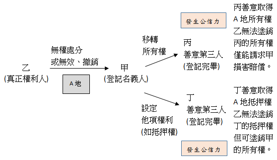
45. 全國國土計畫之重點研習(一)-土地利用與土地政策之模擬試題¶
發布日期: 2018-06-14
◎內政部公告之全國國土計畫所揭櫫之國土永續發展目標為何？
【答】
全國國土空間發展之總目標有三，其一、安全─環境保護、永續國土資源，其二、有序─經濟發展、引導城鄉發展，其三、和諧─社會公義、落實公平正義。
• (一) 安全－環境保護、永續國土資源：
-
因應極端氣候與天然災害，強化國土調適能力。
-
配合流域綜合治理計畫，進行土地使用規畫與檢討。
-
維護農地總量，提升農地生產效益。
-
建構永續能源、水源使用環境，促進節能減碳。
-
建構國家生態網路，加強海岸、濕地及海域管理。
• (二) 有序－經濟發展、引導城鄉發展：
-
落實集約發展，促進城鄉永續。
-
提升國土機動性、可及性及連結性。
-
配合國家整體產業發展政策，整合產業發展空間規劃。
-
整合區域文化生態景觀資源，強化文化觀光動能。
-
營造優質營農環境，推動農業永續發展。
• (三) 和諧－社會公義、落實公平正義：
- 建立合理補償機制，確保發展公平性。
2. 擬定都會區域及特定區域計畫，均衡城鄉發展。¶
注：本文圖片存放於 ./images/ 目錄下
46. 實價登錄2.0¶
發布日期: 2018-06-21
這週專欄提醒各位同學有關土地政策中不動產市場之重要觀念：實價登錄2.0
最近實價登錄修法之主要內容如下：
-
由買賣雙方於申請買賣移轉登記時共同申報。修法後由買賣雙方於申請登記時併同辦理，簡化作業流程，並將揭露時間縮短30日，提升資訊即時性買賣雙方基於稅賦權益相互勾稽制衡，提升資訊正確性。
-
自售預售屋者銷售前及代銷業者簽訂代銷契約後30日內，應將預售屋銷售資訊報備查；並於簽訂預售屋買賣契約書之日起30日內申報。
-
門牌或地號完整揭露，並溯及已揭露案件。
-
增訂直轄市、縣(市)主管機關查核權及查核範圍。確保資訊真實正確，嚇阻有心人士炒作。
5. 依違法情節修正罰則區分輕重，當事人屢不改正加重處罰，以符合符合比例原則。¶
注：本文圖片存放於 ./images/ 目錄下
47. 全國國土計畫之重點研習(二)-土地利用與土地政策之模擬試題¶
發布日期: 2018-06-21
◎內政部公告之全國國土計畫所擬訂之城鄉發展空間之發展策略為何？
【答】
• (一) 減緩溫室氣體排放、城鄉集約有序發展：
-
城鄉應朝向集約都市（compact city）發展，以有效利用土地資源、節省能源、增進公共設施使用效率。透過土地集約發展，減少無秩序之蔓延。若無實質人口或產業成長需求，應減少開發新社區及產業園區。
-
推動低碳與生態城鄉，建立鼓勵使用綠建材等低碳或低耗能設施之機制，並規範公有建築物應採用一定比例之節能減碳綠建材。
-
透過以人為本的綠色運輸與智慧運輸模式，建構便捷大眾運輸網，並強化偏遠地區公共運輸系統的可及性，以降低能源消耗。提高大眾運輸場站及其周邊土地使用強度，集約開發重要運輸走廊，避免空間發展無序蔓延；重大公共建設計畫應考量既有區域產業座落區位，並結合交通運輸節點周邊土地進行整體開發。
• (二) 因應氣候變遷極端氣候、營造永續韌性城鄉：
-
因應全球暖化等氣候變遷趨勢，各級土地使用計畫及部門計畫均應加強防災規劃與風險管理。對於不適合居住或從事產業活動之地區應採取適當對策，以避免氣候變遷所產生災害的一再發生。保育地區應避免新開發行為，如因區位無可替代性時，其開發方式應更為審慎。
-
為減少暴雨逕流帶來之災害衝擊，城鄉開發應配合流域整體經理，充分評估逕流量平衡及透水率，透過滯留設施、透水性開放空間、整體儲留設施等系統規劃，進行逕流總量管制、加強水資源回收利用，並配合檢討相關土地使用管制。
• (三) 促進都市再生、提升都市競爭力：
-
整合政府資源由都市更新提升至都市再生，整體改造老舊市區之機能、景觀風貌及增設高齡友善空間與設施（如無障礙空間與友善社區），提振地方經濟，增加都市競爭力。
-
對於以政府為主之都市更新案，積極辦理選商投資或整合實施，並協助籌措財源，評估委託成立都市更新推動辦公室及專業整合機構，協助招商投資作業及促進社區整合更新意願建立住戶自力更新推動機制，以鼓勵住戶自力更新。
-
對於直轄市、縣（市）產業用地使用情形進行通盤檢討，閒置未利用之產業土地應考量優先使用。
-
對於老舊工業區之基盤設施老舊或供給不足，應進行維護改善或新（整）建，藉以改善工業區環境，形塑整體園區意象，以提升服務機能，提高產業進駐率。
• (四) 提升國土生態景觀品質：
-
尊重自然與人文資產，發揮地區景觀特色，整合不同空間尺度景觀資源，依循生態網絡及都市紋理，創造開放空間。
-
推動國土美學理念，納入景觀保育、管理及維護相關政策。針對重點景觀地區應加強區內景觀規劃、改善、保育、管理及維護等相關措施，並加強重視城鄉景觀特質，透過跨域合作、環境資源修補、整合及資源串聯，形塑城鄉地景生態，建立城鄉空間自明性，強化城鄉空間獨特性。
• (五) 推動鄉村地區整體規劃、形塑鄉村特色風貌：
-
鄉村地區應以生活、生產、生態之再生規劃理念出發，充實生活機能設施、維護地方文化特色、營造鄉村生產經營環境、培育鄉村人力資源及建立生態網路，以協助鄉村地區永續發展，各面向發展策略如下：
-
生活面：建立數位環境、活化閒置空間、促進城鄉交流、保存鄉村文化與社區意識等，並維護及改善在地商業、旅遊、集會場所、文化設施及信仰中心等基本服務設施。
-
生產面：維護農地環境、促進農業六級化、推廣鄉村旅遊、建構旅遊服務設施等，以支持對鄉村地區商業、社區及遊客有益的旅遊及休閒活動。
-
生態面：避免破壞重要動植物棲息環境、提高基地透水性、營造生物多樣性生態環境等。
-
為改善鄉村地區之公共設施缺乏、建築土地不足、農村環境破壞及蔓延無序發展等課題，鄉村地區整體規劃應考量人口結構及發展趨勢，分別就居住、產業、運輸及基本公共設施等需求，研擬發展或轉型策略，其土地使用規劃原則如下：
-
居住：規劃及提供可負擔住宅，滿足當地居住需求，維持地方特色建築風貌。因農業經營需要衍生之居住需求，得於既有農村聚落周邊提供住宅空間，避免個別、零星申請而影響農業生產環境；就人口成長地區，得預留適當可建築土地，以引導集約發展；就人口減少地區，除應避免增加住商建築用地外，並應針對既有閒置空間進行評估轉型及再利用，以提高環境品質。
-
產業：配合在地農業、特色產業及商業服務業需求，於不影響鄉村環境品質前提下，於適當地點規劃在地產業發展區位，並訂定彈性土地使用管制規定，以促進鄉村在地產業永續發展。
-
運輸：以需求反應式公共運輸服務為主，改善接駁轉乘系統及服務品質，提高鄉村可及性，並規劃自行車及電動車輛等綠色運具環境，以民眾基本運輸需求為導向，打造兼具效率及友善運輸環境。
-
基本公共設施：應依據鄉村地區發展趨勢，規劃與設置老人及幼兒照顧服務設施、污水處理、自來水、電力、電信等基本公共設施，並注重環境保護及社區環境改善。
-
農業發展型之農村聚落及工商發展型之社區聚落發展原則如下：
-
農業發展型之農村聚落：農村聚落應以農村再生為基礎，鼓勵透過農村社區土地重劃等方式，建立農特產行銷之產業活化措施、進行整體環境改善、保存祭典文化及傳統建物、提供幼童及老年社區照顧福利設施、改善道路及污水處理等公共設施、注重生態保育與防災設施等，並提升農村社區意識，以培力改善社區環境。積極投入農業資源，改善農業生產環境。
-
工商發展型之社區聚落：具備都市生活特徵，宜劃設適當發展範圍，以擬定鄉街計畫方式，規劃配置基礎公共設施、污染防治相關設施，塑造城鄉生活風貌。
【資料來源：全國國土計畫，內政部，民國107年4月30日】¶
注：本文圖片存放於 ./images/ 目錄下
48. 土地徵收之問題與建議¶
發布日期: 2018-06-28
高普考即將於7月初考試，這最後階段絕對是關鍵，各位同學再多加把勁唸書，並且一定要多練習考古題，予以融會貫通。
今天專欄主要從我的土地政策與利用講義中，把彙整後的土地徵收之問題與建議，再次簡要提醒，其為考試一大重點題型，請同學務必要準備。
模擬考題：現行徵收爭議仍然不斷，目前土地徵收制度究竟有哪些問題？又請提出相關改善建議。
回答方向建議：
• (一) 現行土地徵收制度問題
-
徵收浮濫：提到土地三大空間意涵、要件被忽略。
-
公共利益的衡量問題：如何界定、由誰界定。
-
徵收前之協議價購流於形式：提到程序正義。
-
土地徵收補償狹隘：提到相當補償與完全補償。
• (二) 土地徵收制度之建議
-
落實土地正義：提到地方認同。
-
嚴格遵守要件：提到五大要件、徵收為不得已之最後手段。
-
嚴謹衡量公私利益：客觀、公平、公開。
-
落實法定程序：提到程序正義、協議價購為法定先行程序。
-
合理徵收補償：不應僅重視土地經濟價格。
6. 限縮徵收目的：不要再把土地徵收當成是解決政府財政問題的手段，也不要再藉由土地徵收，讓地方菁英進行土地的開發與炒作。¶
注：本文圖片存放於 ./images/ 目錄下
49. 全國國土計畫之重點研習(三)-土地利用與土地政策之模擬試題¶
發布日期: 2018-06-28
◎內政部公告之全國國土計畫所擬訂之全國供糧食生產之農地總量及全國農地資源之保護策略為何？
【答】
• (一) 全國供糧食生產之農地總量
-
全國農地總量之需求評估，係在國外農產品輸入受阻時， 國內應維持供糧食生產之農地資源，面積需求為74萬公頃至81萬公頃。考量農漁牧一級產業皆具有糧食生產功能，本計畫以前開數量作為供糧食生產之農地需求總量低推估之目標值。
-
直轄市、縣（市）政府應積極維護供糧食生產之農地面積數量及品質，該等農地面積及分布區位應於直轄市、縣（市）國土計畫載明，並由各級政府提供適當資源挹注。
• (二) 全國農地資源之保護策略
-
農業發展範圍應避免新增非農業使用設施與使用行為，避免生產環境遭受破壞而致使農地持續零碎化；其有設置必要者，應具有相容使用性質，或依本法得申請使用者，並不得影響周邊農業生產環境。
-
農業發展範圍優先投入農政資源，加強農業生產基礎重要設施(灌溉設施、防護設施等)之建設，並有效整合土地、用水及農產業輔導資源投入，以利規模化、集中化利用，提升農業經營效益。
-
維護農業生產環境，採取嚴格之環境管制，禁止各種可能污染之行為，並從嚴稽查違規使用。
【資料來源：全國國土計畫，內政部，民國107年4月30日】¶
注：本文圖片存放於 ./images/ 目錄下
50. 租賃住宅市場發展及管理條例¶
發布日期: 2018-07-05
各位同學好高普考將於這週考試，各位同學把握最後機會衝刺，記得要看考猜與總複習！考試時也不要太緊張，好好發揮實力！！祝各位考運亨通，金榜題名~
今日專欄則再次提醒有關土地政策、土地法之重點：租賃住宅市場發展及管理條例，幫各位同學整理一些重點如下（要注意其為土法有關房屋租用之特別法而優先適用）：
• 一、立法目的：為維護人民居住權，健全租賃住宅市場，保障租賃當事人權益，發展租賃住宅服務業，特制定本條例。
• 二、策略：
-
健全住宅租賃關係，保障租賃當事人權益
-
非具消費關係租約全面納入契約規範
-
租金協商回歸契約自由原則
-
刊登租賃住宅廣告真實透明
-
輔導成立房東房客協會提供專業諮詢
-
提供免費糾紛調處管道
-
委託代管業、包租業專業經營，建立租賃住宅服務制度
-
個人房東委託專業經營租稅減免措施
-
發展租賃住宅服務業引導善用專業服務
-
建立管理人員專業證照制度
-
營業保證金損害代償機制
• 三、條文重點：
- 租金：租賃住宅之租金，由出租人與承租人約定，不適用土地法第九十七條規定。(§6)
※立法意旨：按土地法第九十七條規定，城市地方房屋之租金，以不超過土地及其建築物申報總價年息百分之十為限；約定租金超過該規定者，得強制減定之。考量公告地價及房屋評定現值與市場價值仍有差距，無法完全反映房屋收益價值，且上開土地法規定僅規範城市地區之住宅，造成同樣為租賃行為，租金卻因地區不同而有差異。為避免影響出租人提供租賃住宅之意願，並尊重市場機制，爰定明予以排除適用。
-
押金：押金之金額，不得逾二個月之租金總額。出租人應於租賃契約消滅，承租人返還租賃住宅及清償租賃契約所生之債務時，返還押金或抵充債務後之賸餘押金。(§7)
-
轉租：轉租人應經出租人書面同意，始得轉租其租用之住宅全部或一部。轉租人簽訂轉租契約時，應向次承租人提供前項同意轉租之書面文件，並於轉租契約載明其與出租人之租賃標的範圍、期間及得終止租賃契約之事由。轉租人應於簽訂轉租契約後三十日內，以書面通知出租人。(§9)
※立法意旨：轉租人應提供有效之出租權力來源，讓次承租人取得租賃必要資訊，以保障租賃權益，規定轉租人應取得出租人同意轉租之書面資料後，並提供有關出租人與承租人簽訂住宅租賃契約之有效租賃範圍及期間資訊，以確保轉租契約之效力，俾利明確規範使用權益
曾老師補充：與民法§443：租賃物為房屋者，除有反對之約定外，承租人得將其一部分轉租於他人的規定不同，現在要書面同意才能轉租。
-
收回：
-
出租人提前終止租賃期間發生下列情形之一者，出租人得提前終止租賃契約，且承租人不得要求任何賠償：一、承租人毀損租賃住宅或附屬設備，不為修繕或相當之賠償。（賠償）二、承租人遲付租金或費用，達二個月之租額，經催告仍拒繳。（欠租）三、承租人未經出租人書面同意，將租賃住宅轉租於他人。（轉租）四、出租人為重新建築而必要收回。（收回）五、其他依法律規定得提前終止租賃契約。（其他）出租人依前項規定提前終止租賃契約者，應依下列規定期限，檢附相關事證，以書面通知承租人：一、依前項第一款至第三款及第五款規定終止者，於終止前三十日。二、依前項第四款規定終止者，於終止前三個月。
-
承租人提前終止租賃期間發生下列情形之一，致難以繼續居住者，承租人得提前終止租賃契約，且出租人不得要求任何賠償：一、因疾病、意外產生有長期療養之需要。（療養）二、租賃住宅未合於居住使用，並有修繕之必要，經承租人定相當期限催告，而不於期限內修繕。（修繕）三、因不可歸責於承租人之事由，致租賃住宅之一部滅失，且其存餘部分難以繼續居住。（滅失）四、因第三人就租賃住宅主張其權利，致承租人不能為約定之居住使用。（第三人）承租人死亡，繼承人得主張終止租賃契約。（死亡）承租人依第一項各款或其繼承人依前項提前終止租賃契約者，應於終止前三十日，檢附相關事證，以書面通知出租人。
曾老師補充：將原本土地法僅就出租人得以收回之條件，增加承租人亦得收回之情形。¶
注：本文圖片存放於 ./images/ 目錄下
51. 全國國土計畫之重點研習(四)-土地利用與土地政策之模擬試題¶
發布日期: 2018-07-05
◎內政部公告之全國國土計畫所擬訂之策略執行工具建議為何？
【答】
策略執行工具建議如下：
• (一) 回饋機制：
直轄市、縣（市）政府在興建地區公共設施時，應善用都市土地變更負擔、都市更新捐贈公益設施或整體開發捐贈用地等多元方式，取得相關用地。
• (二) 負擔開發義務：
-
繳交影響費：依國土計畫法第 28 條規定，得以繳交影響費、可建築土地抵充等方式，並設立專門保管及運用基金，運用於改善或增建公共設施。
-
工程受益費或都市計畫法建議之多元方式。
• (三) 公共設施闢建配合都市發展時程：
於公共設施闢建應配合城鄉發展時程原則下，所有設施開發應按照進度設置，城鄉發展與公共設施發展步調一致，以避免產生設施提供過量或不足之現象。
• (四) 公有土地活化機制：
-
公有土地、國營事業土地活化：直轄市、縣（市）政府得盤點城鄉發展地區內公有及國公營事業土地、設施資源，評估輔助社會弱勢、促進產業創新發展、落實社會公平正義等需求，協同土地及設施管理機關共同規劃，優先研擬公有土地及設施之活化策略，且相關公辦之整體開發、都市更新、促進民間參與公共建設、聯合開發等均應以創造社會公義為目標，進行公益性設施及公共設施規劃，以促使公共資源有效應用於社會。
-
國有非公用土地活化：直轄市、縣（市）政府得考量整體發展需求，洽土地管理機關，就閒置之國有非公用土地進行規劃，以有效利用土地，並促進城鄉發展。
【資料來源：全國國土計畫，內政部，民國107年4月30日】¶
注：本文圖片存放於 ./images/ 目錄下
52. 全國國土計畫之重點研習(五)-土地利用與土地政策之模擬試題¶
發布日期: 2018-07-06
◎何謂環境敏感地區？全國國土計畫將環境敏感地區分為那五類？
【答】
• (一) 環境敏感地區之意義：指對於人類具有特殊價值或具有前在天然災害，及容易受到人為的不當開發活動之影響而產生環境負面效應的地區。
• (二) 環境敏感地區之類型及項目：
-
資源利用敏感類型
-
飲用水水源水質保護區或飲用水取水口一定距離內之地區：依據飲用水管理條例劃設之飲用水水源水質保護區 或飲用水取水口一定距離內之地區。
-
自來水水質水量保護區：為自來水水源之保護，依自來水法劃定公布之水質水量保護區。
-
水庫集水區（供家用或供公共給水、非供家用或非供公共給水）：現有、興建中、規劃完成且定案（核定中），作為供家用或公共給水者、非作為供家用或公共給水者，依大壩上游全流域面積。其範圍由經濟部查認。
-
水庫蓄水範圍：依據水利法、水庫蓄水範圍使用管理辦 法劃設，水庫滿水位與其迴水所及蓄水域、蓄水相關重要設施之土地與蓄水域周邊必要之保護範圍。
-
森林：國有林事業區、保安林、大專院校實驗林地及林業試驗林地。
-
溫泉露頭及其一定範圍：依據溫泉法，溫泉露頭係指溫泉自然湧出之處；依該法規定，溫泉露頭及其一定範圍內，不得為開發行為。
-
水產動植物繁殖保育區：依據漁業法規定，為保育水產資源，目的事業主管機關得指定設置水產動植物繁殖保育區。
-
礦區（場）、礦業保留區、地下礦坑分布地區：依據礦業法劃設之礦區（場）、礦業保留區、地下礦坑分布地區。
-
地質敏感區（地下水補注）：依據地質法規定，中央地質主管機關應將具有特殊地質景觀、地質環境或有發生地質災害之虞之地區，公告為地質敏感區。
-
人工魚礁區及保護礁區：依據漁業法劃設之人工魚礁區及保護礁區。
-
生態敏感類型
-
國家公園區內之特別景觀區、生態保護區：特別景觀區係依據國家公園法劃設，符合無法以人力再造之特殊自然地理景觀，而嚴格限制開發行為之地區；生態保護區係依據國家公園法劃設，符合為保存生物多樣性或供研究生態而應嚴格保護之天然生物社會及其生育環境之地區。
-
自然保留區：依據文化資產保存法指定，符合具有代表性之生態體系，或具有獨特地形、地質、具有基因保存、永久觀察、教育及科學研究價值及珍稀動、植物之區域。
-
野生動物保護區：依據野生動物保育法劃定，屬野生動物重要棲息環境有特別保護必要之地區。
-
野生動物重要棲息環境：依據野生動物保育法劃定，符合下列情形之地區：
-
保育類野生動物之棲息環境。
-
野生動物種類及數量豐富之棲息環境。
-
人為干擾少，遭受破壞極難復原之野生動物棲息環境。
-
其他有特殊生態代表性之野生動物棲息環境。
-
自然保護區：依據森林法設置，為維護森林生態環境，保存生物多樣性，森林區域內所設置之地區。
-
一級、二級海岸保護區：依據海岸管理法劃設之一級、二級海岸保護區範圍。
-
重要濕地：依據濕地保育法劃設之國際級、國家級、地方級重要濕地。
-
文化景觀敏感類型
-
古蹟：依據文化資產保存法規定，指人類為生活需要所營建之具有歷史、文化、藝術價值之建造物及附屬設施。
-
考古遺址：依據文化資產保存法規定，指蘊藏過去人類生活所遺留具歷史文化意義之遺物、遺跡，而具有歷史、美學、民族學或人類學價值之場域。
-
聚落建築群：依據文化資產保存法規定，指建築式樣、風格特殊或與景觀協調，而具有歷史、藝術或科學價值之建造物群或街區。
-
文化景觀：依據文化資產保存法規定，指人類與自然環境經長時間相互影響所形成具有歷史、美學、民族學或人類學價值之場域。
-
史蹟：依據文化資產保存法規定，指歷史事件所定著而具有歷史、文化、藝術價值應予保存所定著之空間及附屬設施。
-
歷史建築：依據文化資產保存法規定，指歷史事件所定著或具有歷史性、地方性、特殊性之文化、藝術價值，應予保存之建造物及附屬設施。
-
紀念建築：依據文化資產保存法規定，指與歷史、文化、藝術等具有重要貢獻之人物相關而應予保存之建造物及─88─附屬設施。
-
水下文化資產：依據水下文化資產保存法規定，以全部或一部且週期性或連續性位於水下，具有歷史、文化、考古、藝術或科學等價值，並與人類生活有關之資產。
-
國家公園內之史蹟保存區：依據國家公園法規定，符合為保存重要歷史建築、紀念地、聚落、古蹟、遺址、文化景觀、古物而劃定及原住民族認定為祖墳地、祭祀地、發源地、舊社地、歷史遺跡、古蹟等祖傳地，並依其生活文化慣俗進行管制之地區。
-
國家公園內之一般管制區及遊憩區：各國家公園管理分區中之一般管制區及遊憩區。
-
地質敏感區（地質遺跡）：依據地質法規定，中央地質主管機關應將具有特殊地質景觀、地質環境或有發生地質災害之虞之地區，公告為地質敏感區。
-
災害敏感類型
-
活動斷層兩側一定範圍：依據實施區域計畫地區建築管理辦法劃定之範圍。
-
特定水土保持區：依據水土保持法劃定為亟需加強實施水土保持處理與維護，以有效防制水土災害發生或擴大地區。包括：
-
水庫集水區。
-
主要河川上游之集水區須特別保護者。
-
海岸、湖泊沿岸、水道兩岸須特別保護者。
-
沙丘地、沙灘等風蝕嚴重者。
-
山坡地坡度陡峭、具危害公共安全之虞者。
-
其他對水土保育有嚴重影響者。
-
土石流潛勢溪流：依據災害防救法及土石流災害潛勢資料公開辦法劃設公開之土石流潛勢溪流。
-
山坡地：依據山坡地保育利用條例及水土保持法劃設之山坡地。
-
河川區域：依據水利法及河川管理辦法劃設之河川區域。
-
洪氾區一、二級管制區，及洪水平原一、二級管制區：依據水利法劃設之洪氾區一、二級管制區；及依據水利法及淡水河洪水平原管制辦法劃設之洪水平原一、二級管制區。
-
區域排水設施範圍：依據水利法及排水管理辦法劃設之區域排水設施範圍。
-
地下水管制區：依據水利法及地下水管制辦法劃定公告地下水管制區。
-
地質敏感區（活動斷層、山崩與地滑、土石流）：依據地質法規定，中央地質主管機關應將具有特殊地質景觀、地質環境或有發生地質災害之虞之地區，公告為地質敏感區。
-
海堤區域：依據水利法及海堤管理辦法劃設之海堤區域。
-
淹水風險：依據災害防救法及水災潛勢資料公開辦法公開之水災潛勢資料，係基於設計降雨條件、特定地形地貌資料及水理模式模擬演算之結果。
-
一級、二級海岸防護區：依據海岸管理法劃設之一級、二級海岸防護區範圍。
-
國土復育促進地區：依據本法規定，經目的事業主管機關劃定公告之國土復育促進地區。
-
其他
-
氣象法之禁止或限制建築地區：依據氣象法劃設禁止或限制建築地區。
-
電信法之禁止或限制建築地區：依據電信法劃設禁止或限制建築地區。
-
民用航空法之禁止或限制建築地區或高度管制範圍：依據民用航空法、航空站飛行場助航設備四周禁止限制建築物及其他障礙物高度管理辦法、航空站飛行場及助航設備四周禁止或限制燈光照射角度管理辦法劃設之禁止或限制建築地區。
-
航空噪音防制區：依據噪音管制法及機場周圍地區航空噪音防制辦法劃設之各級航空噪音防制區，應檢討既有土地使用及開發計畫，遵守各項禁止建築規定及防音措施之地區。
-
核子反應器設施周圍之禁制區及低密度人口區：依據核子反應器設施管制法劃設之核子設施周圍禁建區及低密度人口區。
-
公路兩側禁建限建地區：依據公路法、公路兩側公私有建築物與廣告物禁建限建辦法劃設之公路兩側禁建限建地區。
-
大眾捷運系統兩側禁建限建地區：依據大眾捷運法、大眾捷運系統兩側禁建限建辦法劃設之大眾捷運系統兩側禁建限建地區。
-
鐵路兩側限建地區：依據鐵路兩側禁建限建辦法劃設之鐵路兩側禁建限建地區。
-
海岸管制區、山地管制區、重要軍事設施管制區之禁建、限建地區：依據國家安全法劃設之海岸管制區、山地管制區、重要軍事設施管制區之禁建、限建地區。
-
要塞堡壘地帶：依據要塞堡壘地帶法劃設之要塞堡壘地帶。（11）其他依法劃定應予限制開發或建築之地區。
【資料來源：全國國土計畫，內政部，民國107年4月30日】¶
注：本文圖片存放於 ./images/ 目錄下
53. 高普考『土地法規』考題-土地增值稅記存¶
發布日期: 2018-07-12
法規可能已修正
本文發布（2018-07-12）後，文中引用的 都市更新條例（2019-01-30 修正）、都市更新條例第39條（2019-01-30 修正）有修正，內容可能與現行規定不同，請以全國法規資料庫的現行條文為準。
本次高普考各科基本上除幾題考得稍微冷門外，大部分考題雖以案例入題，但都是上課、總複習、考猜有提到的，相信同學們應該都考得不錯！尤其，土地利用概要這次我出的考猜也命中兩題，所以還是再次提醒考猜要看哦！！
本次專欄則針對土地法規有考出都市更新權利變換有關土地增值稅「記存」概念予以說明（這在總複習也有強調哦！）：
考題：都市更新條例對於參加都市更新權利變換之土地所有權人定有准許土地增值稅「記存」相關規定，則記存之定義及其立法理由各為何？試分述之。又，倘若經核准記存土地增值稅之土地再贈與地方政府時，是否應繳納先前所記存之土地增值稅？其納稅義務人為何？試分述之。
擬答：
先寫都市更新條例第三十九條規定作為回答的前言（略）。
• (一) 記存之定義及其立法理由
-
記存之定義：結算已發生之增值稅並記在帳上，暫時不課徵，於下次移轉時一併繳納，故已結算之增值稅部分不再發生累進稅作用。
-
記存之立法理由：都市更新權利變換之土地增值稅准予記存，係為有利於都市更新事業之推動，避免納稅義務人因繳稅問題而不願參與都市更新。
• (二) 倘若經核准記存土地增值稅之土地再贈與地方政府時，應繳納先前所記存之土地增值稅。因記存僅暫時記在帳上，暫時不課徵，但記存之土地增值稅，於權利變換後再移轉該土地時，與該次再移轉之土地增值稅分別計算，一併繳納。
• (三) 其納稅義務人為合法建築物所有權人、地上權人、永佃權人或耕地三七五租約承租人。因該記存係視為土地所有權人獲配土地後無償移轉給這些權利變換關係人，而依據土地稅法之規定，土地為無償移轉者，其土地增值稅之納稅義務人為取得所有權之人。¶
注：本文圖片存放於 ./images/ 目錄下
54. 全國國土計畫之重點研習(六)-土地利用與土地政策之模擬試題¶
發布日期: 2018-07-12
法規可能已修正
本文發布（2018-07-12）後，文中引用的 國土計畫法第23條（2025-01-20 修正）、國土計畫法第35條（2025-01-20 修正）有修正，內容可能與現行規定不同，請以全國法規資料庫的現行條文為準。
◎內政部公告之全國國土計畫所擬定之土地使用基本方針為何？
【答】
• (一) 依據國土功能分區分類，進行土地使用差異化管理：
基於保育、利用及管理之需要，依土地資源特性，劃分國土保育地區、海洋資源地區、農業發展地區及城鄉發展地區。為落實國土功能分區指導功能，應依各國土功能分區及其分類之劃設原則及土地使用指導事項，分別訂定各國土功能分區及其分類之第一次編定及後續變更編定之使用地類別，並就各國土功能分區及其分類之使用地編定類別，訂定不同建築強度、應經申請同意使用項目、禁止或限制使用規定，以進行差異化土地使用管制。
• (二) 配合地方管制需要，研訂因地制宜土地使用規定：
直轄市、縣（市）主管機關應依據國土計畫法規定，擬定各該國土計畫，以彰顯地方資源特性，且直轄市、縣（市）主管機關並得依國土計畫法第 23 條第 4 項規定，另訂管制規定，報請中央主管機關核定後實施管制，以進行因地制宜之土地使用管制。
• (三) 依國土保育地區劃設原則，實施土地使用重疊管制：
國土保育地區係依據豐富資源、重要生態、珍貴景觀或易致災條件分布情形加以劃設，惟考量部分地區係依據原區域計畫法核發之開發許可、都市計畫或國家公園計畫等土地使用計畫進行管制，並未劃設為國土保育地區。為落實本計 畫精神，依國土計畫法第23條第1項規定，非屬國土保育地區之海洋資源地區、農業發展地區或城鄉發展地區之土地，如符合國土保育地區劃設原則者，其土地使用，除按各該國土功能分區及其分類之使用原則進行管制外，並依國土保育地區之土地使用指導事項規定辦理，進行重疊管制。
• (四) 考量環境敏感特性，實施管制標準：
在區域計畫架構下，環境敏感地區是用來限制申請開發許可及使用地變更編定，並不涉及土地使用項目及強度之管制；本計畫架構下之國土保育地區，是為保護重要環境及生 態資源而進行較嚴格之禁止限制，僅容許與資源保育有關之使用型態為主，故國土保育地區將就必要範圍予以劃設，其 範圍不等同於環境敏感地區。惟考量環境敏感地區為目的事業主管機關依據相關法律規定所公告之調查資料或管制事項，亦為國土規劃及土地開發審議之重要參考，是以，後續土地使用仍應考量環境敏感特性，不論劃歸何種國土功能分 區分類，仍應依其土地環境特性，採取適當的因應作為，實施管制標準。
• (五) 因應原住民族需求，另定特殊化土地使用管制：
原住民族土地及海域之土地使用管制，於其專法制定完成前，依據國土計畫法、都市計畫法或國家公園法進行管制。考量原住民族具有特殊文化風俗，為滿足其居住、耕作及殯葬等土地使用需求，未來得由中央主管機關會同中央原住民族主管機關擬定特定區域計畫，訂定土地利用管理原則，再配合研訂土地使用管制規定，納入國土計畫土地使用管制規則，並依原住民族基本法第21條規定辦理，以將原住民族需求納入規劃考量。
• (六) 配合國土復育計畫，禁止或限制土地使用：
依據國土計畫法第35條規定，土石流高潛勢地區、嚴重山崩、地滑地區、嚴重地層下陷地區、流域有生態環境劣化或安全之虞地區、生態環境已嚴重破壞退化地區等地區，經目的事業主管機關劃定為國土復育促進地區者，以保育和禁止開發行為及設施之設置為原則，並由劃定機關擬訂復育計畫，報 請中央目的事業主管機關核定後實施；且復育計畫之禁止、相容與限制規定，於各該復育計畫核定後，由中央主管機關配合納入國土計畫土地使用管制規則，以促進國土復育。國土復育促進地區如經公告廢止，中央主管機關並應配合檢討土地使用管制規定。
• (七) 維護國土功能分區功能，不得個別變更國土功能分區：
除國防、重大之公共設施或公用事業計畫，得於各國土功能分區申請使用外，土地使用應符合國土計畫法及其授權訂定之管制規則，且使用許可不得變更國土功能分區、分類。在符合國土計畫法第21條規定之國土功能分區使用原則下，有下列情形者，申請人得向土地所在之直轄市、縣(市)主管機關申請使用：
-
國土保育地區：為提供國土保育及保安使用，或不妨害國土保育之特定使用。
-
海洋資源地區：為提供不妨害海洋資源永續利用之多元使用。
-
農業發展地區：為提供農業發展多元使用。
-
城鄉發展地區：為提供城鄉發展多元利用。
• (八) 保障既有合法權利，允許土地使用：
-
既有合法可建築用地：原依區域計畫法編定之可建築用地，於不妨礙國土保育保安、海洋資源維護、農業發展需求等情形下，得繼續編定為可建築用地或其他適當使用地，並得為既有合法之使用，但有改建或新建需求時，則依國土計畫土地使用管制規則規定辦理；如經直轄市、縣（市）變更為非可建築用地者，應依法給予適當補償，以保障合法權益。
-
開發許可之案件：原依區域計畫法第15條之1第1項第2款規定取得開發許可之案件，其使用管制及開發建築，仍依許可之開發計畫書圖及其許可條件辦理。
• (九) 配合目的事業需求，專案輔導合法化：
全國國土計畫公告實施前，經目的事業主管機關依法令所訂專案輔導合法處理方案辦理使用分區變更或使用地變更編定案件，得於各該輔導期限內繼續辦理，並由中央主管機關另 訂國土功能分區分類相關土地使用管制規定。
【資料來源：全國國土計畫，內政部，民國107年4月30日】¶
注：本文圖片存放於 ./images/ 目錄下
55. 公司法人登記證明文件¶
發布日期: 2018-07-19
各位同學好
高普考圓滿結束，三個月後有上榜同學記得跟老師報喜哦，榮耀與你同在！
今日專欄為各位說明有關於法人辦理土地登記時之有關身分證明文件概念：
根據土地登記規則第42條規定：
第一項：申請人為法人者，應提出法人登記證明文件及其代表人之資格證明。其為義務人時，應另提出法人登記機關核發之法人及代表人印鑑證明或其他足資證明之文件，及於登記申請書適當欄記明確依有關法令規定完成處分程序，並蓋章。
第二項：前項應提出之文件，於申請人為公司法人者，為法人登記機關核發之設立、變更登記表或其抄錄本、影本。
針對第二項部分說明如下：
因經濟部已停發公司及其負責人印鑑證明書，並改以公司設立（變更）登記表正本、影本或抄錄本及其影本以為替代，因上開替代之文件除留有公司及負責人印鑑樣章外，尚登記有公司名稱、公司所在地、公司統一編號、公司董事（含董事長）與監察人姓名、身分證統一編號、住所等資料，為避免檢附三種資料重疊之證件，造成申請人困擾，亦增加審查人員重複比對文件資料之處理時間，故有關公司法人申請登記時，如已檢附公司設立（變更）登記表正、影本或抄錄本及其影本者，得免予提出公司執照及其代表人之資格證明。
有關公司設立登記表如圖所示：
[圖片1]
文章圖片¶
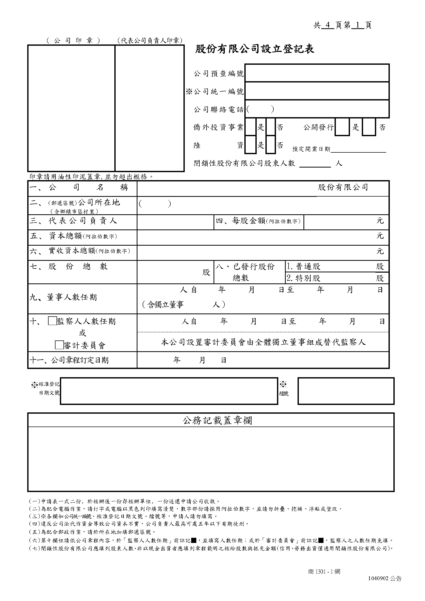
56. 全國國土計畫之重點研習(七)-土地利用與土地政策之模擬試題¶
發布日期: 2018-07-19
◎試述極端氣候下，氣候變遷之土地使用議題及調適策略？
【答】
• (一) 土地使用議題：
-
高山及山坡地：
-
自然災害頻傳加上高山及山坡地土地使用方式，持續加劇自然災害的衝擊，並造成生態環境保育與水資源供給的困境。
-
都會地區持續擴張，壓縮平原地區農業發展，並進一步刺激山坡地開發。
-
原住民族聚落基礎公共服務設施如何因應氣候變遷改變設施供給模式，亟須因地制宜的彈性。
-
平原地區：
-
農業發展受到都市及製造業擴張的衝擊，導致農糧安全風險逐漸升高，亟待保護農糧生產環境。
-
水資源豐枯不均，因應農業及產業發展及生態保護，亟待推動流域及海岸整合治理。
-
都市及鄉村集居地區：
-
都市及產業發展排放溫室氣體，持續加重熱島效應及極端氣候的衝擊。
-
都市及城鄉基盤設施未及因應氣候變遷及具危險性工業的發展，引起都市城鄉及其周邊地區的安全議題，亟待檢討與轉型。
-
城鄉、產業及農業發展受到極端降雨與乾旱風險的威脅，如何透過土地使用策略以減緩災害衝擊及滿足社會經濟發展需求的變遷，挑戰嚴峻。
-
部分城鄉居住空間受到氣候變遷的衝擊，可能不再適合居住，這些遷居戶的安置議題應事先思考及妥予因應。
-
海岸、離島及海域：
-
極端氣候及自然災害使海岸聚落及工業區安全議題更加嚴峻，亟須調整土地發展策略，降低氣候變遷風險。
-
端氣候加劇離島連外交通的瓶頸；水電基礎公共服務不足，限制離島產業及社會發展。
-
氣候變遷使海岸及海洋生態面臨更強的外部衝擊，連帶影響沿岸及離島社區的經濟與生活，亟須加強生態資源保育。
• (二) 土地使用調適策略：
-
高山及山坡地：
-
坡地農業利用應加強災害防治，並兼顧水源地維護及基礎設施安全。
-
檢討山區城鄉及產業發展之潛在風險及研析轉型調適方式；加強坡地住宅及坡地農業之暴雨逕流、崩塌潛勢監測及相關保全措施。
-
原住民族聚落周邊指認高風險地區，因地制宜發展微型基盤公共服務設施並加強環境監測。
-
平原地區：
-
維護農地資源及灌排系統，以確保糧食安全。
-
持續監測河川系統洪枯流量變化，推動脆弱環境集水區治理。
-
強化水源調配機制及系統，並降低水資源相關設施環境衝擊。
-
都市及鄉村集居地區：
-
加速推廣大眾運輸、需求反應式公共運輸、自行車及人行步道系統，並落實及增修相關法規與補助政策，以減少建成地區溫室氣體排放，並推廣韌性都市規劃。
-
都市發展及產業配置應考量乾旱潛勢及水源供需，強化保水儲水及緊急備援用水措施規劃。
-
因應氣候風險類型及社會長期發展趨勢，檢討基盤設施區位及型態。
-
優先保留都市及鄉村之開放空間，並增加樹木覆蓋面積及滯洪功能，以增加溫室氣體吸收儲存能力，並緩衝氣候變遷及暴雨衝擊。
-
透過公有土地活化、公共設施多目標使用、多元更新及大眾運輸導向土地使用規劃，並考量高齡化社會的趨勢，提供中繼基地或其他方案，規劃氣候變遷調適遷居戶容納空間，以容納遷居戶。
-
海岸、離島及海域：
-
強化海岸都市、鄉村及工業區安全：
-
考量海平面上升及海嘯潛勢，設置必要安全維護設施。
-
考量環境容受力，集中發展相關人工設施，儘可能保全自然環境之完整性。
-
加速推動海岸工業區調適計畫，強化安全維護及生產穩定性。
-
配合氣候變遷風險及海岸侵淤狀況，調整沿海土地使用強度與類型：
-
城鄉發展地區應依據土地使用類型、建物密集程度，研擬整體性海岸災害潛勢防治策略。
-
沿海低地之都市發展、土地使用及資源利用，應考慮海平面上升衝擊，設置緩衝帶並降低開發利用強度。
-
強化離島地區公共服務與儲備能力：
-
維持對外交通聯結及建立物資儲備機制，強化島嶼環境之社會應變力。
-
因應乾旱風險，開發新興水資源、建置雨水貯留供水系統以及污水回收利用系統，健全島嶼水資源自給自足能力。
-
強化海岸及海洋生態保育：
-
加強海岸及海洋相關保護區劃設及管理，保全漁業及相關產業生產的生態基礎。
-
無人離島、礁石應以保育優先，避免人為開發利用。
-
整合保育相關機關政策及執行計畫，提供海岸及海洋保護與使用之規劃參考。
【資料來源：全國國土計畫，內政部，民國107年4月30日】¶
注：本文圖片存放於 ./images/ 目錄下
57. 租賃契約¶
發布日期: 2018-07-26
考不動產經紀人的同學要注意囉~
租賃住宅市場發展及管理條例自6月27日施行，很有可能是會在今年考試入題。今天專欄特別提醒，是有關內政部最新訂定的「住宅租賃契約應約定及不得約定事項」（107年6月27日生效），茲整理架構內容，以及提醒要背的重點如下：
壹、應約定事項
• 一、租賃標的
-
(一)租賃住宅標示
-
(二)租賃範圍
• 二、租賃期間
• 三、租金約定及支付
• 四、押金約定及返還
• 五、租賃期間相關費用之支付
• 六、稅費負擔之約定
• 七、使用租賃住宅之限制（注意！）
- 出租人是否承租人將本租賃標的之全部或一部分轉租、出借或以其他方式供他人使用，或將租賃權轉讓於他人。應出具同意書載明同意轉租之範圍、期間及得終止本契約之事由，供承租人轉租時向次承租人提示。
• 八、修繕
• 九、室內裝修
- 租賃住宅有室內裝修之必要，承租人應經出租人同意，始得依相關法令自行裝修，且不得損害原有建築之結構安全。
• 十、出租人之義務及責任（注意！）
-
(一)出示有權出租之證件及身分證明文件
-
(二)合於所約定居住使用之租賃住宅交付；於租賃期間保持其合於居住使用之狀態
-
(三)說明租賃住宅由出租人負責修繕項目及範圍，並提供有修繕必要時之聯絡方式。
• 十一、承租人之義務及責任（注意！）
-
(一)出示身分證明文件
-
(二)善良管理人之注意義務
-
(三)負損害賠償責任
-
(四)同意轉租者，應於簽訂轉租契約後三十日內，以書面將轉租範圍、期間、次承租人之姓名及通訊住址等相關資料通知出租人
• 十二、租賃住宅部分滅失
• 十三、提前終止租約之約定（注意！）
- 得約定提前終止，但需先行通知。未先通知而逕予終止應賠償他方最高不得超過一個月租金額之違約金。
• 十四、租賃住宅之返還
• 十五、租賃住宅所有權之讓與
- 買賣不破租賃
• 十六、出租人提前終止租約（背！）
-
(一)出租人為重新建築而必要收回。
-
(二)承租人遲付租金之總額達二個月之金額，並經出租人定相當期限催告，仍不為支付。
-
(三)承租人積欠管理費或其他應負擔之費用達相當二個月之租金額，經出租人定相當期限催告，仍不為支付。
-
(四)承租人違反第七點第二項規定而違法使用、存放有爆炸性或易燃性物品，經出租人阻止，仍繼續使用。
-
(五)承租人違反第七點第三項勾選不同意之約定，擅自轉租、出借或以其他方式供他人使用或將租賃權轉讓予他人。
-
(六)承租人毀損租賃住宅或附屬設備，經出租人限期催告修繕而不為修繕或相當之賠償。
-
(七)承租人違反第九點第一項規定，未經出租人同意，擅自進行室內裝修。
-
(八)承租人違反第九點第一項規定，未依相關法令規定進行室內裝修，經出租人阻止仍繼續為之。
-
(九)承租人違反第九點第一項規定，進行室內裝修，損害原有建築之結構安全。
• 十七、承租人提前終止租約（背！）
-
(一)租賃住宅未合於居住使用，並有修繕之必要，經承租人依第八點第二項規定催告，仍不於期限內修繕。
-
(二)租賃住宅因不可歸責承租人之事由致一部滅失，且其存餘部分不能達租賃之目的。
-
(三)租賃住宅有危及承租人或其同居人之安全或健康之瑕疵；承租人於簽約時已明知該瑕疵或拋棄終止租約權利者，亦同。
-
(四)承租人因疾病、意外產生有長期療養之需要。
-
(五)因第三人就租賃住宅主張其權利，致承租人不能為約定之居住使用。
• 十八、遺留物之處理
• 十九、履行本契約之通知
- 通知得經租賃雙方約定以□電子郵件□簡訊□通訊軟體（例如Line、Whats App 等文字顯示）□其他__方式為之
• 二十、其他約定
- 是否同意辦理公證
• 二十一、契約及其相關附件效力
• 二十二、當事人及其基本資料
貳、不得約定事項（背！）
• 一、不得約定廣告僅供參考。
• 二、不得約定承租人不得申報租賃費用支出。
• 三、不得約定承租人不得遷入戶籍。
• 四、不得約定應由出租人負擔之稅賦及費用，若較出租前增加時，其增加部分由承租人負擔。
• 五、不得約定免除或限制民法上出租人故意不告知之瑕疵擔保責任。
• 六、不得約定承租人須繳回契約書。
• 七、不得約定本契約之通知，僅以電話方式為之。
• 八、不得約定違反強制或禁止規定。¶
注：本文圖片存放於 ./images/ 目錄下
58. 不動產估價實務模擬試題¶
發布日期: 2018-07-26
• 一、勘估標的為臨接30公尺寬道路之方整土地，土地面積500坪，使用分區為都市計畫住宅區，建蔽率50%，容積率150%，價格日期為107年7月1日，勘察日期為107年8月19日。請以下列所給的資料，在勘估標的移入容積20%之條件下，評估勘估標的之特定價格，並以不動產估價報告書呈現。
• 二、買賣實例資料：
-
(一)實例A：土地面積242坪，107年3月28日成交金額2,000萬元，都市計畫住宅區，建蔽率50%，容積率180%，位於勘估標的之近鄰地區，個別因素調整率103%，價格日期調整率102%。
-
(二)實例B：土地面積308坪，106年4月14日成交金額2,100萬元，都市計畫住宅區，建蔽率50%，容積率150%，位於勘估標的之類似地區，區域因素調整率101%，個別因素調整率98%，價格日期調整率105%。
-
(三)實例C：土地面積415坪，107年5月10日成交金額2,900萬元，都市計畫住宅區，建蔽率50%，容積率150%，位於勘估標的之類似地區，區域因素調整率96%，個別因素調整率99%，價格日期調整率101%。
-
(四)實例D：土地面積362坪，107年1月10日成交金額3,000萬元，都市計畫住宅區，建蔽率50%，容積率180%，位於勘估標的之類似地區，區域因素調整率95%，個別因素調整率104%，價格日期調整率103%。
-
(五)實例E：土地面積540坪，106年10月30日成交金額3,800萬元，都市計畫住宅區，建蔽率50%，容積率150%，位於勘估標的之近鄰地區，個別因素調整率95%，價格日期調整率104%。
-
(六)實例F：土地面積350坪，106年2月20日成交金額2,800萬元，都市計畫住宅區，建蔽率50%，容積率180%，位於勘估標的之類似地區，區域因素調整率102%，個別因素調整率98%，價格日期調整率108%。
• 三、土地開發分析法資料：規劃興建地上三層或四層之透天住宅，無地下室，陽台以總樓地板面積之八分之一計，屋頂突出物以建築面積之八分之一計。平均售價每坪12萬元，營造施工費每坪5萬元。規劃設計費以營造施工費之2%計，廣告銷售費以總銷售金額之4%計，管理費以總銷售金額之3%計，稅捐及其他負擔以總銷售金額之1%計，適當利潤率以15%計。一年期定存利率0.8%，放款利率2.8%。土地投資之自有資金比例30%，借貸資金比率70%。建築投資之自有資金比例40%，借貸資金比率60%。土地價值比率55%，建物價值比率45%。土地開發年期2年(含建築開發年期1.5年)。
【建請同學先自行練習，再參考解答】
• 一、不動產估價報告書：
• (一) 委託人：○○○。
• (二) 勘估標的之基本資料：○○市（縣）○○區（鄉、鎮、市）○○段○○小段○○地號，土地面積500坪。
• (三) 價格日期及勘察日期：
-
價格日期：民國107年7月1日。
-
勘察日期：民國107年8月19日。
• (三) 價格種類：特定價格。
• (四) 估價條件：勘估標的移入容積20%之條件。
• (五) 估價目的：容積移轉接受基地之價格參考。
• (六) 估價金額：新臺幣肆仟貳佰伍拾伍萬元正。
• (七) 勘估標的之所有權、他項權利及其他負擔。
-
所有權人：○○○。
-
他項權利：○○○。
-
其他負擔：○○○。
• (八) 勘估標的使用現況：○○○。
• (九) 勘估標的法定使用管制及其他管制事項：
-
法定使用管制：住宅區，建蔽率50%，容積率150%。
-
其他管制事項：○○○。
• 二、價格形成主要因素分析：
• (一) 區域因素分析：
-
區域公共設施概況。
-
區域交通運輸概況。
-
區域生活機能概況。
-
區域不動產供需概況。
-
區域未來發展概況。
• (二) 個別因素分析：
-
勘估標的臨路情形。
-
勘估標的形狀。
-
勘估標的寬度。
-
勘估標的深度。
-
勘估標的分區管制。
• 三、估價所運用之方法與其估算過程及價格決定之理由：
• (一) 估價所運用之方法：
-
勘估標的特定價格：含容積移入之勘估標的價格以土地開發分析法評估為主，參酌比較法評估之。
-
勘估標的正常價格：未含容積移入之勘估標的價格以土地開發分析法評估為主，參酌比較法評估之。
• (二) 估算過程：
-
含容積移入之勘估標的特定價格估計：
-
比較法：
-
實例A：2,000÷242=8.26萬／坪[圖片1]
-
實例D：3,000÷362=8.29萬／坪[圖片2]
-
實例F：2,800÷350=8萬／坪[圖片3]
綜上，考量實例A位於近鄰地區，且成交日期離價格日期最近，故賦予最高權重50%。實例D與實例F皆位於類似地區，但實例D之成交日期離價格日期較近，故賦予實例D之權重30%，賦予實例F之權重20%。最後，加權平均後得到比較價格每坪8.6萬元。8.68×50%+8.44×30%+8.64×20%=8.6萬／坪
-
土地開發分析法：
-
銷售面積：容積率原為150%，容積移入20%。150%×(1+20%)=180%建蔽率50%，容積率180%，興建地上四層透天住宅，無地下室。500×180%=900坪（基準樓地板面積）900×1/8=112.5坪（陽台面積）500×50%×1/8=31.25坪（屋頂突出物面積）900+112.5+31.25=1,044坪（銷售面積）
-
總銷售金額（S）：12×1,044=12,528萬元
-
直接成本（C）：5×1,044=5,220萬元
-
間接成本（M）：規劃設計費：5,220×2%=104萬元廣告銷售費：12,528×4%=501萬元管理費：12,528×3%=376萬元稅捐及其他負擔：12,528×1%=125萬元合計：104+501+376+125=1,106萬元
-
綜合利率（i）：(0.8%×30%+2.8%×70%)×2×55%+(0.8%×40%+2.8%×60%)×1.5×1/2×45%=3.095%
-
適當利潤率（R）：適當利潤率以15%計。
-
土地開發分析價格（V）：V=S÷(1+R)÷(1+i)-(C+M) =12,528÷(1+15%)÷(1+3.095%)-(5,220+1,106) =4,241萬元（總價）4,241÷500=8.48萬／坪（單價）
含容積移入之勘估標的價格決定：本報告以比較法估得土地比較價格為8.6萬元／坪，以土地開發分析法估得土地開發分析價格為8.48萬元／坪。容積移轉接受基地估價以土地開發分析法為主，以比較法為輔，故賦予土地開發分析價格之權重60%，賦予比較價格之權重40%。最後，加權平均後得出含容積移入之勘估標的土地單價為8.51萬元／坪，總價為4,255萬元。8.6×40%+8.48×60%=8.51萬／坪8.51×500=4,255萬元
-
未含容積移入之勘估標的正常價格估計：
-
比較法：
-
實例B：2,100÷308=6.82萬／坪[圖片4]
-
實例C：2,900÷415=6.99萬／坪[圖片5]
-
實例E：3,800÷540=7.04萬／坪[圖片6]
綜上，實例E雖位於近鄰地區，但成交日期離價格日期稍遠；實例C雖位於類似地區，但成交日期離價格日期最近，故實例C及實例E賦予相同權重，皆為40%。實例B位於類似地區，且成交日期離價格日期最遠，故賦予最低權重20%。最後，加權平均後得到比較價格每坪6.89萬元。7.09×20%+6.71×40%+6.96×40%=6.89萬／坪
-
土地開發分析法：
-
銷售面積：建蔽率50%，容積率150%，興建地上三層透天住宅，無地下室。500×150%=750坪（基準樓地板面積）750×1/8=93.75坪（陽台面積）500×50%×1/8=31.25坪（屋頂突出物面積）750+93.75+31.25=875坪（銷售面積）
-
總銷售金額（S）：12×875=10,500萬元
-
直接成本（C）：5×40%+7.11×60%=7.02萬／坪7.02×500=3,510萬元875=4,375萬元
-
間接成本（M）：規劃設計費：4,375×2%=88萬元廣告銷售費：10,500×4%=420萬元管理費：10,500×3%=315萬元稅捐及其他負擔：10,500×1%=105萬元合計：88+420+315+105=928萬元
-
綜合利率（i）：(0.8%×30%+2.8%×70%)×2×55%+(0.8%×40%+2.8%×60%)×1.5×1/2×45%=3.095%
-
適當利潤率（R）：適當利潤率以15%計。
-
土地開發分析價格（V）：V=S÷(1+R)÷(1+i)-(C+M) =10,500÷(1+15%)÷(1+3.095%)-(4,375+928) =3,553萬元（總價）3,553÷500=7.11萬／坪（單價）
未含容積移入之勘估標的價格決定：本報告以比較法估得土地比較價格為6.89萬元／坪，以土地開發分析法估得土地開發分析價格為7.11萬元／坪。容積移轉接受基地估價以土地開發分析法為主，以比較法為輔，故賦予土地開發分析價格之權重60%，賦予比較價格之權重40%。最後，加權平均後得出，未含容積移入之勘估標的土地單價為7.02萬元／坪，總價為3,510萬元。6.89×40%+7.11×60%=7.02萬／坪7.02×500=3,510萬元
• (三) 依不動產技術規則第6條第2項規定：「不動產估價，應註明其價格種類；其以特定價格估價者，應敘明其估價條件，並同時估計其正常價格。」因此，本報告評估結果如下：
-
含容積移入之勘估標的特定價格，土地單價為8.51萬元/坪，總價為4,255萬元。
-
未含容積移入之勘估標的正常價格，土地單價為7.02萬元/坪，總價為3,510萬元。
• (四) 其他與估價相關之必要事項及依規定須敘明事項：○○○。
• (五) 不動產估價師姓名及其證照字號：○○○。
• 四、附件：本報告書有關文件：
• (一) 勘估標的位置圖。
• (二) 勘估標的及其四鄰照片。
• (三) 土地登記簿謄本。
• (四) 地籍圖謄本。
• (五) 土地使用分區證明書。
文章圖片¶

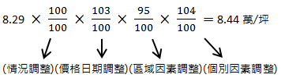


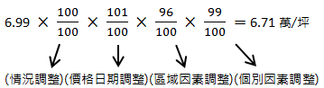
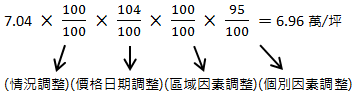
59. 閒置工業區強制拍賣¶
發布日期: 2018-08-02
很高興地政士放榜已有收到好幾位同學傳訊息報喜，在這邊也恭喜上榜的各位同學，有考上還沒跟老師分享的同學，也歡迎傳訊與我分享榮耀～
今日專欄跟各位同學提醒一下有關「工業區的強制拍賣制度」
請先參考最近的新聞：第一批閒置土地 8月公告【原文轉自：udn聯合新聞網】
再請注意「產業創新條例第46條之1」最新修正內容（106.11.22施行）：
由中央主管機關或直轄市、縣（市）主管機關開發設置之產業園區，土地所有權人無正當理由已持續閒置土地相當期間，除與主管機關另有契約約定或依相關規定處理者外，如符合中央主管機關所定閒置土地認定基準，各該主管機關得公告及通知土地所有權人及利害關係人，於二年期限內依法完成建築使用；各該主管機關並得隨時輔導土地所有權人及利害關係人於期限內依法完成建築使用。
各該主管機關依前項規定限期完成建築使用時，應囑託土地登記機關辦理註記登記。二年期間不因土地所有權移轉而中斷，效力仍及於繼受人。土地所有權人因有不可歸責之事由致遲誤之期間，應予扣除，如有正當理由者，並得請求延展之。
於前二項期限內依法完成建築使用者，各該主管機關應囑託土地登記機關辦理塗銷註記登記；屆期未完成建築使用者，各該主管機關得處以土地所有權人該閒置土地當期公告現值總額百分之十以下之罰鍰，並得通知土地所有權人於一個月內提出改善計畫。各該主管機關於接獲改善計畫後得通知土地所有權人進行協商，土地所有權人應於接獲進行協商之通知日起一個月內完成協商。土地所有權人未遵期提出改善計畫或屆期未與各該主管機關完成協商者，各該主管機關基於促進產業園區用地合於立法目的使用及發展國家經濟防止土地囤積之公共利益，得作成書面處分並載明該閒置土地依查估市價審定之合理價格後，予以公開強制拍賣。
• 一、立法意旨
政府徵收土地開發產業園區，目的係為協助業者取得土地，促進產業升級與發展經濟，因此有其及時與急迫性。為增進公共利益，所徵收之園區土地應符合相關徵收用途，避免土地所有權人利用國家開發產業園區及給予租稅優惠等獎勵措施，購入土地轉售圖利或另為不合目的之使用。
• 二、辦理方式
-
公告及通知限期二年內依法完成建築使用
-
囑託登記機關辦理註記登記
-
處當期公告現值總額百分之十以下罰鍰
-
得通知一個月內提出改善計畫→進行協商→一個月內完成協商
-
公開強制拍賣
• 三、爭議
整個立法設計上，沒有顧慮到既得權的尊重以及跟現行行政執行制度、強制執行制度兩者之間的接軌，特別是在設計原始取得的拍定效果及目前整個強制執行競合的體系。¶
注：本文圖片存放於 ./images/ 目錄下
60. 全國國土計畫之重點研習(八)-土地利用與土地政策之模擬試題¶
發布日期: 2018-08-02
◎未登記工廠林立，全國國土計畫對此之土地使用指導原則為何？
【答】
• (一) 掌握未登記工廠資訊，擬定直轄市、縣（市）未登記工廠管理（輔導及清理）計畫：直轄市、縣（市）政府應辦理未登記工廠資訊調查作業，建立未登記工廠數量、區位、面積、產業種類等，並擬定直轄市、縣（市）未登記工廠管理（輔導及清理）計畫，進行未登記工廠分級分類輔導。對於零星、新增之未登記工廠，優先依法令其變更使用、停止使用或拆除恢復原狀等，以保護農業生產環境完整性及遏止未登記工廠新增情形。
• (二) 輔導轉型或遷廠原則：針對非屬低污染產業或無法輔導廠地合法使用者，產業主管機關以按下列措施優先輔導為原則：
-
輔導轉型：轉導轉型為符合所屬國土功能分區分類下容許使用範疇之產業使用。
-
輔導遷廠：無法輔導其轉型經營者，配合產業主管機關各項土地優惠措施及廠地供給資訊，遷移至合法產業園區（或產業用地）及其他可供設廠土地。
• (三) 輔導土地合理及合法使用：
-
屬聚集達一定規模以上或在地產業鏈結程度高之既存未登記工廠聚落，經產業主管機關認定符合中央或地方產業發展需求、具有優先輔導合法必要者，得輔導土地合理及合法使用。經產業主管機關認定非屬低污染產業者，優先朝輔導遷廠或轉型方式處理。
-
產業主管機關應先查核未登記工廠聚落是否符合產業政策、鄰近產業園區（或產業用地）供給及產業園區規劃配合情形，以及是否符合所訂未登記工廠分級分類輔導措施。
-
以不影響整體農業生產環境為前提，且避免位於符合農業發展地區第一類或國土保育地區第一類劃設條件之區位。如屬上述區位者，優先朝輔導轉型成與所屬國土功能分區分類相容之產業或輔導遷廠方式辦理。
-
土地開發方式：
-
循都市計畫檢討、變更或新訂擴大都市計畫或依國土計畫法使用許可程序辦理為原則，不符所屬國土功能分區分類者，先依法完成國土功能分區分類檢討變更程序後始得為之。
-
依法需辦理環境影響評估、實施水土保持之處理（維護）及其他法令另有規定者，依環境影響評估法、水土保持法及其他法令規定辦理。
-
依國土計畫法使用許可程序辦理者，應符合前述安全性、公平性、合理性等原則。
-
公告特定地區內未登記工廠之處理：位於依工廠管理輔導法第33條公告特定地區內未登記工廠，並依區域計畫法及相關法規變更為一般農業區丁種建築用地及其他使用地者，直轄市、縣（市）主管機關得按原使用地性質編定為適當使用地。如未來有擴大使用需求時，依國土計畫法相關規定辦理。
【資料來源：全國國土計畫，內政部，民國107年4月30日】¶
注：本文圖片存放於 ./images/ 目錄下
61. 夫妻間贈與得申請不課徵土地增值稅¶
發布日期: 2018-08-09
法規可能已修正
本文發布（2018-08-09）後，文中引用的 土地稅法第28條之2（2021-06-23 修正）有修正，內容可能與現行規定不同，請以全國法規資料庫的現行條文為準。
各位同學好
今日專欄為各位同學提醒一下有關「配偶相互贈與得申請不課徵土地增值稅」之幾個觀念釐清。
• (一) 法條規定
土地稅法第28條之2：「配偶相互贈與之土地，得申請不課徵土地增值稅。但於再移轉第三人時，以該土地第一次贈與前之原規定地價或前次移轉現值為原地價，計算漲價總數額，課徵土地增值稅。」
• (二) 重要觀念釐清
- 具選擇性
配偶相互贈與土地非當然不課徵土地增值稅，而是可由當事人自行選擇。
- 不課徵係租稅遞延
不課徵與免徵不同，屬「租稅遞延」之概念，亦即本次暫不課徵，留待下次移轉給第三人時再予計算土地漲價總數額。
- 可能影響累進效果
雖然此次配偶間移轉得暫不課徵，惟也要注意將租稅時機往後遞延，多年後再將土地移轉給第三人時反而可能會適用比原先選擇「課徵」時的稅率還高，因為公告土地現值一般多逐年調高。因此，本次選擇不課徵未必有利。
參考來源：臺南市政府財政稅務局，2018.7.31，夫妻間贈與土地得申請不課稅土地增值稅¶
注：本文圖片存放於 ./images/ 目錄下
62. 新古典經濟學與新制度經濟學¶
發布日期: 2018-08-09
新古典經濟學是假設人乃在資訊充分與完全理性下作決策，故吾人皆為經濟人(economic man)，皆在資訊充分與完全理性下追求最大效用或最大利潤。新古典經濟學以馬歇爾(Marshall)供需理論為代表。
新制度經濟學是假設人乃在資訊不完全與有限理性下作決策。所謂資訊不完全，指吾人手上並不一定擁有完整無誤的資訊，且獲得資訊必須付出時間與精力；因此，人在作決策時，所蒐集的資訊是有限的。所謂有限理性，指吾人腦中並不一定擁有完整無缺的知識，且獲得知識必須經過學習過程；因此，人在作決策時，所具備的知識是有限的。新制度經濟學以寇斯(Coase)交易成本理論為代表。
總之，新古典經濟學是在一個理想狀態下的最佳均衡。新制度經濟學是在一個現實狀態下的次佳均衡。兩者的均衡點有「間隙」(gap)存在。因此，如何運用政府力量或市場力量，以縮小間隙，是吾人努力的目標。¶
注：本文圖片存放於 ./images/ 目錄下
63. 房屋稅修法爭議¶
發布日期: 2018-08-16
法規可能已修正
本文發布（2018-08-16）後，文中引用的 房屋稅條例第15條（2024-01-03 修正）有修正，內容可能與現行規定不同，請以全國法規資料庫的現行條文為準。
今日專欄談有關於前陣子新聞文化大學大群館而衍生出的房屋稅修法爭議
請先參考下列新聞：大群館爭議 房屋稅修法停看聽【原文轉自：聯合新聞網_經濟日報】大群館免繳房屋稅 財部將研議防堵措施【原文轉自：奇摩新聞_台灣新生報】
爭議一：「拆戶」免徵房屋稅；10萬元門檻過低
-
規定「房屋稅條例」第15條第1項第9款規定：住家房屋現值在新台幣10萬元以下免徵房屋稅。換句話說，符合「住家」及「房屋現值在10萬元以下」兩要件，就可免徵房屋稅。
-
爭議
-
可透過門牌切割(拆戶)方式降低每戶面積及其房屋評定現值，使其低於10萬元門檻，進而依法免徵房屋稅。（目前採單一門牌房屋稅計算方式，即一門牌一稅籍）。
-
房屋現值10萬元以下免稅門檻已多年未調，有人主張應隨物價指數調整才算合理（但實際上房屋稅條例第15條第1項第9款但書有規定：「但房屋標準價格如依第十一條第二項規定重行評定時，按該重行評定時之標準價格增減程度調整之。」亦即每三年評定房屋現值時，免稅門檻亦同步檢討，例如台北市今年調為10.8萬元，惟確實調整幅度不大）。
-
房屋現值和市價有落差，都會區10萬元門檻或需可以檢討。
-
評論房屋稅設定免稅門檻是基於量能課稅，當房屋殘值、評定現值已低於一定門檻就不課稅，如果要檢討，應避免傷及無辜。
爭議二：非供自住，卻仍享免稅
-
規定住家房屋現值在新台幣10萬元以下免徵房屋稅。
-
爭議出租別人居住使用，符合現行房屋稅住家用之定義，而免稅要件中僅規定屬於住家用即可，似乎形成非自住卻享免稅的不合理情形。
3. 評論房屋稅的稅率分為住家用和非住家用兩大類，住家用類下又分出自住用和非自住用，讓自住享有較優惠的稅率1.2％，非自住則是1.5％~3.6％，自住和非自住有不同定義，應避免調整免稅要件後，卻影響原本稅制整體的立法精神。¶
注：本文圖片存放於 ./images/ 目錄下
64. 十五種非都市土地容許種電¶
發布日期: 2018-08-16
配合2025年非核家園目標，政府積極發展太陽能光電。現行已容許設置「再生能源相關設施」之非都市土地計有甲種建築用地、乙種建築用地、丙種建築用地、丁種建築用地、農牧用地、林業用地、養殖用地、鹽業用地、礦業用地、窯業用地、交通用地、水利用地、遊憩用地、國土保安用地等十四類編定土地。
內政部最近召開部務會議，通過「非都市土地使用管制規則」修正草案，擬開放已遷葬完畢且無需營葬之公墓用地設置太陽能光電，因此預計再將「殯葬用地」開放容許設置再生能源相關設施。¶
注：本文圖片存放於 ./images/ 目錄下
65. 租賃住宅服務業¶
發布日期: 2018-08-23
各位同學好
今日專欄主要為各位說明「租賃住宅市場發展及管理條例」（107.6.27施行）中有關「租賃住宅服務業之相關規定」與經紀人證照考試科目中「不動產經紀相關法規」有關，記得準備！
• (一) 租賃住宅服務業
-
意義指租賃住宅代管業及租賃住宅包租業。
-
租賃住宅代管業（代管業）：指受出租人之委託，經營租賃住宅管理業務（代管業務）之公司。*即 房東委託業者管理。
[圖片1]
- 租賃住宅包租業（包租業）：指承租租賃住宅並轉租，及經營該租賃住宅管理業務（以下簡稱包租業務）之公司。*即 房東出租給業者（業者擔任二房東）
[圖片2]
管理業務內容包含：屋況與設備點交、收租及押金管理、日常修繕維護、糾紛協調處理
- 積極資格（申請程序）
[圖片3]
-
負責人消極資格
-
破產宣告未復權
-
票據拒絕往來未期滿
-
開始清算未復權
-
無行為能力、限制行為能力，或受監護或輔助宣告未撤銷
-
曾犯詐欺、背信、侵占、搶奪、強盜、恐嚇及擄人勒贖罪等經受有期徒刑一年以上刑之宣告確定，尚未執行、執行未畢、執行完畢或赦免後未滿三年
-
曾經營租賃住宅服務業，經撤銷或廢止許可，未滿一年。
-
業務與責任
-
代管業
-
營業處所揭示合法經營文件
-
簽訂委託管理契約書始得執業
-
重要文件專任人員簽章（委管契約、點交、收據、退租證明）
-
損害賠償責任
-
營業保證金代償
-
報送受託管理租賃住宅資訊
-
包租業
-
營業處所揭示合法經營文件
-
簽訂住宅租賃契約始得刊登廣告及執業
-
廣告內容真實，註明業者名稱
-
提供標的現況確認書，出租人同意轉租文件
-
重要文件專任人員簽章(租賃契約、現況確認書、點交、收據、退租證明)
-
出租人提前終止租約，協調返還住宅並協助次承租人租屋事宜
-
損害賠償責任，營業保證金代償
-
報送承租與轉租租賃住宅資訊
• (二) 租賃住宅管理人員
-
意義指租賃住宅服務業依本條例規定所置從事代管業務或包租業務之人員。
-
積極資格
[圖片4]
-
消極資格
-
無行為能力、限制行為能力，或受監護或輔助宣告未撤銷。
-
曾犯詐欺、背信、侵占、搶奪、強盜、恐嚇及擄人勒贖罪等經受有期徒刑一年以上刑之宣告確定，尚未執行、執行未畢、執行完畢或赦免後未滿三年。
文章圖片¶
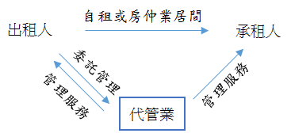

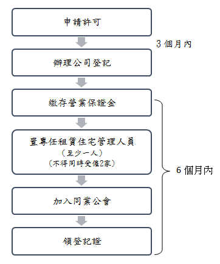
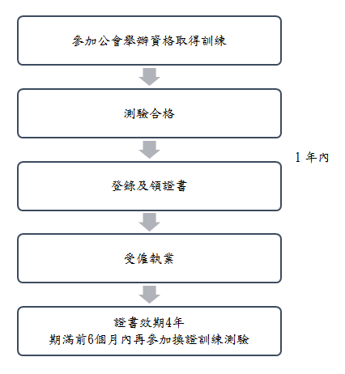
66. 更正登記之同一性¶
發布日期: 2018-08-23
更正登記不得妨害原登記之同一性。所稱同一性，指同一權利主體、同一權利種類及同一權利標的而言。如同一人之姓名、住址、出生年月日等之漏誤，得以更正登記為之。如同一權利種類之地租、存續期間、權利範圍等之漏誤，得以更正登記為之。如同一標的之面積、地號、使用地類別等之漏誤，得以更正登記為之。
申請更正登記，如更正登記後之權利主體、種類、範圍或標的與原登記原因證明文件所載不符者，有違登記之同一性，應不予受理(更正登記法令補充要點第6點)。
許文昌老師主編「土地法規」小法典(第8版)千呼萬喚上市了！
土地法規小法典(第8版)於今年8月20日新鮮問世。本次改版，除更新法規及添加新試題外，另增加「房地合一課徵所得稅申報作業要點」、司法院釋字第763號及第765號。該書由元照出版，可至元照網路書店購買。¶
注：本文圖片存放於 ./images/ 目錄下
67. 危老申請程序及期限¶
發布日期: 2018-08-30
各位同學好
沒想到危老條例再次於估價師考科出現，還好老師都有上，希望同學們都可以獲得好成績！今日另外提醒危老條例的程序，請接下來要考地方特考的同學要注意一下
• (一) 申請程序
依本條例規定申請重建時，新建建築物之起造人應擬具重建計畫，取得重建計畫範圍內全體土地及合法建築物所有權人之同意，向直轄市、縣（市）主管機關申請核准後，依建築法令規定申請建築執照。(危§5I)參考後面的流程圖。
• (二) 申請期限
重建計畫之申請，施行期限至中華民國一百十六年五月三十一日止。(危§5II)（2027.5.31）（本條例施行10年內）。另注意有「容積獎勵」與「賦稅減免」的申請時程限制（參下表），申請人必須在相關期限內提出重建計畫，向都市發展局申請報核，以維權益。
| 項目 | 內容 | 申請期限 |
|---|---|---|
| 項目 | 內容 | 申請期限 |
| 容積獎勵 | 獎勵基地基準容積10％ | 2020年5月9日 |
| 稅賦優惠 | 地價稅及房屋稅之減免 | 2022年5月9日 |
| 危老條例施行期限 | 申請重建計畫最終期限 | 2027年5月31日 |
[圖片1]
資料來源：參考臺北市危險及老舊建築物加速重建問答集，107.5
文章圖片¶
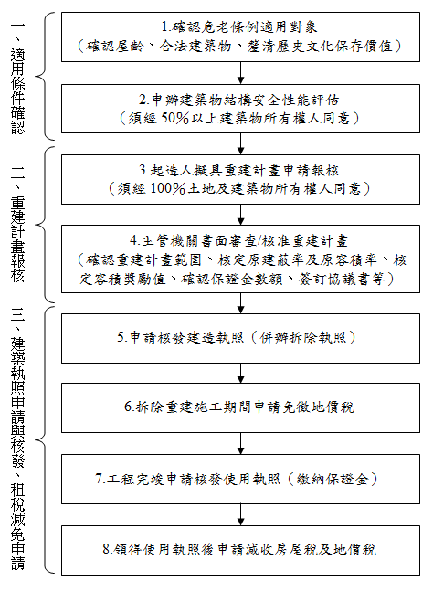
注：本文圖片存放於 ./images/ 目錄下
68. 更正登記與土地登記損害賠償之原因比較¶
發布日期: 2018-08-30
依土地登記規則第13條規定：「土地法第六十八條第一項及第六十九條所稱登記錯誤，係指登記事項與登記原因證明文件所載之內容不符者；所稱遺漏，係指應登記事項而漏未登記者。」準此，更正登記之原因與土地登記損害賠償之原因的意涵看似相同，其實不同。茲分析如下：
• (一) 更正登記之原因：
-
登記錯誤：指登記事項與登記原因證明文件所載之內容不符。換言之，僅於登記事項與登記原因證明文件所載之內容不符者為限，始得辦理更正登記。
-
登記遺漏：指應登記事項漏未登記。
此外，更正登記不得妨害原登記之同一性。因此，登記虛偽不得辦理更正登記。
• (二) 土地登記損害賠償之原因：
-
登記錯誤：指登記事項與登記原因證明文件所載之內容不符。此乃狹義解釋，僅能以例示視之。換言之，不以登記事項與登記原因證明文件所載之內容不符者為限，始得主張土地登記損害賠償。
-
登記遺漏：指應登記事項漏未登記。
-
登記虛偽：指違反原登記同一性之登記錯誤。亦即登記名義人與真正權利人不符而言。由於土地法第68條之土地登記損害賠償包括登記錯誤、登記遺漏及登記虛偽三種情形，但土地法第69條之更正登記僅包括登記錯誤及登記遺漏二種情形，不包括登記虛偽。準此，上開登記虛偽之定義，使其僅能適用於土地法第68條，而不能適用於土地法第69條。
• (三) 兩者比較：
- 登記原因種類不同：更正登記之原因種類為登記錯誤與登記遺漏二種。土地登記損害賠償之原因種類為登記錯誤、登記遺漏與登記虛偽三種。
2. 登記錯誤範圍不同：更正登記之登記錯誤，以登記事項與登記原因證明文件所載之內容不符者為限。土地登記損害賠償之登記錯誤，不以登記事項與登記原因證明文件所載之內容不符者為限。前者範圍較狹，後者範圍較廣。¶
注：本文圖片存放於 ./images/ 目錄下
69. 定型化契約不得記載事項¶
發布日期: 2018-09-06
法規可能已修正
本文發布（2018-09-06）後，文中引用的 民法第205條（2021-01-20 修正）有修正，內容可能與現行規定不同，請以全國法規資料庫的現行條文為準。
各位同學好
經紀人考試再2個月左右就要到來，今日專欄為各位要考經紀人的同學，整理一下有關以下四個容易搞混且需要準備的「定型化契約不得記載事項」，總複習會教各位口訣~
• 一、房屋租賃定型化契約不得記載事項
-
不得約定拋棄審閱期間。
-
不得約定廣告僅供參考。
-
不得約定承租人須繳回契約書。
-
不得約定承租人不得申報租賃費用支出。
-
不得約定承租人不得遷入戶籍。
-
不得約定應由出租人負擔之稅賦，若較出租前增加時，其增加部分由承租人負擔。
-
出租人故意不告知承租人房屋有瑕疵者，不得約定排除民法上瑕疵擔保責任。
-
不得約定違反法律上強制或禁止規定。
• 二、成屋屋買賣定型化契約不得記載事項
-
不得約定拋棄審閱期間。
-
不得約定廣告僅供參考。
-
不得約定買方須繳回契約書。
-
不得約定買賣雙方於交屋後，賣方排除民法上瑕疵擔保責任。
-
不得約定使用與實際所有權面積以外之「受益面積」、「銷售面積」、「使用面積」等類似名詞。
-
不得約定請求超過民法第二百零五條所定百分之二十年利率之利息。
-
不得為其他違反強制或禁止規定之約定。
• 三、預售屋買賣定型化契約不得記載事項
-
不得約定廣告僅供參考。
-
不得約定買方須繳回原買賣契約書。
-
出售標的不得包括未經依法領有建造執照之夾層設計或夾層空間面積。
-
不得使用未經明確定義之「使用面積」、「受益面積」、「銷售面積」等名詞。
-
不得約定請求超過民法第二百零五條所訂百分之二十年利率之利息。
-
附屬建物除陽臺外，其餘項目不得計入買賣價格。
-
不得為其他違反法律強制或禁止規定之約定。
• 四、住宅租賃契約不得約定事項(配合租賃住宅市場發展及管理條例)
-
不得約定廣告僅供參考。
-
不得約定承租人不得申報租賃費用支出。
-
不得約定承租人不得遷入戶籍。
-
不得約定應由出租人負擔之稅賦及費用，若較出租前增加時，其增加部分由承租人負擔。
-
不得約定免除或限制民法上出租人故意不告知之瑕疵擔保責任。
-
不得約定承租人須繳回契約書。
-
不得約定本契約之通知，僅以電話方式為之。
8. 不得約定違反強制或禁止規定。¶
注：本文圖片存放於 ./images/ 目錄下
70. 土地登記漏誤之救濟¶
發布日期: 2018-09-06
土地登記漏誤之救濟方法有三，一為更正登記，二為塗銷登記，三為登記損害賠償。
• (一) 更正登記：登記人員或利害關係人，於登記完畢後，發現登記錯誤或遺漏時，以書面聲請該管上級機關查明核准後，辦理更正登記。但登記錯誤或遺漏，純屬登記人員記載時之疏忽，並有原始登記原因證明文件可稽者，由登記機關逕行更正之（土§69）。惟更正登記不得變更原登記之法律關係，亦即更正登記不得妨害原登記之同一性。
• (二) 塗銷登記：依土地登記規則登記之土地權利，有登記證明文件經該主管機關認定係屬偽造或純屬登記機關之疏失而錯誤登記之情形，於第三人取得該土地權利之新登記前，登記機關得於報經直轄市或縣 (市) 地政機關查明核准後塗銷之（登§144）。值得一提的是，更正登記所稱登記錯誤與塗銷登記所稱登記錯誤，兩者意涵不同。前者指准予登記之行政處分並未違誤，僅登記機關辦理登記時未依登記原因證明文件所載之內容予以登記，而造成登記事項與登記原因證明文件所載之內容不符（登§13）；後者指准予登記之行政處分純係登記機關疏失而為之違法行政處分。
• (三) 登記損害賠償：無法藉由上述更正登記或塗銷登記，以消除土地登記漏誤，最後只能由地政機關負起損害賠償一途。因此，土地法第68條第1項規定：「因登記錯誤遺漏或虛偽致受損害者，由該地政機關負損害賠償責任。但該地政機關證明其原因應歸責於受害人時，不在此限。」¶
注：本文圖片存放於 ./images/ 目錄下
71. 測量錯誤之損害賠償¶
發布日期: 2018-09-13
各位同學好
今日專欄以實務案例談談因測量錯誤所致登記錯誤而衍生之損害賠償問題
★案件事實
-
某甲98年1月以總價360萬元向乙購買坐落A地號土地（系爭土地），買賣契約根據土地所有權狀之登記面積為44平方公尺，於98年2月完成所有權移轉登記。
-
惟地政事務所於100年11月以其發現系爭土地登記面積有誤，將系爭土地面積更正登記為22平方公尺，並於101年1月為通知。
-
甲因登記面積更正後減少22平方公尺，受有多支付前手乙價金97萬多元之損害等情，爰依土地法第68條第1項、國家賠償法第2條第2項規定，求為命地政事務所給付上開金額之判決。
★案件事實經過
[圖片1]
★地政事務所抗辯
系爭土地面積登記錯誤，係因68年間辦理分割時圖籍坵塊面積測算謬誤造成，而依地籍測量實施規則規定辦理更正，使土地產權切合實際，並無違法或不當。又系爭土地面積減少之損害，於68年間辦理分割時即發生，且甲於98年2月間買受點交系爭土地時，即知悉系爭土地登記面積與實際面積不符，惟遲至101年5月間始提出賠償請求，顯已罹於國家賠償法第8條第1項規定自損害發生時起算5年或自知有損害時起算2年之時效期間而消滅。
★台灣高等法院判決內容（重點，請筆記）
• 一、甲因系爭土地面積登記錯誤而受有損害：
• (一) 按土地法第68條第1項規定：「因登記錯誤、遺漏或虛偽致受損害者，由該地政機關負損害賠償責任，但該地政機關證明其原因應歸責於受害人時，不在此限」，係就職司土地登記事務之公務員因故意或過失不法侵害人民權利，而該公務員所屬地政機關負損害賠償責任之規定（參照國家賠償法第2條第2項、第9條第1項），核係國家賠償法之特別規定（最高法院98年度第6次民事庭會議決議參照）。
• (二) 查系爭A地號土地於68年間分割時，因圖籍坵塊面積測算謬誤，造成圖簿面積不符，則甲於98年1月依登記面積44平方公尺購得系爭土地，並於98年2月完成所有權移轉登記，然所購得之系爭土地實際面積僅為22平方公尺，乃因地政事務所就圖籍面積計算錯誤而致登記面積錯誤，顯見系爭土地之面積短少，係因地政事務所之過失所致無誤。而按土地登記有絕對效力，且不動產之登記具公信力，而一般不動產買賣均以土地登記簿所載面積作為買賣之範圍及計價之依據，本件甲信任地政事務所掌管之土地登記簿所載面積而計價購買，致甲於購買系爭A地號土地時，本可以較低價格購入而不致有溢付價金之情，卻因地政事務所之過失而以較高價格購入系爭A地號土地，致受有溢付價金之損害，該損害與地政事務所所屬地政人員面積計算錯誤間有相當因果關係。再上開溢付之價金既已實際繳付，甲之財產已經減少，自係受有實際之損害，是確因地政事務所該登記錯誤致甲受有損害。
• 二、地政事務所應就甲之損害負賠償責任：
• (一) 「按土地法第68條立法意旨，在保護土地權利人，故因土地分割測量時，面積計算錯誤而生之登記錯誤，亦應在該法條所稱登記錯誤之列。系爭土地於地政事務所辦理分割測量時，誤登記其面積....致增加給付之損害，自屬有據」。
• (二) 按土地法第68條第1項之規定，其構成要件僅須因(1)行政機關所屬之公務員有故意或過失之行為致有登載錯誤；(2)受有損害之人非有可歸責於己之事由；(3)有實際損害之發生；(4)損害之發生原因與行政機關所屬公務員登載錯誤間有因果關係，即足認定有土地法第68條第1項之要件該當，並未限制受有損害之人需向其前手即原出賣人(即乙)請求返還溢付價金而未果後，始得向該錯誤原登記之行政機關請求賠償。查本件因地政事務所於辦理分割登記時，將系爭A地號土地之面積計算錯誤，致登記面積較實際面積為大，甲已依原錯誤登記面積計付價款，致使甲已受有溢付價金之實際損害。…甲並非地政專業人士，依法亦未規定買賣土地時須先鑑界及測量土地實際面積大小，難期甲於購地前應先調閱地籍圖並自行比對地籍圖坵塊之形狀及估算圖籍之面積是否與實際受點交土地之形狀及面積相符。
• 三、甲之損害賠償請求權，並未罹於時效：
• (一) 按土地法第68條係國家賠償法之特別規定，惟土地法就該賠償請求權未規定其消滅時效期間，應依國家賠償法第8條第1項：「賠償請求權，自請求權人知有損害時起，因2年間不行使而消滅；自損害發生時起，逾5年者亦同」之規定，據以判斷損害賠償請求權是否已罹於時效而消滅（最高法院98年度第6次民事庭會議決議參照）。…次按「國家賠償法第8條第1項規定，賠償請求權，自請求權人知有損害時起，因2年間不行使而消滅。所稱知有損害，須知有損害事實及國家賠償責任之原因事實，國家賠償法施行細則第3條之1定有明文。而所謂知有國家賠償責任之原因事實，指知悉所受損害，係由於公務員於執行職務行使公權力時，因故意或過失不法行為，或怠於執行職務，或由於公有公共設施因設置或管理有欠缺所致而言。於人民因違法之行政處分而受損害之情形，賠償請求權之消滅時效，應以請求權人實際知悉損害及其損害係由於違法之行政處分所致時起算。」最高法院96年度台上字第1926號判決意旨採相同見解。
• (二) 查系爭A地號土地固於68年間分割時即因圖籍坵塊面積測算謬誤，造成圖簿面積不符之情形，惟斯時甲尚未取得系爭土地之所有權，無從就系爭土地為任何處分或使用收益之行為，自難認甲於斯時即受有損害。本件甲所受之損害，應為其於98年1月因誤信錯誤之登記面積購買系爭土地，並於98年2月完成所有權移轉登記而溢付土地價金，則甲損害發生之時，當係其為系爭土地買賣之時。最高法院100年度台上字第293號判決意旨同此見解。準此，甲於101年6月提起本件訴訟，尚未罹於前揭規定自甲所受損害發生時起之5年時效期間，洵屬明確。
曾老師提醒重點
-
測量錯誤導致受有損害，除可容許誤差範圍內，現在通說認為是要賠償的。
-
登記錯誤與損害發生時點未必相同（本案錯誤發生於68年測量時，損害則發生於98年交易時）
-
損害發生於國家賠償法施行後，即依國賠法規定計算時效。（施行前則依民法，請參上課講義）
-
土地法並未限制受有損害人需向原出賣人請求返還溢付價金而未果後，始得向地政事務所請求賠償。
資源來源：臺灣高等法院民事判決102年度上國易字第8號
文章圖片¶

72. 繼承登記模擬試題¶
發布日期: 2018-09-13
甲占有乙未辦繼承登記之土地達二十年之久，甲得否主張時效取得土地所有權或地上權？
【解答】
• (一) 甲不得主張時效取得土地所有權：依民法第769條及第770條規定，時效取得所有權必須占有未登記土地。所稱未登記土地，係指未辦總登記之土地，而非指未辦繼承登記之土地。
• (二) 甲得主張時效取得地上權：依民法第772條規定，時效取得地上權不以未登記土地為限；亦即，已辦總登記之土地亦得主張時效取得地上權。又，時效取得地上權係基於法律規定（即民法第769條、第770條及第772條）而取得，故不受民法第759條規定應先辦理繼承登記始得處分其物權之限制。
許老師的「土地稅」開課囉！
我國土地稅規定交錯複雜，自成系統。許老師上課內容加入計算實例及節稅策略，讓學生靈活運用土地稅，精彩可期。本課程於9月16日(星期日)早上9:30開課，歡迎試聽。¶
注：本文圖片存放於 ./images/ 目錄下
73. 優先取得所有權模擬試題¶
發布日期: 2018-09-20
當房屋出賣時，基地所有權人優先購買取得房屋所有權後，地上權、典權或租賃權是否消滅？
【解答】
• (一) 地上權因混同而消滅：地上權與其建築物或其他工作物，不得分離而為讓與或設定其他權利（民§838Ⅲ）。準此，當房屋出賣時，其所依附之地上權應併同出賣。故行使優先購買權後，基地所有權人亦為該基地之地上權人，此時地上權因混同而消滅。
• (二) 典權因混同而消滅：典物為土地，典權人在其上有建築物者，其典權與建築物，不得分離而為讓與或其他處分（民§917Ⅱ）。準此，當房屋出賣時，其所依附之典權應併同出賣。故行使優先購買權後，基地所有權人亦為該基地之典權人，此時典權因混同而消滅。
• (三) 租賃權因移轉於基地所有權人而消滅：租用基地建築房屋，承租人房屋所有權移轉時，其基地租賃契約，對於房屋受讓人，仍繼續存在（民§426－1）。準此，當房屋出賣時，並由基地所有權人行使優先購買權，則租賃權歸屬基地所有權人，租賃權因無存在之必要而消滅。¶
注：本文圖片存放於 ./images/ 目錄下
74. 不動產信託¶
發布日期: 2018-09-20
各位同學好
本週專欄為各位說明不動產信託之類型，供地政士、高普考、估價師同學瞭解。
以不動產為信託財產的信託，可分為以下三種：
-
不動產管理信託：以獲得管理收益為目的，委託人將名下不動產信託給受託人(銀行或機構)，由其經營管理，並依信託契約將所獲得之租金或相關收益交付給受益人。
-
不動產處分信託：以處分不動產為目的，委託人將名下不動產信託給受託人(銀行或機構)，由其依信託契約以適當價格處分該信託財產，並於信託關係結束時將該處分收益交付給受益人。
3. 不動產開發信託：以不動產開發為目的，如都市更新、危險及老舊建築物重建之合建案，所有權人將不動產信託給受託人(銀行或機構)，建商則將興建資金存入信託專戶，由受託人於興建期間進行專款專用，以專戶資金支付各項工程相關費用，使重建工程順利完成，並於建築完成後，償還銀行融資款項及依約定方式交付信託財產予受益人。¶
注：本文圖片存放於 ./images/ 目錄下
75. 贈與稅¶
發布日期: 2018-09-27
各位同學好
今日專欄來談贈與稅。
請先看一則新聞：不動產贈與 比現金省稅【原文轉自：聯合新聞網_經濟日報】
其中的眉角，就在於依據遺產及贈與稅法規定，遺產價值之計算，以被繼承人死亡時之時價為準，所稱時價，土地以公告土地現值或評定標準價格為準；房屋以評定標準價格為準。因此，當同樣市場價值5000萬的現金與房地相比，房地係以公告土地現值與房屋評定標準價格計徵，其稅負相對較低，故要節稅的話以贈與房地方式較佳，但當然還要記得同時考慮土地增值稅、契稅、代書費等一些其他費用。
此外，考地政士的同學特別要注意「他項權利」又該如何計價課徵遺贈稅。此部分應會是近幾年有機會再出題之題型：
• 一、地上權
-
定有期限及年租者地上權之設定有期限及年租者，其賸餘期間依下列標準估定其價額(遺贈細§31)：
-
賸餘期間在五年以下者，以一年地租額為其價額。
-
賸餘期間超過五年至十年以下者，以一年地租額之二倍為其價額。
-
賸餘期間超過十年至三十年以下者，以一年地租額之三倍為其價額。
-
賸餘期間超過三十年至五十年以下者，以一年地租額之五倍為其價額。
-
賸餘期間超過五十年至一百年以下者，以一年地租額之七倍為其價額。
-
賸餘期間超過一百年者，以一年地租額之十倍為其價額。
-
未定有年限者地上權之設定，未定有年限者，均以一年地租額之七倍為其價額，但當地另有習慣者，得依其習慣決定其賸餘年限。
-
未定有年租者地上權之設定，未定有年租者，其年租按申報地價年息百分之四估定之。地上權之設定一次付租、按年加租或以一定之利益代租金者，應按其設定之期間規定其平均年租後，依第一項規定估定其價額。
• 二、永佃權：永佃權價值之計算，均依一年應納佃租額之五倍為標準。(遺贈細§32)
• 三、典權：典權以典價為其價額。(遺贈細§33)¶
注：本文圖片存放於 ./images/ 目錄下
76. 違章建築地上權模擬試題¶
發布日期: 2018-09-27
甲占有乙之一宗土地內特定位置，興建房屋(此房屋為違章建築)居住達二十年之久，甲可否主張時效取得該宗土地全部之地上權？甲時效取得地上權並經登記完畢後，乙擬出售該宗土地全部於第三人，甲可否就該宗土地之特定占有位置主張優先購買權？
【解答】
• (一) 司法院釋字第291號解釋：申請時效取得地上權登記，其占有建物不以合法建物為限。換言之，違章建築亦得主張時效取得地上權。
• (二) 甲僅得就該宗土地之特定占有位置主張時效取得地上權：因主張時效完成，申請地上權登記時，應提出占有範圍位置圖。前項位置圖應先向該管登記機關申請土地複丈（登§108ⅡⅢ）。準此，甲占有乙一宗土地內特定位置，應就該宗土地之特定占有位置申請土地複丈，主張時效取得地上權，不得就該宗土地全部申請時效取得地上權。
• (三) 甲應就該宗土地全部主張優先購買權：優先購買權之行使應以同一條件為前提。今乙擬出售該宗土地全部於第三人，則甲應就該宗土地全部主張優先購買權，不得就該宗土地之特定占有位置主張優先購買權。¶
注：本文圖片存放於 ./images/ 目錄下
77. 所有權視為消滅¶
發布日期: 2018-10-04
各位同學好
今日專欄來談談土地法第12條浮覆地。
首先，土地法第12條規定私有土地，因天然變遷成為湖澤或可通運之水道時，其所有權視為消滅。前項土地，回復原狀時，經原所有權人證明為其原有者，仍回復其所有權。(土§12)
- 私有所有權暫時停止：並非真正絕對消滅，而係指於私有土地成為湖澤及水道的期間，暫時停止其權利義務之行使及負擔。屬於權利之凍結狀態。
2. 已消滅成為國有，但有回復之可能：視為消滅並非真正絕對消滅，係絕對消滅永無回復之可能，而此所謂視為消滅則日後仍有回復之可能。依土§10II，所有權被視為消滅時，即屬國有，成為國有土地，同時他項權利或租賃關係將無所附麗而隨之歸於消滅，且不待登記，即生效力。¶
注：本文圖片存放於 ./images/ 目錄下
78. 土地法第104條之優先購買權可否擴大解釋或類推適用？¶
發布日期: 2018-10-04
茲舉三例說明：
• (一) 基地所有權人甲將土地設定地上權於乙，乙再將該土地出租於丙，並由丙興建房屋。當甲出售基地時，何人有優先購買權？
-
未擴大解釋：乙於該基地上無房屋產權，故乙無土地法第104條之優先購買權；另，丙雖於該基地上有房屋產權，但甲與丙之間無租賃權之關係存在，故丙無土地法第104條之優先購買權。
-
採擴大解釋：乙為其占有該土地之使用人有房屋產權，故乙有土地法第104條之優先購買權；另，丙雖與甲無直接租賃權關係，惟經過「權利傳導」而與甲有間接租賃權關係，故丙有土地法第104條之優先購買權。因此，乙、丙二人均有優先購買權。依土地法第104條規定，其順序以登記之先後定之。是以，乙之優先購買權之行使優先於丙。此一結果，恐違反土地法第104條房屋與其基地所有權合一之立法意旨。
• (二) 基地所有權人甲將土地設定典權於乙，乙再將典物轉典或出租於丙，並由丙興建房屋。當甲出售基地時，何人有優先購買權？
-
未擴大解釋：乙於該基地上無房屋產權，故乙無土地法第104條之優先購買權，但仍有民法第919條之優先購買權。另，丙雖於該基地上有房屋產權，但甲與丙之間無典權或租賃權之關係存在，故丙無土地法第104條及民法第919條之優先購買權。
-
採擴大解釋：乙為其占有該土地之使用人有房屋產權，故乙有土地法第104條之優先購買權；另，丙雖與甲無直接典權或租賃權之關係，惟經過「權利傳導」而與甲有間接典權或租賃權關係，故丙有土地法第104條之優先購買權。因此，乙、丙二人均有優先購買權。依土地法第104條規定，其順序以登記之先後定之。是以，乙之優先購買權之行使優先於丙。此一結果，恐違反土地法第104條房屋與其基地所有權合一之立法意旨。
• (三) 基地所有權人甲將土地設定典權於乙，乙再將典物出租於丙，並由丙興建房屋。當丙出售房屋時，何人有優先購買權？
-
未類推適用：乙於基地上無所有權，故乙無土地法第104條之優先購買權；另，甲雖於基地上有所有權，但甲與丙之間無租賃權關係存在，故甲無土地法第104條之優先購買權。
-
採類推適用：乙雖非土地所有權人，但日後有取得所有權之可能，故類推適用土地法第104條規定，乙有優先購買權。此一結果，恐違反土地法第104條房屋與基地所有權合一之立法意旨。
綜上，如果無法使房屋與其基地所有權合一，土地法第104條之擴大解釋或類推適用無存在之必要。況優先購買權雖有其政策功能，然優先購買權具強而有力之效力，除非法律有明文規定，實不宜擴大解釋或類推適用，以免扭曲市場機制及干擾交易秩序。¶
注：本文圖片存放於 ./images/ 目錄下
79. 騎樓走廊地的地價稅與房屋稅減免規定¶
發布日期: 2018-10-11
各位同學好
今日專欄為各位同學整理一下今年地政士有考到的騎樓走廊地的地價稅與房屋稅減免規定：
首先，根據土地稅減免規則第10條規定：供公共通行之騎樓走廊地，無建築改良物者，應免徵地價稅，有建築改良物者，依左列規定減徵地價稅。一、地上有建築改良物一層者，減徵二分之一。二、地上有建築改良物二層者，減徵三分之一。三、地上有建築改良物三層者，減徵四分之一。四、地上有建築改良物四層以上者，減徵五分之一。
※地價稅減徵條件：
-
基地上有建築改良物：騎樓走廊地認定應以基地上有建築改良物為前提，如屬空地則無所謂騎樓走廊地。
-
非屬建造房屋應保留之法定空地：
-
依建築法規定，建築基地，係指供建築物本身所占之地面及其所應留設之法定空地。依建築技術規則規定，建築基地退縮騎樓地未建築部分計入法定空地。而依土地稅減免規則規定，屬建造房屋應保留之法定空地部分，不予免徵地價稅。因此，符合土地稅減免規則第10條規定之騎樓走廊地，仍以非屬建造房屋應保留之法定空地，始足當之。
-
判斷原則（可參最高行政法院103年度判字第512號判決）：
-
位於商業區及住宅區以外之地區，依建築技術規則，應留設「退縮騎樓地」3.5公尺以上，不得建築，並計入法定空地→不予免徵地價稅
-
位於商業區及住宅區，其可選擇設置騎樓或不設置騎樓
-
選擇蓋騎樓者（即建造有騎樓式之建築），即屬「法定騎樓地」，所占面積不計入基地面積或建築面積→減徵地價稅（我們此處主要在談的情形）
-
選擇不蓋騎樓者（即留設無遮簷人行道）可選擇計入法定空地或不計入法定空地：
-
選擇計入法定空地：因該無遮簷人行道上方並無建築，且其面積又計入法定空地→不予免徵地價稅
-
選擇不計入法定空地：該無遮簷人行道退縮部分，因其未計入法定空地，並未發生在建築規範上「建蔽率」之效益，且又無償提供公共通行→減徵地價稅
-
供公眾通行使用：
-
騎樓走廊地仍屬該土地所有權人之所有權範圍，惟依「建築技術規則」有留設寬度等相關規範，以及部份建築不計入基地面積及建築面積，又依據「道路交通管理處罰條例」，騎樓被視為道路與人行道之一部份，主要供作公眾或行人通行之用，故使用權公有。基此，得予減免地價稅。
-
相對而言，倘若將騎樓走廊地圍用、封閉或作營業使用，已非供公共通行使用，則不能減徵地價稅。
（曾老師悄悄話：然而，騎樓所有權與使用權的爭議不斷，有學者提出現行對於騎樓的規範，中央法規並不明確，應予明定騎樓使用規則，甚至建議廢除騎樓制度）
-
依有無建築改良物及層數而有不同程度之減徵：
-
供公共通行的騎樓走廊用地，可向稅捐主管機關申請減免其地價稅，減免的面積依地上建築改良物之有無及層數不同而異。舉例如下：如果使用執照上之騎樓面積為12平方公尺，地價稅可申請減免的面積如下：
-
供公共通行之騎樓走廊地，無建築改良物者：指平房屋宇前簷突出於騎樓走廊地，即外觀是一層樓的平房房屋，騎樓走廊地全免，即免徵12平方公尺。
[圖片1]
- 地上有建築改良物一層者：指在騎樓走廊上有一層建物，亦即外觀是兩層樓房屋，騎樓走廊地減徵1/2，即6平方公尺。
[圖片2]
-
地上有建築改良物二層者：外觀為三層樓房屋，騎樓走廊地減徵1/3，即4平方公尺。
-
地上有建築改良物三層者：外觀為四層樓房屋，騎樓走廊地減徵1/4，即3平方公尺。
-
地上有建築改良物四層者：外觀為五層樓房屋，騎樓走廊地減徵1/5，即2.4平方公尺。
-
地上有建築改良物四層以上者：外觀為五層樓以上房屋，騎樓走廊地均減徵1/5，即2.4平方公尺。
-
騎樓走廊地上建築改良物層數之認定，以建築改良物所有權狀之記載為準，其未記載於所有權狀之增建樓層部分，如能提出建物勘測成果表者，可合併計入層數。
-
以持分土地面積計算：如屬社區大樓，因土地係屬分別共有，故地價稅的減徵面積除依上述方式計算外，尚需再乘以土地持分（應有部分）。
-
提出申請：應於地價稅開徵40日前（即9月22日前）提出申請，逾期申請者，則自申請的次年期起減免。
此外，供公眾通行使用之騎樓，不計入房屋現值當中，故亦免徵房屋稅。
註：住家房屋現值，係指整戶住家房屋之現值，但不包括左列各項之現值：（一）供公眾通行之騎樓。（二）陽台、屋簷、雨遮依建築技術規則規定免計入建築面積之部分。（三）純屬防空避難設施之地下室，或地下室僅為利用原有空間設置機器房、抽水機、停放車輛等使用，合於本部66/02/26台財稅第31250號函規定免徵房屋稅者。（四）未設有門窗、牆壁供遮陽防雨使用之屋頂棚架，依本部70/07/14台財稅第35738號函規定免徵房屋稅者。（財政部74/07/22台財稅第19180號函）
文章圖片¶


80. 共有物之所有權模擬試題(一)¶
發布日期: 2018-10-11
甲、乙、丙、丁、戊五人共有一宗土地，每人持分相等，甲未經其他共有人之同意，擅自在該宗土地的一角興建房屋居住達二十年之久，其佔用範圍適為該宗土地面積之五分之一，請問：(一)乙、丙、丁、戊之其中一人得否訴請甲拆屋還地？(二)甲得否就占有範圍主張時效取得地上權？(三)甲時效取得地上權後，乙、丙、丁三人同意將該宗土地出售於第三人，甲、戊是否有優先購買權？何人優先行使？
【解答】
• (一) 共有人對共有物之特定部分使用收益，仍需徵得他共有人全體之同意。否則，他共有人得行使民法第767條之返還請求權（即拆屋還地）。另，民法第821條規定：「各共有人對於第三人，得就共有物之全部為本於所有權之請求。但回復共有物之請求，僅得為共有人全體之利益為之。」準此，乙、丙、丁、戊之其中一人均得訴請甲拆屋還地，並返還於全體共有人。
• (二) 司法院釋字第451號解釋，共有人一人以行使地上權之意思占有其共有之土地者，得主張時效取得地上權。準此，甲得就其占有範圍主張時效取得地上權。
• (三) 甲、戊二人均有優先購買權。甲依據土地法第104條有優先購買權，戊依據土地法第34條之1第4項有優先購買權。惟前者為物權效力，後者為債權效力。故甲之優先購買權行使優先於戊。¶
注：本文圖片存放於 ./images/ 目錄下
81. 夫妻間贈與之相關稅捐¶
發布日期: 2018-10-17
法規可能已修正
本文發布（2018-10-17）後，文中引用的 土地稅法第28條之2（2021-06-23 修正）有修正，內容可能與現行規定不同，請以全國法規資料庫的現行條文為準。
各位同學好
今日專欄為各位同學整理有關「夫妻間贈與」之相關稅負內容：
甲(妻)贈與名下「土地」及「建物」給乙(夫)，其涉及稅負如下：
-
土地：土地增值稅（得申請不課徵）
-
申報：訂立贈與契約，並在契約成立之日起30日內，填具契稅申報書及土地增值稅申報書，檢附公定格式契約書影本(正本核對無誤後退還)及有關證明文件，向稽徵機關申報契稅及土地增值稅。
-
「得」申請不課徵：土地稅法第28條之2規定，配偶相互贈與之土地，得申請不課徵土地增值稅。但於再移轉第三人時，以該土地第一次贈與前之原規定地價或前次移轉現值為原地價，計算漲價總數額，課徵土地增值稅。
※觀念釐清：
-
具選擇性配偶相互贈與土地非當然不課徵土地增值稅，而是可由當事人自行選擇。（但無論是否申請不課徵，均須申報移轉現值）
-
不課徵係租稅遞延不課徵與免徵不同，屬「租稅遞延」之概念，亦即本次暫不課徵，留待下次移轉給第三人時再予計算土地漲價總數額。
-
可能影響累進效果雖然此次配偶間移轉得暫不課徵，惟也要注意將租稅時機往後遞延，多年後再將土地移轉給第三人時反而可能會適用比原先選擇「課徵」時的稅率還高，因為公告土地現值一般多逐年調高。因此，本次選擇不課徵未必有利。
-
建物：契稅契稅條例第2條規定，不動產之買賣、承典、交換、贈與、分割或因占有而取得所有權者，均應申報繳納契稅，故夫妻間贈與仍屬課稅範圍，而應依第7條規定該贈與契稅，由受贈人（即乙夫）立契申報。
-
土地及建物：贈與稅遺產及贈與稅法第20條第1項第6款之規定，配偶相互贈與之財產不計入贈與總額，故無需課徵贈與稅。但贈與房地須辦理產權移轉登記，仍須依第41條第2項規定填具贈與稅申報書向贈與人戶籍所在地的國稅局辦理申報，由該國稅局核發不計入贈與總額證明書，方能依第42條規定辦理房地移轉登記。
-
地價稅截至最近一期有無欠繳，如有需補繳。
-
房屋稅截至最近一期有無欠繳，如有需補繳，另按月向甲妻隨課。
6. 其他費用：如印花稅、登記規費（登記費、權狀費）等。¶
注：本文圖片存放於 ./images/ 目錄下
82. 共有物之所有權模擬試題(二)¶
發布日期: 2018-10-17
甲、乙、丙三人共有一宗土地，每人持分相等，三人共同訂立分管協議。甲就其分管部分出租於丁，丁並興建房屋居住。試問：(一)若乙、丙二人同意將該宗土地出售於第三人，何人有優先購買權？何人優先行使？(二)若丁出售房屋於第三人，何人有優先購買權？
【解答】
• (一) 甲、丁二人均有優先購買權。甲依據土地法第34條之1第4項有優先購買權，丁依據土地法第104條有優先購買權。惟前者為債權效力，後者為物權效力。故丁之優先購買權行使優先於甲。
乙、丙二人與丁之間無租賃關係存在，且建物僅坐落於甲之分管部分，故僅甲有優先購買權。¶
注：本文圖片存放於 ./images/ 目錄下
83. 危老條例稅捐減免¶
發布日期: 2018-10-25
各位同學好
今日專欄針對「都市危險及老舊建築物加速重建條例」之稅捐減免優惠予以彙整要件如下：
首先，危老條例第8條規定：本條例施行後五年內申請之重建計畫，重建計畫範圍內之土地及建築物，經直轄市、縣（市）主管機關視地區發展趨勢及財政狀況同意者，得依下列規定減免稅捐(危§8I)：一、重建期間土地無法使用者，免徵地價稅。但未依建築期限完成重建且可歸責於土地所有權人之情形者，依法課徵之。二、重建後地價稅及房屋稅減半徵收二年。三、重建前合法建築物所有權人為自然人者，且持有重建後建築物，於前款房屋稅減半徵收二年期間內未移轉者，得延長其房屋稅減半徵收期間至喪失所有權止，但以十年為限。
依本條例適用租稅減免者，不得同時併用其他法律規定之同稅目租稅減免。但其他法律之規定較本條例更有利者，適用最有利之規定。(危§8II)
第一項規定年限屆期前半年，行政院得視情況延長之，並以一次為限。(危§8III)
茲整理要件如下：
• 一、五年內申請
| 項目 | 內容 | 申請期限 |
|---|---|---|
| 項目 | 內容 | 申請期限 |
| 稅賦優惠 | 地價稅及房屋稅之減免 | 2022年5月9日(111.5.9) |
| 危老條例施行期限 | 申請重建計畫最終期限 | 2027年5月31日(116.5.31) |
• 二、地方政府同意：房屋稅及地價稅屬地方稅，為地方政府重要財源，目前地方財政拮据，為避免影響地方政府建設，新增或修正擴大租稅減免範圍允宜尊重地方政府意見
• 三、符合以下情形
[圖片1]
其中，應注意減半優惠延長之要件如下：
-
僅有房屋稅得以延長。
-
所有權人為重建前、後之自然人。
-
重建後2年未移轉。
-
延長期限至喪失所有權為止，最多延長10年，加計重建後2年之減半優惠，共計房屋稅最多可享受12年之減半徵收優惠。
-
延長期間喪失所有權，包含有償移轉、無償移轉、繼承、信託皆屬之。（亦即租稅延長期間，因子女繼承而移轉，房屋稅減半優惠即結束）
文章圖片¶

注：本文圖片存放於 ./images/ 目錄下
84. 土地所有權模擬試題(一)¶
發布日期: 2018-10-25
甲有一筆登記於已故父親名下而未辦繼承登記之土地，被乙占用達20年之久，甲訴請乙返還土地，乙得否主張消滅時效完成而拒絕返還？另，乙得否主張取得時效完成，請求登記為土地所有權人？又，甲將其土地出售於丙，並簽訂買賣契約，是否有效？
【解答】
• (一) 司法院釋字第107號解釋：「已登記不動產所有人之回復請求權，無民法第一百二十五條消滅時效規定之適用。」所稱已登記，指已辦竣總登記而言。本題土地雖未辦竣繼承登記，但已辦竣總登記。故甲訴請乙返還土地，乙不得主張消滅時效完成而拒絕返還。
• (二) 民法第769條規定：「以所有之意思，二十年間和平、公然、繼續占有他人未登記之不動產者，得請求登記為所有人。」又，民法第770條規定：「以所有之意思，十年間和平、公然、繼續占有他人未登記之不動產，而其占有之始為善意並無過失者，得請求登記為所有人。」所稱未登記，指未辦竣總登記而言。本題土地雖未辦竣繼承登記，但已辦竣總登記。故乙不得主張取得時效完成，請求登記為土地所有權人。另，民法第772條規定：「前五條之規定，於所有權以外財產權之取得，準用之。於已登記之不動產，亦同。」所稱已登記，指已辦竣總登記而言。本題雖未辦竣繼承登記，但已辦竣總登記。故乙得主張取得時效完成，請求登記為地上權人。須特別說明的是，時效取得地上權係基於法律規定（即民法第769條、第770條及第772條）而取得，故不受民法第759條應先辦理繼承登記始得處分其物權（包含設定地上權）之限制。
• (三) 民法第759條規定：「因繼承、強制執行、徵收、法院之判決或其他非因法律行為，於登記前已取得不動產物權者，應經登記，使得處分其物權。」準此，未辦竣繼承登記，不得處分其物權，但仍得處分其債權。是以，甲將其土地出售於丙，並簽訂買賣契約；此買賣契約仍為有效。
許老師的土地經濟學開課囉！
108年地政高考及不動產估價師考試一定要贏在起跑點上。所謂起跑點，就是「土地經濟學」這科。許文昌老師親授的土地經濟學，於107年11月3日（星期六）早上9：30開課。一年只上這一次，錯過可惜！＞＞最新課表¶
注：本文圖片存放於 ./images/ 目錄下
85. 經紀業相關契約不得記載事項¶
發布日期: 2018-11-01
法規可能已修正
本文發布（2018-11-01）後，文中引用的 民法第205條（2021-01-20 修正）有修正，內容可能與現行規定不同，請以全國法規資料庫的現行條文為準。
各位同學好
不動產經紀人考試即將到來，各位同學再加把勁！
今日專欄為考經紀人的同學們整理有關經紀業相關契約之不得記載事項此部分亦為考試範圍，包含「房屋租賃」、「成屋買賣」、「預售屋買賣」之定型化契約，以及最近很夯的租賃住宅市場發展及管理條例中所規範「住宅租賃契約」不得約定事項，要記得好好準備一下。
以下四個不得記載事項，看似很像卻略有不同，千萬不要搞混！有來上總複習的同學，「烤雞腳、考豬腳」的口訣應該不錯用吧~！
房屋租賃定型化契約不得記載事項
-
不得約定拋棄審閱期間。
-
不得約定廣告僅供參考。
-
不得約定承租人須繳回契約書。
-
不得約定承租人不得申報租賃費用支出。
-
不得約定承租人不得遷入戶籍。
-
不得約定應由出租人負擔之稅賦，若較出租前增加時，其增加部分由承租人負擔。
-
出租人故意不告知承租人房屋有瑕疵者，不得約定排除民法上瑕疵擔保責任。
-
不得約定違反法律上強制或禁止規定。
住宅租賃契約不得約定事項
-
不得約定廣告僅供參考。
-
不得約定承租人須繳回契約書。
-
不得約定承租人不得申報租賃費用支出。
-
不得約定承租人不得遷入戶籍。
-
不得約定應由出租人負擔之稅賦及費用，若較出租前增加時，其增加部分由承租人負擔。
-
不得約定免除或限制民法上出租人故意不告知之瑕疵擔保責任。
-
不得約定本契約之通知，僅以電話方式為之。
-
不得約定違反強制或禁止規定。
成屋買賣定型化契約不得記載事項
-
不得約定拋棄審閱期間。
-
不得約定廣告僅供參考。
-
不得約定買方須繳回契約書。
-
不得約定使用與實際所有權面積以外之「受益面積」、「銷售面積」、「使用面積」等類似名詞。
-
不得約定請求超過民法第二百零五條所定百分之二十年利率之利息。
-
不得約定買賣雙方於交屋後，賣方排除民法上瑕疵擔保責任。
-
不得為其他違反強制或禁止規定之約定。
預售屋買賣定型化契約不得記載事項
-
不得約定廣告僅供參考。
-
不得約定買方須繳回原買賣契約書。
-
不得使用未經明確定義之「使用面積」、「受益面積」、「銷售面積」等名詞。
-
不得約定請求超過民法第二百零五條所訂百分之二十年利率之利息。
-
出售標的不得包括未經依法領有建造執照之夾層設計或夾層空間面積。
-
附屬建物除陽臺外，其餘項目不得計入買賣價格。
7. 不得為其他違反法律強制或禁止規定之約定。¶
注：本文圖片存放於 ./images/ 目錄下
86. 土地所有權模擬試題(二)¶
發布日期: 2018-11-01
甲有一幢透天房屋，甲將其土地出售於乙，但建物未出售，是否可行？果真如此，乙得否向甲主張拆屋還地？日後，甲將其建物出售於丙，乙是否有優先購買權？
【解答】
• (一) 民法第799條第5項規定：「專有部分與其所屬共有部分及其基地之權利，不得分離而為移轉或設定負擔。」準此，區分所有建物之建物與其基地不得分離出售，但透天房屋不受此項限制。故甲將其透天房屋，僅出售土地而未出售建物，為可行。
• (二) 民法第425條之1規定：「土地及其土地上之房屋同屬一人所有，而僅將土地或僅將房屋所有權讓與他人，或將土地及房屋同時或先後讓與相異之人時，土地受讓人或房屋受讓人與讓與人間或房屋受讓人與土地受讓人間，推定在房屋得使用期限內，有租賃關係。其期限不受第四百四十九條第一項規定之限制。前項情形，其租金數額當事人不能協議時，得請求法院定之。」準此，推定在房屋得使用期限內，甲與乙之間有租賃關係。故甲占有乙之土地並非無權占有，乙不得向甲主張民法第767條之拆屋還地。
• (三) 土地法第104條優先購買權之三項要件：
-
地上有房屋存在。
-
房屋與基地之所有權人不同。
-
房屋與基地之間有地上權、典權或租賃權存在。
準此，甲將其建物出售於丙，乙得依土地法第104條主張優先購買。¶
注：本文圖片存放於 ./images/ 目錄下
87. 土地法第34條之1實例研習(一)¶
發布日期: 2018-11-05
甲、乙、丙三人共有土地一筆，應有部分各為三分之一。丁於丙之應有部分辦理預告登記，嗣甲、乙二人同意將該筆土地全部出售於戊，則丙是否有優先購買權？如果該筆土地全部出售於戊，丁之預告登記能否與之對抗？
【解答】
• (一) 預告登記是限制登記之一種。限制登記僅限制登記名義人「處分」，並未限制登記名義人「購買」。因此，甲、乙二人依土地法第34條之1第1項將該筆土地全部出售於戊，則丙得依同法條第4項主張優先購買權。
• (二) 土地法第三十四條之一執行要點第8點第6款第3目規定：「他共有人之應有部分經預告登記且涉及對價或補償者，應提出該共有人已受領及經原預告登記請求權人同意之證明文件及印鑑證明；為該共有人提存者，應提出已於提存書對待給付之標的及其他受取提存物所附之要件欄內記明提存物受取人領取提存物時，須檢附預告登記請求權人之同意書及印鑑證明領取之證明文件。登記機關應逕予塗銷該預告登記，於登記完畢後通知預告登記請求權人。」準此，該筆土地全部出售於戊，丙應得之對價依上開規定經受領或予以提存後，登記機關逕為塗銷丁之預告登記。換言之，丁之預告登記不能與之對抗。¶
注：本文圖片存放於 ./images/ 目錄下
88. 抵價地、抵費地¶
發布日期: 2018-11-08
各位同學好
今日專欄為各位整理與提醒區段徵收與市地重劃有關抵價地、抵費地之差異：
• 一、定義
• (一) 抵價地：區段徵收應給予之補償地價，得由土地所有權人申請以規劃整理後可供建築之土地，按土地所有權人應領補償地價比例折算抵付。
• (二) 抵費地：實施市地重劃時，重劃區內土地所有權人應行負擔之工程費用、重劃費用及貸款利息，由該地區土地所有權人按其土地受益比例共同負擔，並以其未建築土地折價抵付。
• 二、差異
| 差異 | 抵費地(市地重劃) | 抵價地(區段徵收) |
|---|---|---|
| 差異 | 抵費地(市地重劃) | 抵價地(區段徵收) |
| 定義 | 抵付工程費用、重劃費用及貸款利息 | 抵付補償地價 |
| 流向 | 所有權人付給政府 | 政府發給所有權人 |
| 範圍 | 不得超過全區面積45％ | 以50％為原則；不得少於全區面積40％ |
| 性質 | 屬強制性質，原則上以土地抵付 | 屬任意性質，可領取現金，亦可申請發給抵價地 |
| 稅負 | 所有權人負擔之抵費地， 不課徵土地增值稅 抵費地標售時， 不課徵土地增值稅 重劃後第一次移轉時， 得減徵土地增值稅40％ |
以抵價地補償其地價， 免徵土地增值稅 領回抵價地第一次移轉， 得減徵土地增值稅40％ |
注：本文圖片存放於 ./images/ 目錄下
89. 預告登記實例研習¶
發布日期: 2018-11-08
甲向乙購買一筆林地，於未完成所有權移轉登記前，辦理保全將來移轉請求權之預告登記，試問： (一)若甲為外國人，可否辦理預告登記？ (二)乙之土地被徵收，預告登記能否與之對抗？ (三)預告登記未塗銷前，乙將其土地出租於丙，是否可行？日後，對甲有何影響？
【解答】
• (一) 土地法第17條第1項規定：「左列土地不得移轉、設定負擔或租賃於外國人：一、林地。二、漁地。三、狩獵地。四、鹽地。五、礦地。六、水源地。七、要塞軍備區域及領域邊境之土地。」準此，外國人對林地無權利能力。若甲為外國人不得辦理林地移轉保全之預告登記。
• (二) 土地法第79條之1第3項規定：「預告登記，對於因徵收、法院判決或強制執行而為新登記，無排除之效力。」準此，甲之預告登記不能對抗土地徵收。
• (三) 預告登記屬於限制登記之一種。土地登記規則第136條第1項規定：「所稱限制登記，謂限制登記名義人處分其土地權利所為之登記。」準此，限制登記僅限制處分，未限制管理、使用、收益等。故乙將其土地出租（出租屬於管理行為）於丙，仍為法所許。
• (四) 日後，預告登記塗銷後，土地移轉於甲名下，依民法第425條規定，丙之租賃仍存在於甲之土地上。¶
注：本文圖片存放於 ./images/ 目錄下
90. 土地所有權實例研習¶
發布日期: 2018-11-09
甲在其所有土地上興建房屋，並雇用乙開挖基地。乙於挖掘時，發現金礦及一塊金磚，試問金礦及金磚應歸屬何人所有？
【解答】
• (一) 金礦：金礦為天然形成。土地法第15條第1項規定：「附著於土地之礦，不因土地所有權之取得而成為私有。」準此，金礦歸屬於國有。
(二金磚：金磚為埋藏物。民法第808條規定：「發現埋藏物而占有者，取得其所有權。但埋藏物係在他人所有之動產或不動產中發見者，該動產或不動產之所有人與發見人，各取得埋藏物之半。」準此，金磚於甲的土地上被乙發現，故甲、乙二人各取得金磚之半。¶
注：本文圖片存放於 ./images/ 目錄下
91. 不動產經紀人考前必讀¶
發布日期: 2018-11-12
法規可能已修正
本文發布（2018-11-12）後，文中引用的 租賃住宅市場發展及管理條例第5條（2023-02-08 修正）有修正，內容可能與現行規定不同，請以全國法規資料庫的現行條文為準。
「房屋租賃定型化契約應記載及不得記載事項」與「住宅租賃契約應約定及不得約定事項」之比較
內政部先後公告「房屋租賃定型化契約應記載及不得記載事項」（以下簡稱房屋租賃）與「住宅租賃契約應約定及不得約定事項」（以下簡稱住宅租賃），兩者內容大同小異，主要差異在適用上不同。茲比較如下：
• (一) 法律依據：
-
房屋租賃：依據消費者保護法第17條。
-
住宅租賃：依據租賃住宅市場發展及管理條例第5條。
• (二) 適用對象：
-
房屋租賃：適用於定型化契約（所稱定型化契約，指以企業經營者提出之定型化契約條款作為契約內容之全部或一部而訂定之契約。所稱定型化契約條款，指企業經營者為與多數消費者訂立同類契約之用，所提出預先擬定之契約條款）。詳言之，適用於租賃契約具消費關係者。如建設公司就其興建之房屋出租於一般民眾。建設公司即是企業經營者，一般民眾即是消費者。企業經營者與消費者之間具有消費關係，適用消費者保護法相關規定。
-
住宅租賃：適用於租賃契約未具消費關係者。如民眾就其所有之房屋出租於一般民眾。出租者與承租者之間未具有消費關係，不適用消費者保護法相關規定。
• (三) 審閱期間：
-
房屋租賃：契約審閱期間至少三日。
-
住宅租賃：無契約審閱期間。
• (四) 法律效力：
-
房屋租賃：
-
違反中央主管機關（即內政部）公告之定型化契約應記載及不得記載事項，其定型化契約條款無效。
-
中央主管機關（即內政部）公告應記載之事項，雖未記載於定型化契約，仍構成契約之內容。
-
住宅租賃：
-
違反中央主管機關（即內政部）公告之應約定及不得約定事項，其約定無效。
-
中央主管機關（即內政部）公告應約定事項未記載於契約者，仍構成契約之內容。
• (五) 不得記載或不得約定事項：
-
房屋租賃定型化契約不得記載事項：
-
不得約定拋棄審閱期間。
-
不得約定廣告僅供參考。
-
不得約定承租人不得申報租賃費用支出。
-
不得約定承租人不得遷入戶籍。
-
不得約定應由出租人負擔之稅賦，若較出租前增加時，其增加部分由承租人負擔。
-
出租人故意不告知承租人房屋有瑕疵者，不得約定排除民法上瑕疵擔保責任。
-
不得約定承租人須繳回契約書。
-
不得約定違反法律上強制或禁止規定。
-
住宅租賃契約不得約定事項：
-
不得約定廣告僅供參考。
-
不得約定承租人不得申報租賃費用支出。
-
不得約定承租人不得遷入戶籍。
-
不得約定應由出租人負擔之稅賦及費用，若較出租前增加時，其增加部分由承租人負擔。
-
不得約定免除或限制民法上出租人故意不告知之瑕疵擔保責任。
-
不得約定承租人須繳回契約書。
-
不得約定本契約之通知，僅以電話方式為之。
8. 不得約定違反強制或禁止規定。¶
注：本文圖片存放於 ./images/ 目錄下
92. 市地重劃權利清理¶
發布日期: 2018-11-14
各位同學好
不動產經紀人考試即將於本週末上場，加油再加油！希望大家考運亨通，有看都有考！
由於考題趨勢越來越著重概念理解與案例應用，故今日專欄提供一案例題，除了是經紀人考試的重點外，其他考科同學也應予準備！
[案例題]
甲於某市地重劃預定區內有四塊土地如下：
-
A地於80年租給乙建屋
-
B地於70年租給丙耕作，並有去公所辦理租約登記
-
C地於85年設定抵押權給丁
-
D地於99年設定地上權給戊（存續期間70年、每年租金10萬）
試問該區於107年公告辦理市地重劃時，甲所有土地上之權利該如何清理？
• (一) 重劃後如能達原設定或租賃目的
重劃前土地已設定他項權利而於重劃後分配土地者，主管機關應於辦理土地權利變更登記前，邀集權利人協調，除協調結果該權利消滅者外，應列冊送由該管登記機關按原登記先後轉載於重劃後分配之土地。
• (二) 重劃後如未能達原設定或租賃目的
• A. 地
因重劃而不能達到原租賃之目的者，承租人乙得終止租約，並得向出租人甲請求相當一年租金之補償。
• B. 地
因實施市地重劃致不能達到原租賃之目的者，由直轄市或縣（市）政府逕為註銷其租約並通知當事人。依前項規定註銷租約者，承租人丙得依下列規定請求或領取補償：
-
重劃後分配土地者，承租人丙得向出租人甲請求按重劃計畫書公告當期該土地之公告土地現值三分之一之補償。
-
重劃後未受分配土地者，其應領之補償地價，由出租人甲領取三分之二，承租人丙領取三分之一。
• C. 地
地上權因市地重劃致不能達其設定目的者，該權利視為消滅。地上權人戊得向土地所有權人請求相當之補償。原則上，該補償係以該剩餘期間及租金作為請求依據。
• D. 地
土地建築改良物經設定抵押權，因市地重劃致不能達其設定目的者，各該權利視為消滅。並依下列方式處理：
- 甲有另行分配土地：抵押權人丁得向土地所有權人甲請求以其所分配之土地，設定抵押權或典權。
2. 甲未另行分配土地：實施重劃未受土地分配者，丁原設定抵押權之權利價值，由重劃機關在不超過土地所有權人甲應得補償之數額內予以協調清理。¶
注：本文圖片存放於 ./images/ 目錄下
93. 土地徵收條例第11條之協議價購，免徵土地增值稅¶
發布日期: 2018-11-15
法規可能已修正
本文發布（2018-11-15）後，文中引用的 土地稅法第39條（2021-06-23 修正）有修正，內容可能與現行規定不同，請以全國法規資料庫的現行條文為準。
• (一) 法律依據：
-
土地稅法第39條第3項規定，依法得徵收之私有土地，土地所有權人自願按公告土地現值之價格售與需地機關者，免徵其土地增值稅。
-
平均地權條例第42條第3項規定，依法得徵收之私有土地，土地所有權人自願按徵收補償地價售與需地機關者，免徵其土地增值稅。
現行土地徵收採市價補償其地價，故應依據平均地權條例第42條第3項，而非依據土地稅法第39條第3項，土地徵收前之協議價購始免徵其土地增值稅。
• (二) 爭議論點：
依特別法優於普通法之法律適用原則，分下列二種情形說明：
- 平均地權條例為特別法，土地稅法為普通法，應優先適用平均地權條例，則現行土地徵收前之協議價購免徵土地增值稅，應無疑義。
2. 平均地權條例為普通法，土地稅法為特別法，應優先適用土地稅法，則現行土地徵收前之協議價購免徵土地增值稅，似有疑義。¶
注：本文圖片存放於 ./images/ 目錄下
94. 土地法第34條之1實例研習(二)¶
發布日期: 2018-11-16
甲、乙、丙、丁、戊五人合夥購買土地一筆，投資額分別為3,000萬元、2,000萬元、500萬元、300萬元及200萬元。該土地登記為五人公同共有。試問： (一)甲請求分割該共有土地，是否可行？ (二)甲、乙二人同意將該地全部出售於庚，是否可行？ (三)前款出售時，何人有優先購買權？如優先購買權人全體均主張時，應如何處理？
【解答】
• (一) 民法第668條規定：「各合夥人之出資及其他合夥財產，為合夥人全體之公同共有。」民法第829條規定：「公同關係存續中，各公同共有人，不得請求分割其公同共有物。」準此，甲不得請求分割該共有土地。
• (二) 土地法第34條之1第1項規定，於公同共有準用之。亦即，公同共有土地或建築改良物，其處分、變更及設定地上權、農役權、不動產役權或典權，應以共有人過半數及其潛在應有部分合計過半數之同意行之。但其潛在應有部分合計逾三分之二者，其人數不予計算。準此，甲、乙、丙、丁、戊之潛在應有部分（即 投資額）分別為[圖片1]。甲、乙二人之潛在應有部分六分之五，已超過三分之二，人數不予計算。故甲、乙二人同意將該地全部出售於庚為可行。
• (三) 土地法第三十四條之一執行要點第11點第10款規定：「土地或建物之全部或應有部分為公同共有，部分公同共有人依本法條規定出賣該共有物全部或應有部分時，他公同共有人得就該公同共有物主張優先購買權，如有數人主張時，其優先購買權之範圍應按各主張優先購買權人之潛在應有部分比例計算之。」準此，丙、丁、戊三人有優先購買權。三人均主張優先購買權時，丙之優先購買權範圍為[圖片2]，丁之優先購買權範圍為[圖片3]，戊之優先購買權範圍為[圖片4]。
丙：[圖片5]
丁：[圖片6]
戊：[圖片7]
文章圖片¶


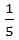

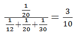
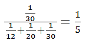
95. 繼承登記實例研習¶
發布日期: 2018-11-19
法規可能已修正
本文發布（2018-11-19）後，文中引用的 土地法第73條之1（2022-06-22 修正）有修正，內容可能與現行規定不同，請以全國法規資料庫的現行條文為準。
甲死亡後遺留一筆養殖用地，由其子女乙、丙二人共同繼承，乙之應繼分四分之三，丙之應繼分四分之一，乙為本國人，丙為日本人。試問： (一)逾一年未辦理繼承登記，政府應如何處理？ (二)乙可否單獨申請公同共有登記或分別共有登記？ (三)乙可否依土地法第34條之1採多數決辦理分別共有登記？ (四)乙可否依土地法第34條之1採多數決出售該土地全部？ (五)丙可否繼承取得而登記為該筆土地之所有權人？
【解答】
• (一) 政府應依土地法第73條之1規定處理。土地法第73條之1規定：「土地或建築改良物，自繼承開始之日起逾一年未辦理繼承登記者，經該管直轄市或縣市地政機關查明後，應即公告繼承人於三個月內聲請登記；逾期仍未聲請者，得由地政機關予以列冊管理。但有不可歸責於聲請人之事由，其期間應予扣除。
前項列冊管理期間為十五年，逾期仍未聲請登記者，由地政機關將該土地或建築改良物清冊移請國有財產局公開標售。繼承人占有或第三人占有無合法使用權者，於標售後喪失其占有之權利；土地或建築改良物租賃期間超過五年者，於標售後以五年為限。
依第二項規定標售土地或建築改良物前應公告三十日，繼承人、合法使用人或其他共有人就其使用範圍依序有優先購買權。但優先購買權人未於決標後十日內表示優先購買者，其優先購買權視為放棄。
標售所得之價款應於國庫設立專戶儲存，繼承人得依其法定應繼分領取。逾十年無繼承人申請提領該價款者，歸屬國庫。
第二項標售之土地或建築改良物無人應買或應買人所出最高價未達標售之最低價額者，由國有財產局定期再標售，於再行標售時，國有財產局應酌減拍賣最低價額，酌減數額不得逾百分之二十。經五次標售而未標出者，登記為國有並準用第二項後段喪失占有權及租賃期限之規定。自登記完畢之日起十年內，原權利人得檢附證明文件按其法定應繼分，向國有財產局申請就第四項專戶提撥發給價金；經審查無誤，公告九十日期滿無人異議時，按該土地或建築改良物第五次標售底價分算發給之。」
• (二) 土地登記規則第120條第1項規定：「繼承人為二人以上，部分繼承人因故不能會同其他繼承人共同申請繼承登記時，得由其中一人或數人為全體繼承人之利益，就被繼承人之土地，申請為公同共有之登記。其經繼承人全體同意者，得申請為分別共有之登記。」準此，乙得單獨申請公同共有登記，但不可單獨申請分別共有登記。
• (三) 繼承人辦理分別共有登記，屬於公同共有人終止公同共有之內部關係，故不可依土地法第34條之1採多數決處理。
• (四) 應繼分視為潛在應有部分，乙之應繼分四分之三，已超過三分之二，人數不予計算，因此乙得依土地法第34條之1採多數決出售該土地全部。又，民法第759條規定：「因繼承、強制執行、徵收、法院之判決或其他非因法律行為，於登記前已取得不動產物權者，應經登記，使得處分其物權。」準此，未辦竣繼承登記，不得處分其物權（即辦理所有權移轉登記），但仍得處分其債權（即簽訂買賣契約）。本題出售土地屬於處分債權，故買賣契約仍然有效。惟日後乙應先單獨申請公同共有繼承登記，再依土地法第34條之1辦理買賣所有權移轉登記。
• (五) 土地法第17條第1項及第2項規定：「左列土地不得移轉、設定負擔或租賃外國人：一、林地。二、漁地。三、狩獵地。四、鹽地。五、礦地。六、水源地。七、要塞軍備區域及領域邊境之土地。前項移轉，不包括因繼承而取得土地。但應於辦理繼承登記完畢之日起三年內出售與本國人，逾期未出售者，由直轄市、縣（市）地政機關移請國有財產局辦理公開標售，其標售程序準用第七十三條之一相關規定。」準此，本題養殖用地屬於土地法第17條之漁地，故不得移轉於外國人丙。但因繼承而取得不受限制，故丙得繼承取得而登記為該筆土地之所有權人；惟應於辦理繼承登記完畢之日起三年內出售於本國人。¶
注：本文圖片存放於 ./images/ 目錄下
96. 市地重劃禁限之例外¶
發布日期: 2018-11-22
各位同學好
經紀人考試剛考完，這次的土法與土稅申論題，考得較複雜，尤其第一題考市地重劃實施辦法較細之規定，因此，今日專欄為各位同學講解今年經紀人考試土法第一題有關「市地重劃禁止與限制」之內容：
首先，重劃地區選定後，直轄市或縣(市)政府，得視實際需要報經上級主管機關核定後，分別或同時公告禁止或限制下列事項：1.土地移轉、分割或設定負擔。2.建築改良物之新建、增建、改建或重建及採取土石或變更地形。該禁止或限制之期間，不得超過一年六個月。其立法目的是為防止重劃地區選定後，土地所有權人復有移轉、分割土地或增建、改建建築物，而阻礙重劃工作之進行，影響重劃成果之分配。
然而，惟根據市地重劃實施辦法規定，下列事項非屬公告禁止或限制事項：
-
土地繼承登記。
-
建物及其基地登記。
-
因抵繳遺產稅土地所有權移轉國有登記。
-
因強制執行、土地徵收或法院判決確定，申請登記。
-
共有土地因實施耕者有其田部分徵收放領，辦理持分交換移轉登記。
-
申請剩餘財產差額分配登記。
-
抵押權讓與登記。
-
實施重劃本身所必要之作業。
其概念是因為上述這些登記不妨礙重劃分配與施工（第2、8款）、屬於法律事實依民法759於登記前即以取得權利（第1、4款）、有利於地籍正確性與登記（第3、5、6、7款）。¶
注：本文圖片存放於 ./images/ 目錄下
97. 土地法第104條實例研習¶
發布日期: 2018-11-22
甲將一筆土地的一半，先設定典權於乙，乙闢建為籃球場，接著甲再將同筆土地的另一半設定地上權於丙，丙興建房屋居住。不久，甲將該筆土地出售於丁，請問何人有優先購買權？所依據法條為何？何人優先行使？
【解答】
（一）典權人乙在該筆土地上未有房屋建築，故乙不得主張土地法第104條之優先購買權；但因係典權關係，故乙得主張民法第919條之優先購買權。
（二）地上權人丙在該筆土地上有房屋建築，故丙得主張土地法第104條之優先購買權。
（三）民法第919條之優先購買權有物權效力，土地法第104條之優先購買權亦有物權效力。二者競合時，登記在先之優先購買權優先於登記在後之優先購買權而行使。因此，乙基於民法第919條之優先購買權優先行使。¶
注：本文圖片存放於 ./images/ 目錄下
98. 土地法第34條之1實例研習(三)¶
發布日期: 2018-11-23
甲死亡後遺留一筆土地，由其子女乙、丙、丁辦竣公同共有繼承，應繼分乙為三分之二，丙為六分之一，丁為六分之一。乙、丙、丁三人訂立分管契約，丁以其分管土地出租於戊，戊於其上興建房屋一棟，試問：(一)乙未經丙、丁二人之同意將該筆土地出售於庚，則買賣契約是否有效？(二)乙、丙二人未經丁之同意將該筆土地出售於辛，則何人有優先購買權？(三)乙、丙二人未通知優先購買權人而將該筆土地出售於辛，並已辦竣所有權移轉登記，則優先購買權人如何主張其權利？
【解答】
• (一) 土地法第三十四條之一執行要點第6點第2款規定：「前項共有人數及應有部分之計算，於公同共有土地或建物者，指共有人數及其潛在應有部分合計均過半數。但潛在應有部分合計逾三分之二者，其共有人數不予計算。各共有人之潛在應有部分，依其成立公同關係之法律規定、習慣或法律行為定之；未有規定者，其比率視為不明，推定為均等。」準此，應繼分視為潛在應有部分，而準用土地法第34條之1第1項規定。另，適用土地法第34條之1之同意門檻有二種情形，第一種情形為人數超過一半，應有部分亦超過一半，第二種情形為應有部分超過三分之二，人數不予計算。據此，如果適用第一種情形，本題同意人數為三分之一，未超過二分之一；如果適用第二種情形，乙之應繼分剛好等於三分之二，未超過三分之二。故乙未經丙、丁二人同意將該筆土地出售於庚，則買賣契約無效。
• (二) 乙、丙二人依土地法第34條之1第1項，未經丁之同意將該筆土地出售於辛，則同意共有人乙、丙二人無優先購買權，不同意共有人丁依土地法第34條之1第4項有優先購買權，承租人戊依土地法第104條有優先購買權。丁之優先購買權僅具債權效力，戊之優先購買權則具物權效力。故戊之優先購買權優先於丁之優先購買權而行使。
• (三) 若乙、丙二人未通知戊，而將該筆土地出售於辛，則戊得主張移轉登記無效，而塗銷辛之所有權登記。若乙、丙二人未通知丁，而將該筆土地出售於辛，則移轉登記仍然有效，丁僅得向乙、丙二人請求損害賠償。¶
注：本文圖片存放於 ./images/ 目錄下
99. 土地法第34條之1實例研習(四)¶
發布日期: 2018-11-26
甲、乙二人共有一筆土地，甲之應有部分四分之三，乙之應有部分四分之一。嗣乙死亡，乙之應有部分由丙與丁二人繼承，丙之應繼分五分之四，丁之應繼分五分之一。(一)甲未經乙同意將該地全部出售於戊，是否可行？如丙、丁二人均行使優先購買權，應如何處理？(二)丙未經丁同意將應有部分四分之一出售於庚，是否可行？如甲、丁二人均行使優先購買權，應如何處理？
【解答】
• (一) 就共有土地全部而言:甲之應有部分四分之三，已超過三分之二，人數不予計算。故甲未經乙同意將該地全部出售於戊，為可行。此時，其他共有人丙、丁二人有優先購買權。如丙、丁二人均行使優先購買權，則按二人之潛在應有部分（即應繼分）定之。即丙優先購買五分之三，丁優先購買二十分之三。
丙：[圖片1]
丁：[圖片2]
• (二) 就應有部分四分之一而言:將應有部分四分之一視為一物，丙之潛在應有部分（即應繼分）五分之四，已超過三分之二，人數不予計算。故丙未經丁同意將應有部分四分之一出售於庚，為可行。此時，其他共有人甲、丁二人有優先購買權。如甲、丁二人均行使優先購買權，則按甲之應有部分與丁之潛在應有部分（即應繼分）之比率定之。即甲優先購買六十四分之十五，丁優先購買六十四分之一。
甲：[圖片3]
丁：[圖片4]
文章圖片¶
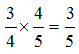
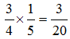


100. 登記錯誤與錯誤登記之差異¶
發布日期: 2018-11-29
各位同學好
由於一些同學有詢問土登第13條登記錯誤依土法第69條規定辦理更正登記，與土登第144條因錯誤之登記辦理塗銷登記究竟有何不同，今日專欄特別再為各位同學解說如下：
-
登記錯誤（土登13、土法69）→辦理更正登記（包含核准更正或逕行更正）
-
條文規定：所謂登記錯誤指登記事項與登記原因證明文件所載之內容不符者。登記人員或利害關係人，於登記完畢後，發見登記錯誤或遺漏時，非以書面聲請該管上級機關查明核准後，不得更正。但登記錯誤或遺漏，純屬登記人員記載時之疏忽，並有原始登記原因證明文件可稽者，由登記機關逕行更正之。
-
說明：指准予登記之行政處分並無違誤，僅登記機關辦理登記時未依登記原因證明文件所載內容登記而生登記事項與之不符情事（例如登記的權利義務關係並沒問題，只是登記簿上寫錯持分比例），登記機關即依職權或經利害關係人申請而辦理更正該不符部分之登記內容即可。
-
錯誤登記（土登144）→辦理塗銷登記
-
條文規定：有下列情形之一者，於第三人取得該土地權利之新登記前，登記機關得於報經直轄市或縣(市)地政機關查明核准後塗銷之(土登§144I)：
-
登記證明文件經該主管機關認定係屬偽造。
-
純屬登記機關之疏失而錯誤之登記。→又稱錯誤登記
-
說明：不應登記，純屬登記機關之疏失而錯誤登記者，代表該登記屬於違法之行政處分（例如要登記給曾榮耀，卻登記給曾榮發，權利人錯誤，致使不應獲得土地權利卻登記為有＝嚴重），故於第三人取得該土地登記權利前，自應由登記機關依職權撤銷原處分，辦理塗銷登記。
（亦即屬於原不應出現的登記，卻登載上去，故屬於違法行政處分，而將其塗銷）¶
注：本文圖片存放於 ./images/ 目錄下
101. 土地信託實例研習¶
發布日期: 2018-11-29
甲、乙二人共有一筆鹽地，甲之應有部分四分之三，乙之應有部分四分之一，甲未經乙同意將該地信託於丙，是否可行？甲、乙二人同意將該地信託，倘受託人為本國人丙，受益人為外國人丁，是否可行？倘受託人為外國人丁，受益人為本國人丙，是否可行？
【解答】
• (一) 土地法第34條之1第1項規定：「共有土地或建築改良物，其處分、變更及設定地上權、農育權、不動產役權或典權，應以共有人過半數及其應有部分合計過半數之同意行之。但其應有部分合計逾三分之二者，其人數不予計算。」準此，甲之應有部分四分之三，已逾三分之二，無須經乙之同意，就該地予以處分。惟此處分不包括信託行為，其理由有二：
-
信託行為以委託人與受託人具有強烈信賴關係為基礎，因此須經全體委託人同意，始得成立信託，故信託行為不得適用土地法第34條之1。
-
土地法第34條之1係於信託法公布前所訂定。換言之，土地法第34條之1所稱處分，不包括信託行為。
綜上，甲未經乙同意將該地信託於丙，為不可行。
• (二) 土地法第17條第1項規定：「左列土地不得移轉、設定負擔或租賃於外國人：一、林地。二、漁地。三、狩獵地。四、鹽地。五、礦地。六、水源地。七、要塞軍備區域及領域邊境之土地。」又，信託法第5條第4款規定，以依法不得受讓特定財產權之人為該財產權之受益人者，信託行為無效。準此，外國人對鹽地無權利能力，故不得作為信託關係之受益人，但得作為信託關係之受託人。基上，倘受託人為本國人丙，受益人為外國人丁，為不可行。倘受託人為外國人丁，受益人為本國人丙，為可行。¶
注：本文圖片存放於 ./images/ 目錄下
102. 土地法第34條之1實例研習(五)¶
發布日期: 2018-11-30
甲、乙、丙三人共有一筆土地，應有部分各三分之一，甲、乙二人未經丙之同意先將該筆土地設定地上權於丁，則丙是否有優先承受權？不久，又將該筆土地出售於戊，則丙、丁是否有優先承受權？
【解答】
• (一) 設定地上權：土地法第34條之1第4項規定：「共有人出賣其應有部分時，他共有人得以同一價格共同或單獨優先承購。」準此，優先承受權僅限於買賣，不包括設定地上權、農育權、不動產役權及典權。故甲、乙二人未經丙之同意將該筆土地設定地上權於丁，丙不得主張優先承受該地上權。
• (二) 出售土地：甲、乙二人未經丙之同意將該筆土地出售於戊，分下列二種情形說明：
- 丁在土地上興建房屋：丙依據土地法第34條之1有優先購買權，丁依據土地法第104條有優先購買權。惟前者僅具債權效力，後者則具物權效力。故丁之優先購買權優先於丙之優先購買權而行使。
2. 丁未在土地上興建房屋：丙依據土地法第34條之1有優先購買權，但丁因在該土地上無房屋存在，未符合土地法第104條之要件，故無優先購買權。¶
注：本文圖片存放於 ./images/ 目錄下
103. 土地法第25條實例研習¶
發布日期: 2018-12-03
台北市與私人甲、乙二人共有一筆土地，持分各三分之一。甲、乙二人未經台北市政府同意將該筆土地出售於丙，則買賣契約是否有效？上開情形，台北市政府是否須經土地法第25條之程序？
【解答】
• (一) 土地法第34條之1執行要點第4點：「共有土地或建物為公私共有者，有本法條之適用。私有部分共有人就公私共有土地或建物全部為處分時，如已符合本法條各項規定，其申請所有權變更登記，應予受理。但公有部分為直轄市或縣（市）有時，其管理機關於接獲共有人之通知後，以其處分係依據法律之規定，應即報請該管區內民意機關備查。」準此，甲、乙二人未經台北市政府同意將該筆土地出售於丙，因符合土地法第34條之1第1項規定之人數超過一半及持分超過一半，故買賣契約有效。
• (二) 土地法第25條規定：「直轄巿或縣（巿）政府對於其所管公有土地，非經該管區內民意機關同意，並經行政院核准，不得處分或設定負擔或為超過十年期間之租賃。」本題，台北市政府處分土地，其處分並非台北市政府以自己之意思使權利發生變更之處分行為，而係依據法律之規定，故無須受土地法第25條之拘束。換言之，台北市土地之處分無須經台北市議會同意及行政院核准，僅須報請台北市議會備查即可。¶
注：本文圖片存放於 ./images/ 目錄下
104. 財產權保障¶
發布日期: 2018-12-06
各位同學好
今日專欄討論「財產權保障」，與土地政策有關，請地特三等、高考、估價師的同學記得準備。有關土地徵收或國土法過渡時期相關題目皆可將下列概念納入申論當中。
• (一) 財產權保障之意涵
我國憲法第15條明定：「人民之生存權、工作權及財產權應與保障。」其財產權保障之概念含括：
-
存續保障：旨在確保個人依財產之存續狀態行使其自由使用、收益及處分之權能，並免於遭受公權力或第三人之侵害，俾能實現個人自由、發展人格及維護尊嚴。（亦即財產現有存續狀態之保障）
-
價值保障：如因公用或其他公益目的之必要，國家機關雖得依法徵收人民之財產，但應給予相當之補償，方符憲法保障財產權之意旨。（亦即財產本身的價值應予保障）
• (二) 財產權保障之法則
基於憲法保障人民財產權之基本權能下，當財產權受到侵害時，而有損害賠償或損失補償的彌補方式，其依循準則，有以下三種財產權保障之法則：
-
禁制法則(inalienability rules)：財產權不得移轉，即使所有權人自願出售或他人自願購買皆不得移轉，故無討價還價空間。
-
財產法則(property rule)：非經所有權人之同意價格下，他人不得取得其財產權，故所有權人於任何出價，均可拒絕移轉。
3. 義務法則(liability rule)：在客觀合理的價格下可以取得所有權人之財產權。政府徵收權的行使，基本上是所有權人受到義務法則的規範。而在義務法則的保障下，要求對財產損失，必須支付補償。而此種損失之補償標準，係為公正第三人，以市場價值所查估之價額。因此，此一價額下，土地所有權人不能拒絕轉讓。¶
注：本文圖片存放於 ./images/ 目錄下
105. 耕地分割實例研習¶
發布日期: 2018-12-06
甲、乙、丙三人共有一筆耕地，面積0.6公頃，每人持分相等，試問本共有耕地可否協議分割或裁判分割？
【解答】
• (一) 農業發展條例第16條第1項：「每宗耕地分割後每人所有面積未達○‧二五公頃者，不得分割。但有下列情形之一者，不在此限：一、因購置毗鄰耕地而與其耕地合併者，得為分割合併；同一所有權人之二宗以上毗鄰耕地，土地宗數未增加者，得為分割合併。二、部分依法變更為非耕地使用者，其依法變更部分及共有分管之未變更部分，得為分割。三、本條例中華民國八十九年一月四日修正施行後所繼承之耕地，得分割為單獨所有。四、本條例中華民國八十九年一月四日修正施行前之共有耕地，得分割為單獨所有。五、耕地三七五租約，租佃雙方協議以分割方式終止租約者，得分割為租佃雙方單獨所有。六、非農地重劃地區，變更為農水路使用者。七、其他因執行土地政策、農業政策或配合國家重大建設之需要，經中央目的事業主管機關專案核准者，得為分割。前項第三款及第四款所定共有耕地，辦理分割為單獨所有者，應先取得共有人之協議或法院確定判決，其分割後之宗數，不得超過共有人人數。」準此，本共有耕地如分割為三筆，每筆0.2公頃，然後分配予甲、乙、丙三人，則每人所有耕地面積未達0.25公頃，故不得為之。
• (二) 協議分割：甲、乙、丙三人協議分割，將耕地分配予部分共有人，如共有人中有未受分配或不能按其應有部分受分配者，得以金錢補償之。例如將本共有耕地協議分割為二筆，每筆0.3公頃，分配予甲、乙二人，丙則以金錢補償。此一協議分割方式未違反農業發展條例第16條規定，故仍得為之。
• (三) 裁判分割：民法第824條第1項、第2項及第3項規定：「共有物之分割，依共有人協議之方法行之。分割之方法不能協議決定，或於協議決定後因消滅時效完成經共有人拒絕履行者，法院得因任何共有人之請求，命為下列之分配：一、以原物分配於各共有人。但各共有人均受原物之分配顯有困難者，得將原物分配於部分共有人。二、原物分配顯有困難時，得變賣共有物，以價金分配於各共有人；或以原物之一部分分配於各共有人，他部分變賣，以價金分配於各共有人。以原物為分配時，如共有人中有未受分配，或不能按其應有部分受分配者，得以金錢補償之。」準此，法院裁判分配予部分共有人，如共有人中有未受分配或不能按其應有部分受分配者，得以金錢補償之。例如將本共有耕地裁判分割為二筆，每筆0.3公頃，分配予甲、乙二人，丙則以金錢補償。此一裁判分割方式未違反農業發展條例第16條規定，故仍得為之。
總之，本共有耕地可以協議分割，亦可以裁判分割。¶
注：本文圖片存放於 ./images/ 目錄下
106. 時效取得地上權之證明文件¶
發布日期: 2018-12-13
各位同學好
今日專欄為各位同學說明有關「時效取得地上權之土地登記應備文件」
首先，時效取得地上權登記之申請方式為「單獨申請」。其登記時應檢附文件如下：
• 一、土地登記申請書（及登記清冊）
• 二、登記原因證明文件
根據土地登記規則第108條之規定，土地總登記後，因主張時效完成申請地上權登記時，應提出以行使地上權意思而占有之證明文件及占有土地四鄰證明或其他足資證明開始占有至申請登記時繼續占有事實之文件。茲分別說明如下：
• (一) 主觀占有意思證明：以行使地上權意思而占有之證明文件，例如：
-
當事人間已有設定地上權之約定，本於該約定先將土地交付占有而未完成登記
-
已為申請地上權設定登記而未完成登記
-
已為設定登記但該設定行為具有無效情形
-
占有人於占有他人土地之始，即將以行使地上權之意思表示於外部並取得第三人之證明等之相關證明文件
• (一) 客觀占有事實證明：
-
占有土地四鄰證明
-
或其他足資證明開始占有至申請登記時繼續占有事實之文件，例如土地登記規則第79條之文件：
-
曾於該建物設籍之戶籍證明文件。
-
門牌編釘證明。
-
繳納房屋稅憑證或稅籍證明。
-
繳納水費憑證。
-
繳納電費憑證。
-
未實施建築管理地區建物完工證明書。
-
地形圖、都市計畫現況圖、都市計畫禁建圖、航照圖或政府機關測繪地圖。
• 三、申請人身分證明文件
• 四、其他文件
- 占有範圍位置圖：因主張時效完成，申請地上權、不動產役權或農育權登記時，應提出占有範圍位置圖。該位置圖應先向該管登記機關申請土地複丈。因此，實務上常將土地複丈與土地登記案件併送。此外，地政機關於申請人申請時效取得地上權複丈時，對於檢附之相關證明文件不作實質審查，亦不再依土地登記相關法規審查，相關之審查留待申辦登記時一併作業。
2. 委託書。¶
注：本文圖片存放於 ./images/ 目錄下
107. 預告登記實例研習¶
發布日期: 2018-12-13
甲將其土地出售於乙，暫未辦理所有權移轉登記，惟辦畢保全土地權利移轉請求權之預告登記。試問：(一)甲又將該地出售於丙，並辦畢所有權移轉登記，預告登記可否與之對抗？(二)該地遭法院拍賣，由丁拍得，預告登記可否與之對抗？
【解答】
• (一) 土地法第79條之1第2項規定：「前項預告登記未塗銷前，登記名義人就其土地所為之處分，對於所登記之請求權有妨礙者無效。」準此，甲將該地出售於丙之處分，對預告登記之請求權有妨礙，因而無效。乙得訴請法院塗銷丙之所有權登記。
• (二) 土地法第79條之1第3項規定：「預告登記，對於因徵收、法院判決或強制執行而為新登記，無排除之效力。」準此，甲之土地遭法院拍賣（即強制執行），預告登記無排除之效力。換言之，拍定人丁取得該地所有權不受影響。¶
注：本文圖片存放於 ./images/ 目錄下
108. 釋字765¶
發布日期: 2018-12-20
各位同學好
這次地特四等考釋字765，此釋字實際較偏向行政法原則即法律保留原則，在我們土法第一堂課就會介紹這樣的概念。本期專欄再為同學們整理一下釋字765之重點如下：
相關解釋文及理由書省略，請同學自行查閱，以下是就各大法官之意見書整理相關重點，以供各位同學更容易瞭解：
☆違憲規定：
土地徵收條例施行細則第第52條第1項第5款規定
91年：「區段徵收範圍內必要之管線工程所需工程費用……，由需用土地人與管線事業機關（構）依下列分擔原則辦理：……八、新設自來水管線之工程費用，由需用土地人與管線事業機關（構）各負擔二分之一。」
95年修法：「五、新設自來水管線之工程費用，由需用土地人全數負擔。」
☆違憲理由：
因區段徵收之需用土地人常為地方自治團體（本案係台中市），自來水管線事業機構可能為具私法人地位之公營事業（本案係經濟部所屬國營事業台灣自來水股份有限公司），而上開規定無法律明確授權，卻逕就新設自來水管線之工程費用明定分擔原則，事涉需用土地人之財政自主權及自來水管線事業機構之憲法財產權限制，本號解釋認與法律保留原則有違。
☆重點釐清：
-
僅適用地方自治團體：本號解釋僅處理需用土地人為地方自治團體之情形，而不包括需用土地人為中央之情形，由於系爭規定及現行規定為中央（內政部）所制定，故中央以該等規定要求自己負擔此種費用，應無違反法律保留原則之疑義。
-
私法人同私人受憲法保障：只要具備私法人地位，公營事業縱係百分之百由公家持股，其在之憲法上財產權保障及其聲請解釋憲法之權，原則上與一般私人並無不同。具私法人地位之公營事業，雖受公益目的較大制約，並受國家指揮監督，然其既有獨立之私法人地位，享有憲法財產權之保障，則國家對其財產權所為之限制，亦應由法律或法律明確授權之命令予以規範。
-
應符合憲法上法律保留原則，分別為以下兩者：
★公營事業受憲法基本權保障之程度及其權利之限制有無法律保留之適用？→(1)對私法人財產權限制應符合「憲法第23條法律保留原則」：憲法第23條要求對人民權利之限制應受法律保留原則之規範。百分之百公家持股之自來水事業既然享有憲法有關財產權之保障，則法令要求其負擔費用，屬於對其財產權之限制，自應符合法律保留原則之意旨。不能因國營事業具公益目的，即得未經法律授權，任意增加或減少國營事業之財務負擔。
★地方自治團體負擔費用之事項是否亦應受法律保留原則之拘束？→(2)要求地方自治團體負擔經費亦必須符合「法治國法律保留原則」：憲法第109條規定必須由中央立法並執行或交由地方執行之事項。要求地方自治團體負擔自來水幹管經費將影響地方自治團體之財政自主權。
-
自來水供應涉及人民之健康權，國家有相當義務：倘依系爭規定，使需用土地人負擔二分之一，或依現行規定，使需用土地人負擔全部之管線工程費用，則有違反健康權之疑慮。
-
土地徵收條例施行細則不應有權利義務之實體規定：以法律授權主管機關發布命令為補充規定時，其授權應符合具體明確之原則。若僅屬執行法律之細節性、技術性事項，始得由主管機關發布命令為必要之規範。準此，系爭規定既屬行政命令，其涉及具私法人地位之公營自來水事業之財產權限制，非僅屬執行法律之細節性、技術性事項，自應有法律明確授權，方符合法律保留原則之要求。
6. 未來修法方向：於作區段徵收計畫時即應將開發效益與成本一併納入考量。開發成本包括各種管線之成本，該成本合理分擔之規劃，除應考量各管線事業之屬性外，尚應將區段徵收之效益考量在內，另考量作業延宕將影響土地所有權人權益等因素，可將這些因素綜合考量後，於土地徵收條例明定分擔原則。¶
注：本文圖片存放於 ./images/ 目錄下
109. 房屋與基地所有權分離之法律設計¶
發布日期: 2018-12-20
房屋與基地同屬一人所有，因讓與或拍賣造成所有權人各異時，民法有兩種處理方式，使房屋有使用基地之權利，以免房屋被基地所有權人行使民法第767條而遭受拆屋還地。一為推定有租賃關係，另一為視為已有地上權之設定（即法定地上權）。前者屬於債權，後者屬於物權。另，「推定」得以反證加以推翻，「視為」不得以反證加以推翻。茲整理相關規定如下：
• (一) 推定有租賃關係：土地及其土地上之房屋同屬一人所有，而僅將土地或僅將房屋所有權讓與他人，或將土地及房屋同時或先後讓與相異之人時，土地受讓人或房屋受讓人與讓與人間或房屋受讓人與土地受讓人間，推定在房屋得使用期限內，有租賃關係。其期限不受租賃期限不得逾二十年之限制。前項情形，其租金數額當事人不能協議時，得請求法院定之（民§425-1）。
• (二) 視為已有地上權之設定：
-
土地及其土地上之建築物，同屬於一人所有，因強制執行之拍賣，其土地與建築物之拍定人各異時，視為已有地上權之設定，其地租、期間及範圍由當事人協議定之；不能協議者，得請求法院以判決定之。其僅以土地或建築物為拍賣時，亦同。前項地上權，因建築物之滅失而消滅（民§838-1）。
-
設定抵押權時，土地及其土地上之建築物，同屬於一人所有，而僅以土地或僅以建築物為抵押者，於抵押物拍賣時，視為已有地上權之設定，其地租、期間及範圍由當事人協議定之。不能協議者，得聲請法院以判決定之。設定抵押權時，土地及其土地上之建築物，同屬於一人所有，而以土地及建築物為抵押者，如經拍賣，其土地與建築物之拍定人各異時，適用前項之規定（民§876）。
綜上，「讓與」屬於私經濟行為，採推定有租賃關係；「拍賣」屬於公權力行為，採視為已有地上權之設定。須注意者，區分所有建物受民法第799條第5項及公寓大廈管理條例第4條第2項之限制，房屋與基地所有權不得分離。因此，非屬區分所有建物（如透天房屋）之房屋與基地所有權始有分離的可能。¶
注：本文圖片存放於 ./images/ 目錄下
110. 土地參考資訊檔¶
發布日期: 2018-12-27
各位同學好
今日專欄為各位說明有關土地參考資訊檔，土地登記考試相關參考。
• 一、意涵
土地參考資訊檔＝非屬土地法規定應登記事項之資訊
所謂「土地參考資訊檔」為「地政事務所將有關機關要求註記於土地登記簿之事項（例如海沙屋、受污染農地、容積移轉等），以電腦轉檔方式附屬記載於土地登記資料庫內，並且提供相關機關及社會大眾參考使用之資料而言」。進一步提供其他與民眾權益息息相關但與登記效力無涉之土地或建物參考資訊該項作業主要係為滿足民眾對於土地資訊知的權利，期能減少交易糾紛並促進土地利用。
• 二、目的
為建立土地參考資訊檔，以利各級政府機關建置與土地或建物有關之資訊，提供相關機關及社會大眾參考使用，並達到土地、建物資訊單一窗口服務之功能。
• 三、時間
自96年7月11日起，地政事務所開始提供土地參考資訊查詢列印服務，獲得更多與申請標的相關之資訊。¶
注：本文圖片存放於 ./images/ 目錄下
111. 權利清理（三七五租佃）實例研習¶
發布日期: 2018-12-27
法規可能已修正
本文發布（2018-12-27）後，文中引用的 都市更新條例第37條（2019-01-30 修正）有修正，內容可能與現行規定不同，請以全國法規資料庫的現行條文為準。
甲、乙、丙、丁四人分別在A、B、C、D四宗土地上存在三七五租賃。當A地進行一般徵收，B地進行區段徵收，C地進行市地重劃，D地進行都市更新權利變換，則甲、乙、丙、丁四人所擁有之租賃權如何處理或保障？
• (一) A地進行一般徵收：平均地權條例第11條第1項及第2項規定：「依法徵收或照價收買之土地為出租耕地時，除由政府補償承租人為改良土地所支付之費用，及尚未收穫之農作改良物外，並應由土地所有權人，以所得之補償地價，扣除土地增值稅後餘額之三分之一，補償耕地承租人。前項補償承租人之地價，應由主管機關於發放補償或依法提存時，代為扣交。」準此，甲在A地上存在三七五租賃，A地進行一般徵收時，租約消滅，但應給予承租人甲三項補償，即①改良土地所支付之費用②尚未收穫農作物之價額③所得補償地價扣除土地增值稅（應注意者，土地徵收免徵土地增值稅，故土地增值稅為零）後餘額之三分之一。
• (二) B地進行區段徵收：土地徵收條例第41條規定：「土地所有權人申請發給抵價地之原有土地上訂有耕地租約或設定他項權利或限制登記者，除第四十二條另有規定外，直轄巿或縣（巿）主管機關應通知申請人限期自行清理，並依規定期限提出證明文件。申請人未依前項規定辦理者，直轄巿或縣（巿）主管機關應核定不發給抵價地。直轄巿或縣（巿）主管機關經核定不發給抵價地者，應於核定之次日起十五日內發給現金補償。」準此，乙在B地上存在三七五租賃，B地進行區段徵收時，應由B地所有權人限期自行清理（即由B地所有權人與承租人乙協商）；未自行清理或自行清理無結果，主管機關不發給抵價地，改發給現金補償。如改發給現金補償，對承租人乙之保障，如同上開一般徵收。
• (三) C地進行市地重劃：平均地權條例第63條第1項及第2項規定：「出租之公、私有耕地因實施市地重劃致不能達到原租賃之目的者，由直轄市或縣（市）政府逕為註銷其租約並通知當事人。依前項規定註銷租約者，承租人得依左列規定請求或領取補償：一、重劃後分配土地者，承租人得向出租人請求按重劃計畫書公告當期該土地之公告土地現值三分之一之補償。二、重劃後未受分配土地者，其應領之補償地價，由出租人領取三分之二，承租人領取三分之一。」平均地權條例施行細則第89條規定：「本條例第六十三條所稱因實施市地重劃致不能達到原租賃之目的者，指左列情形而言：一、重劃後未受分配土地者。二、重劃後分配之土地，經直轄市或縣（市）政府認定不能達到原租賃目的者。」又，市地重劃實施辦法第48條規定：「重劃前訂有耕地三七五租約之土地，如無本條例施行細則第八十九條所定不能達到原租賃目的之情形者，主管機關應於重劃分配結果公告確定後二個月內邀集權利人協調。協調成立者，應於權利變更登記後函知有關機關逕為辦理終止租約登記。協調不成者，應於權利變更登記後函知有關機關逕為辦理租約標示變更登記。」準此，丙在C地上存在三七五租賃，C地進行市地重劃時，倘主管機關逕為註銷租約，則承租人丙得向出租人請求公告土地現值三分之一或補償地價三分之一之補償。倘主管機關未逕為註銷租約，則主管機關邀集雙方協調。若協調成立，終止租約；若協調不成立，租約存續。
• (四) D地進行都市更新權利變換：都市更新條例第37條第2項規定：「權利變換範圍內出租之土地訂有耕地三七五租約者，應由承租人選擇依第三十九條或耕地三七五減租條例第十七條規定辦理，不適用前項之規定。」準此，丁在D地上存在三七五租賃，D地進行都市更新權利變換時，承租人丁可以選擇分配房地或現金補償。
- 若選擇分配房地，則就D地所有權人應分配房地權利範圍內，按耕地三七五租約價值占D地所有權價值之比例，分配房地予承租人丁。
2. 若選擇現金補償，則應給予承租人丁三項補償，即①改良土地所支付之費用②尚未收穫農作物之價額③終止租約當期之公告現值減除土地增值稅後餘額三分之一。¶
注：本文圖片存放於 ./images/ 目錄下